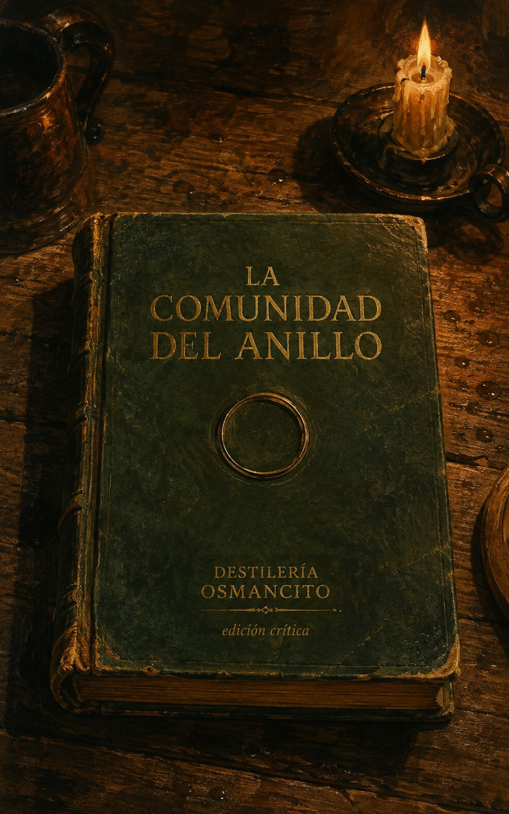
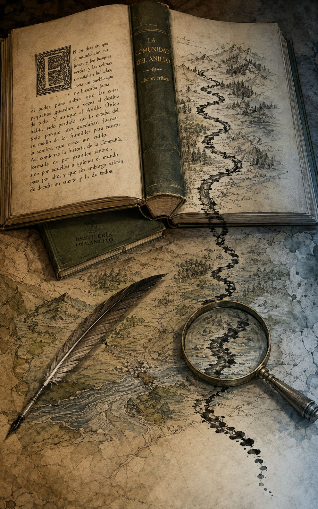
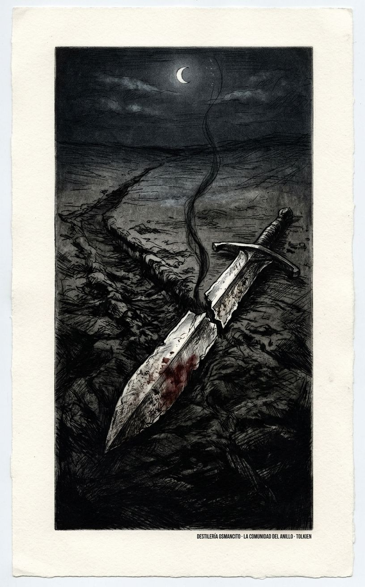
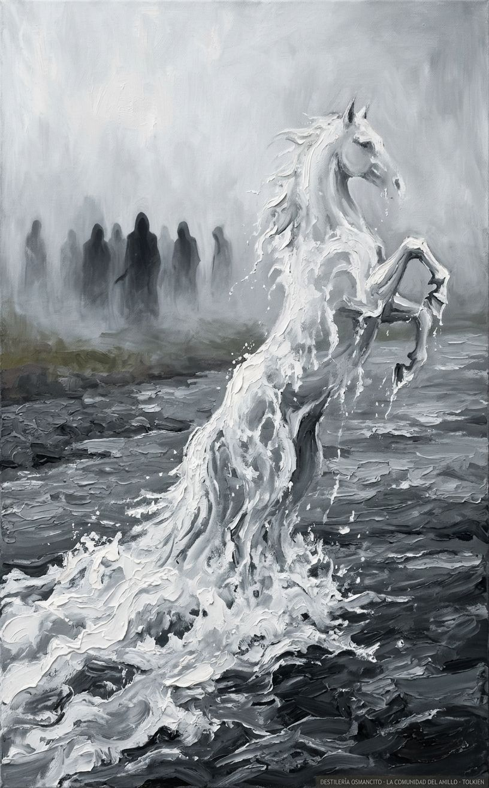
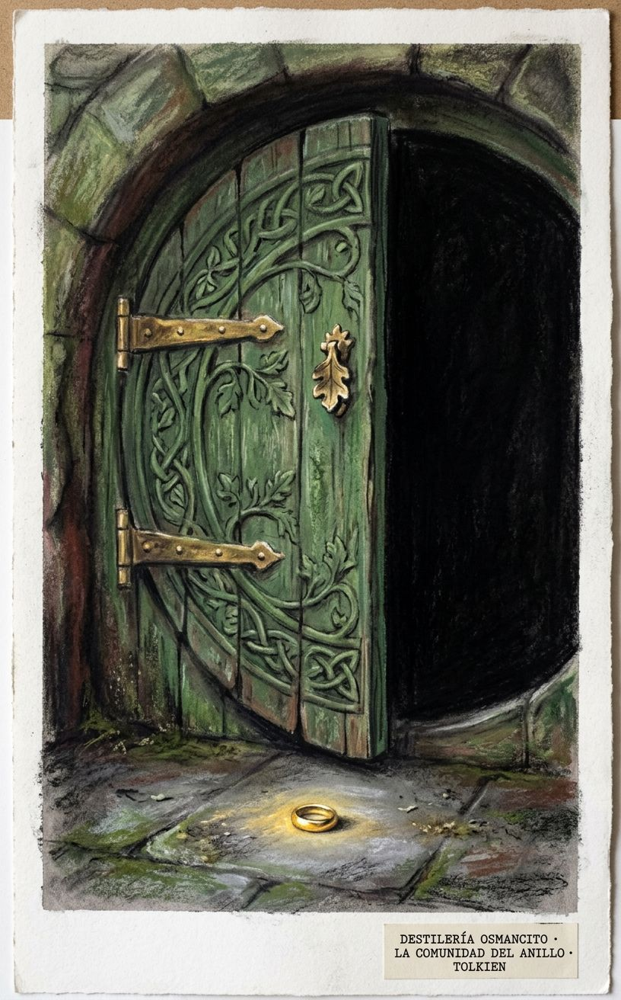
Un peso de papel curtido y hoja de oro, más denso de lo que su tamaño promete: alguien encuadernó esto para que durara más que una lectura.
Este no es el libro que promete su reputación. Antes de que ocurra ninguna hazaña, el texto se detiene una y otra vez a contar quién heredó una cuchara, quién hizo un chiste en una etiqueta de regalo, quién se comió una manzana en el camino — y solo cuando el lector ya ha bajado la guardia, deja caer sobre esa domesticidad un cuchillo que no sana. Lo que se recordará no es el peligro: es que el peligro entra por la puerta de una fiesta de cumpleaños.*
Nombrar lo que este corpus es —no lo que cuenta— exige otra pregunta. No pregunta qué le pasa a Frodo: pregunta cuánto tarda un mundo entero, con sus testamentos, cucharas y rimas de sobremesa, en admitir que ya no es seguro. Este fragmento no es una aventura que empieza: es una paz que se agrieta oración por oración, hasta que el lector, como los hobbits, descubre que ya cruzó la frontera sin haberlo decidido.
Título — The Lord of the Rings Illustrated (Volumen I: The Fellowship of the Ring, Prólogo a Capítulo 12) Autor — J. R. R. Tolkien (ilustraciones de Alan Lee) Año — 1954 Género — Novela de fantasía épica Extensión estimada — Aproximadamente 97.700 palabras · 391 páginas aproximadas (250 palabras/página) · 1 Prólogo + 12 capítulos (Libro Primero completo) Idioma original — Inglés Palabra más frecuente con contenido — Frodo. Coincide con lo que el corpus declara ser: un relato centrado en su protagonista nominal. No hay desvío que exponer — la frecuencia confirma el título.
Frodo Baggins hereda de su tío Bilbo una casa, una fortuna modesta y un anillo de oro cuya naturaleza nadie, al principio, sospecha peligrosa. Diecisiete años después, el mago Gandalf regresa para revelar que el anillo es el Anillo Único forjado por Sauron, y que debe salir de la Comarca. Frodo parte hacia Rivendel acompañado por Sam, Merry y Pippin, atravesando el Bosque Viejo, los Túmulos y la ciudad fronteriza de Bree, donde se les une el montaraz Trancos. Perseguidos por los Jinetes Negros —espectros al servicio de Sauron que buscan el Anillo—, el grupo es alcanzado en Weathertop, donde Frodo resulta herido por un cuchillo de Morgul. El fragmento cierra con la huida hasta el Vado de Bruinen, donde una crecida invocada por Elrond arrastra a los Jinetes justo cuando alcanzan a Frodo.
Frodo Baggins — hobbit, sobrino y heredero de Bilbo, portador del Anillo. Bilbo Baggins — hobbit anciano, antiguo poseedor del Anillo, desaparece al inicio. Gandalf — mago itinerante, quien identifica el Anillo y advierte del peligro. Sam Gamgee — jardinero de Frodo, compañero de viaje. Merry Brandybuck y Pippin Took — primos y amigos de Frodo, se suman a la huida. Trancos (Aragorn) — montaraz que protege y guía al grupo desde Bree. Tom Bombadil — ser enigmático del Bosque Viejo, ajeno al poder del Anillo. Los Jinetes Negros (Nazgûl) — sirvientes espectrales de Sauron que persiguen a Frodo. Glorfindel — elfo de Rivendel que llega en su rescate final.
La herencia de Frodo no es solo la casa de Bilbo: es un secreto que ninguno de los dos entendía del todo. Gandalf regresa después de años de ausencia para confirmar, tras investigar, que el anillo dorado es el Anillo Único —arma y ancla de Sauron, forjado para dominar a todos los demás anillos de poder. Esa revelación convierte una comodidad doméstica en una amenaza que ya está en marcha: Sauron sabe el nombre “Bolsón” y ha enviado a los Nazgûl, sus Jinetes Negros, a buscarlo.
Frodo decide partir de la Comarca no como un héroe que elige la aventura, sino como alguien que protege a su gente alejando el peligro de ella. Vende Bolsón Cerrado bajo la tapadera de una mudanza a Cricava, y sale a pie con Sam, Merry y Pippin — quienes, se revela, ya sabían del Anillo y habían organizado en secreto acompañarlo. La primera amenaza real llega en el camino: un Jinete Negro que huele en vez de ver, que casi obliga a Frodo a ponerse el Anillo por puro miedo.
Para escapar de la vigilancia en los caminos principales, el grupo se interna en el Bosque Viejo, un lugar donde los árboles guardan memoria y hostilidad propias. Son casi devorados por el Viejo Hombre-Sauce antes de ser rescatados por Tom Bombadil, un ser cuya naturaleza nunca se explica y sobre quien el Anillo no tiene poder alguno — la primera y única grieta en la lógica de dominio total del objeto. Bombadil los aloja junto a Baya de Oro, y al día siguiente el grupo es capturado por un Espectro de los Túmulos en las Quebradas de los Túmulos; Bombadil vuelve a rescatarlos y les entrega dagas de Númenor que resultarán decisivas más adelante.
Llegan a Bree, donde se hospedan en la posada de El Poney Pisador. Allí conocen a Trancos, un montaraz de aspecto sospechoso que resulta ser aliado de Gandalf y guardián silencioso de las fronteras del norte. Esa misma noche, los Jinetes Negros atacan la posada equivocando unos bultos de almohadas por los hobbits dormidos; en Cricava, la casa señuelo de Fredegar Bolger es asaltada también, y Gordo hace sonar el cuerno de alarma de Los Gamos. El grupo, ahora guiado por Trancos, abandona el camino principal y cruza los Pantanos de Aguamedia hacia la Cima de los Vientos.
En Cima de los Vientos son alcanzados: el Rey Brujo de Angmar, jefe de los Nazgûl, hiere a Frodo con un cuchillo de Morgul cuya punta permanece dentro de la herida, avanzando hacia su corazón. Trancos guía la huida desesperada hacia Rivendel mientras Frodo empeora; en el camino se les une Glorfindel, elfo enviado desde Rivendel, quien monta a Frodo en su caballo Asfaloth para la carrera final. En el Vado de Bruinen, con los Nueve Jinetes a punto de alcanzarlo, una crecida repentina —invocada por Elrond— arrastra a los perseguidores. El fragmento termina con Frodo perdiendo el conocimiento en la orilla, la herida sin resolver, el destino aún abierto.
Primer contacto. Este fragmento no tiene la textura de una aventura que arranca: tiene la textura de una casa que se vacía. Empieza entre testamentos, cucharas heredadas y chismes de vecindad, y solo lentamente —nunca de golpe— deja entrar el frío. Cuando llega el peligro real, ya es demasiado tarde para que se sienta como espectáculo: se siente como una intrusión en algo que el lector ya quería proteger. Lo que queda al cerrar la última página no es la persecución, sino la vulnerabilidad de lo pequeño y lo cotidiano frente a algo que ni siquiera necesita mostrarse por completo para dar miedo.
¿Puede protegerse lo pequeño precisamente siendo pequeño, o la insignificancia es solo una ilusión que dura hasta que algo grande decide notarla?
La amistad como conspiración: los que más aman a Frodo son los que más lo desobedecen — ¿es lealtad o es una forma de arrebatarle el derecho a sufrir solo?
El objeto que no se explica —Bombadil, la crecida del río, el poder que actúa sin pedir permiso ni dar razones— frente al objeto que se explica demasiado bien: el Anillo, cuya lógica de dominio total no tiene grietas salvo esa que el corpus nunca resuelve.
El texto se presenta como un tratado de historiador aficionado, con voz erudita y distante, muy distinta a la voz narrativa de los capítulos. Se organiza en cuatro apartados y una nota final.
Sobre los Hobbits. Se describe a los hobbits como pueblo antiguo, pequeño, amante de la tierra cultivada y ajeno a la maquinaria; hábiles con las manos, sigilosos por costumbre más que por magia. Se detalla su altura variable, su aversión a los zapatos por las plantas curtidas de sus pies, su gusto por los colores vivos y las seis comidas diarias. Se establece su parentesco lejano con los Hombres, más cercano que con Elfos o Enanos, y se afirma que su origen se pierde en los tiempos anteriores incluso a las crónicas élficas. Se narra la migración original desde los altos valles del Anduin, el oscurecimiento del bosque que se convirtió en Bosque Negro, y el cruce de las Montañas Nubladas hacia Eriador. Se distinguen las tres razas ancestrales —Pelosos, Fuertes y Albos— con sus rasgos físicos y temperamentales propios, y su fusión progresiva tras el asentamiento. Se narra la fundación de la Comarca: en el año 1601 de la Tercera Edad, los hermanos Fallohide Marcho y Blanco cruzan el Baranduin con el permiso del rey de Fornost y toman la tierra entre el río y las Quebradas Lejanas, comprometiéndose a mantener el Gran Puente. Así nace la Cuenta de la Comarca. Se resume la historia posterior: la caída del Reino del Norte tras la batalla de Fornost contra el Rey Brujo de Angmar, la elección de un Thain propio, siglos de paz interrumpida solo por la Gran Peste y el Invierno Largo, y la única batalla librada dentro de la Comarca, la de los Campos Verdes (S.C. 1147), en que Bandobras Toro Bramador rechazó una invasión de orcos. Se describe la organización administrativa mínima: el Alcalde de Delagua Grande, elegido cada siete años, cuyas funciones reales son presidir banquetes y supervisar el Correo y los Alguacilillos (Shirriffs), doce en total, más ocupados de animales extraviados que de personas. Se cierra el apartado señalando que, en la época en que arranca la historia, los Guardabosquianos (Bounders) se habían multiplicado por los rumores de gente y criaturas extrañas merodeando las fronteras, y que ni siquiera Bilbo sospechaba entonces lo que eso presagiaba.
Sobre la hierba para pipas. Se atribuye a Meriadoc Brandigamo, citado directamente, la investigación sobre el origen del hábito de fumar hierba de pipa. Meriadoc establece que Poldo Cuernavilla de Fondobosque, en Comarca del Sur, fue el primero en cultivarla con éxito hacia el año 1070, y especula —contra la reticencia de los propios Hobbits de Bree, que reclaman prioridad— que la planta llegó originalmente desde el sur de Gondor, traída por los Hombres de Oesternesse, y que fueron los hobbits, no los Magos ni los Dúnedain, quienes primero la fumaron en pipa. Menciona de pasada que un Mago que él conoció llegó a dominar el arte tanto como cualquier otra cosa que se propusiera: alusión no explicada a Gandalf.
Del gobierno de la Comarca. Se detalla la división administrativa en cuatro Cuarteles (Farthings) y las Marcas del Este y el Oeste, incluida Los Gamos, añadida en 1452. Se insiste en que la Comarca en la época del relato carecía casi por completo de gobierno efectivo: las familias se administraban solas, la vieja tradición del rey de Fornost sobrevivía solo como referencia moral difusa, y la familia Tuk, por herencia del Thainazgo, gozaba de respeto especial sin poder real. Se cierra el apartado anticipando el tema central: Bilbo, con sesenta años transcurridos desde su desaparición y regreso, guarda en secreto un anillo hallado en su viaje, algo que ni siquiera Frodo, su sobrino adoptivo, conoce del todo.
Del hallazgo del Anillo. Se resume, remitiendo a El Hobbit, la llegada de Gandalf y trece enanos liderados por Thorin Escudo de Roble a la puerta de Bilbo, la búsqueda del tesoro bajo la Montaña Solitaria, la muerte del dragón y de Thorin en la Batalla de los Cinco Ejércitos, y el incidente decisivo: Bilbo, extraviado en las minas de orcos bajo las Montañas Nubladas, encuentra un anillo de oro en el suelo de un túnel y se lo guarda sin saber lo que es. Se narra el encuentro con Gollum en el lago subterráneo, la partida de acertijos apostada a la propia vida de Bilbo, la pregunta trampa (What have I got in my pocket?) que Gollum no logra responder, la promesa rota de Gollum al descubrir que ha perdido su “Precioso” y su intento de matar a Bilbo, y el escape de Bilbo gracias al anillo que se desliza accidentalmente en su dedo. Se detalla la divergencia entre dos versiones del episodio: la que Bilbo contó primero a sus compañeros y consignó en sus memorias —que el anillo le fue prometido como “regalo de cumpleaños”— y la verdadera, que Gandalf le arrancó tras un interrogatorio prolongado que tensó su amistad. Se subraya que esta mentira sostenida, “muy contraria a su costumbre”, fue la primera señal de alarma real de Gandalf sobre la naturaleza del anillo, aunque el mago no llegó a entender su gravedad hasta mucho después. Se cierra con el regreso de Bilbo a Bolsón Cerrado el 22 de junio de S.C. 1342 y con la fecha en que arranca la Historia: los preparativos para el cumpleaños ciento once de Bilbo, S.C. 1401.
Nota sobre los Archivos de la Comarca. Apartado final que explica la ficción documental de la obra completa: el relato deriva del Libro Rojo de la Frontera del Oeste, diario privado de Bilbo ampliado por Frodo con el relato de la Guerra del Anillo durante S.C. 1420-1, al que se añadieron tres volúmenes de traducciones de Bilbo del élfico y, más tarde, un quinto volumen de comentarios y genealogías. Se detalla la cadena de copias —la de Meriadoc y Peregrin en Los Gamos y Gran Smial, la copia gondoriana de Findegil terminada en S.C. 1592— y se mencionan las obras eruditas atribuidas a Meriadoc (Hierbas de la Comarca, Cómputo de los Años) y a los archivos de Gran Smial, ricos en materiales sobre Elendil y sus herederos pero pobres en interés para la gente corriente de la Comarca.
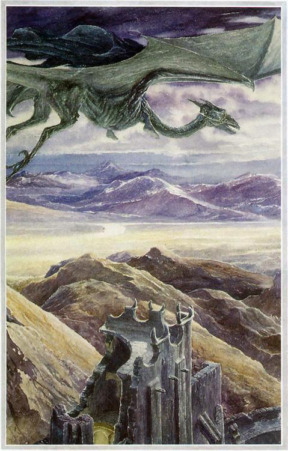
Bilbo Bolsón, rico y peculiar desde su desaparición y regreso sesenta años atrás, anuncia una fiesta de magnificencia especial por su cumpleaños ciento once. La expectación recorre Hobbiton y Delagua. Se establece el vínculo entre Bilbo y Frodo: adoptado como heredero a los noventa y nueve años de Bilbo, comparten cumpleaños el 22 de septiembre. La escena en La Enredadera, con el viejo Gaffer Gamyi contando la historia de los padres de Frodo —Drogo Bolsón y Prímula Brandigamo, ahogados en el Brandivino tras una cena en Casa Brandi— establece el trasfondo de la orfandad de Frodo y la rivalidad latente con los Sacovilla-Bolsón, que esperaban heredar Bolsón Cerrado. El rumor sobre el tesoro de Bilbo circula pese a las correcciones del Gaffer.
Llegan los carros de los enanos y luego el propio Gandalf, reconocido por su marca de fuegos artificiales (una G roja rúnica).
Diálogo entre Bilbo y Gandalf en la ventana del estudio: Bilbo confirma que sostiene su plan, sin especificar cuál todavía. Los preparativos se aceleran: invitaciones, provisiones, el gran pabellón con el árbol dentro, la cocina al aire libre. La fiesta del 22 de septiembre reúne a “prácticamente todo el mundo” cercano, con regalos para todos los asistentes (costumbre hobbit invertida respecto a la humana), fuegos artificiales diseñados por Gandalf que culminan en un dragón de humo que sobrevuela la multitud. La cena familiar de ciento cuarenta y cuatro invitados (un Gross) incluye a los Sacovilla-Bolsón, Otho y Lobelia, que asisten a regañadientes.
El discurso de Bilbo: tras bromas y cifras numéricas que insultan sin querer a los invitados (“no conozco ni a la mitad de la mitad de vosotros tanto como quisiera”), anuncia sus Tres Propósitos —afecto, celebración compartida con Frodo, que cumple treinta y tres años y “entra en su herencia”— y culmina con el anuncio del ANUNCIO: se marcha, ahora, adiós. Se pone el anillo y desaparece con un destello (añadido deliberado de Gandalf para disimular el efecto real del anillo). La reacción es de estupor y luego indignación generalizada; solo el viejo Rory Brandigamo sospecha que “hay gato encerrado”. Frodo, el único que sabía, se queda con sentimientos encontrados: diversión ante la broma y pena profunda al comprender cuánto quiere al viejo hobbit.
Escena privada en Bolsón Cerrado: Bilbo se cambia de ropa, prepara su equipaje, mete el anillo en un sobre dirigido a Frodo, lo pone en la repisa y luego se lo mete al bolsillo. Llega Gandalf. Diálogo extenso: Bilbo confirma que se va “quizá para siempre”, habla de sentirse “estirado, como mantequilla untada sobre demasiado pan”. Gandalf le pregunta directamente si dejará el anillo también a Frodo. Bilbo vacila, se resiste, y estalla en un arrebato de posesividad (“Es mío. Lo encontré. Vino a mí”), llamándolo “mi Precioso” —eco textual de Gollum que alarma profundamente a Gandalf, quien se yergue amenazante y por un instante muestra su verdadero poder (“Gandalf el Gris sin capucha”). Bilbo cede, se disculpa, describe la sensación del anillo como “un ojo que me mira”. Acaba dejándolo en la repisa (Gandalf debe recogerlo él mismo cuando se le cae de las manos temblorosas de Bilbo) y se marcha esa misma noche con tres enanos, cantando el poema “El Camino sigue y sigue”. Gandalf se despide en la oscuridad.
Frodo regresa, encuentra a Gandalf con el sobre. Recibe el anillo con curiosidad ligera (“Puede ser útil”); Gandalf le advierte, sin explicar por qué, que lo mantenga “secreto y a salvo”, y se marcha esa misma noche, alegando asuntos urgentes, dejando a Frodo con una sensación de peso inexplicable en la despedida.
El día después, Frodo asume su papel de nuevo amo de Bolsón Cerrado. Se narra en detalle cómico el reparto de regalos etiquetados por Bilbo —el paraguas de Adelard Tuk, la papelera de Dora Bolsón, la cuchara de plata devuelta a Lobelia con sorna— y la invasión de curiosos que buscan supuesto tesoro escondido, incluida la confrontación de Otho con el testamento (legítimo, en tinta roja con siete firmas) y el enfrentamiento de Frodo con Lobelia, a quien despoja de objetos robados escondidos en su paraguas. Merry Brandigamo ayuda a Frodo a controlar la casa. Al final del día, Gandalf regresa brevemente, anuncia que se marcha “de inmediato” por asuntos que no explica, y en la despedida advierte a Frodo con extrema seriedad que use el anillo “muy raramente, o nada en absoluto” y que evite cualquier cosa que “cause habladurías o levante sospechas”. Frodo queda perturbado por el peso inusual que ve en el mago al alejarse.
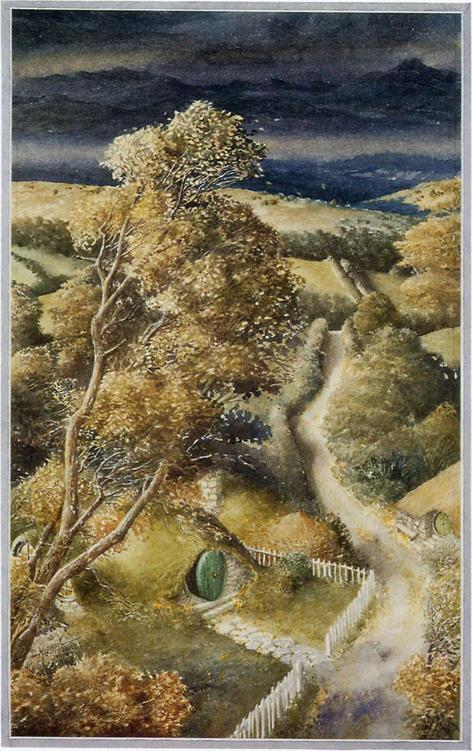
Pasan diecisiete años en unas pocas páginas de resumen narrativo. El rumor de la desaparición de Bilbo se asienta como leyenda (“Bilbo el Loco”). Frodo mantiene la costumbre de celebrar el cumpleaños de Bilbo cada año, se niega a llevar luto y sostiene, contra la opinión general, que Bilbo no está muerto. Se establecen sus amistades cercanas: Folco Boffin, Fredegar Bolger, y sobre todo Peregrin Tuk (Pippin) y Meriadoc Brandigamo (Merry). Se detalla el fenómeno de “buena conservación” de Frodo, paralelo al de Bilbo, que empieza a inquietar a sus vecinos cuando se acerca a los cincuenta. Internamente, Frodo siente crecer una inquietud de viajero que había reprimido.
Escena en El Dragón Verde de Delagua: diálogo entre Sam Gamyi y Ted Sandyman sobre rumores de gigantes-árbol, elfos que emigran hacia Occidente, y el nombre temido de Mordor, que circula entre los hobbits solo como sombra legendaria. Sam confiesa su fascinación por los Elfos y su deuda de conocimiento con Bilbo. Esa misma noche, tras nueve años de ausencia total, Gandalf reaparece con un toque familiar en la ventana del estudio.
El diálogo central del capítulo, extenso y de máxima densidad expositiva: Gandalf revela a Frodo la verdadera naturaleza del anillo. Explica el sistema de los Anillos de Poder forjados en Eregion: Tres para los Elfos, Siete para los Enanos, Nueve para los Hombres —convertidos en los Espectros del Anillo—, y el Uno, forjado por el propio Sauron para dominar a todos los demás. Relata cómo Isildur cortó el Anillo de la mano de Sauron tras la Última Alianza, cómo se perdió en el río Anduin cuando Isildur fue emboscado en los Campos Gladios, y cómo llegó a manos de Sméagol —origen de Gollum—, quien asesinó a su amigo Déagol por él y fue expulsado de su familia, refugiándose bajo las Montañas Nubladas durante siglos. Gandalf narra su propia investigación: cómo interrogó personalmente a Gollum, “poniéndole el miedo del fuego encima”, y cómo rastreó su huella hasta Mordor, donde el Enemigo lo capturó y lo interrogó a su vez, aprendiendo así que el Anillo Único había sido hallado y que el nombre “Bolsón” y la palabra “Comarca” podían ser relevantes para él.
Prueba de fuego: Gandalf arroja el anillo a las brasas y revela la inscripción en fuego, en la lengua negra de Mordor, con el verso “Un Anillo para gobernarlos a todos”.
Frodo intenta destruirlo golpeándolo y descubre que es indestructible salvo en las Grietas del Destino, en el Monte del Destino, dentro de Mordor. Gandalf se niega categóricamente a tomar el anillo él mismo, temiendo su propio poder corrompido. Frodo decide, tras dudar, conservarlo y abandonar la Comarca para protegerla, movido también por un deseo secreto de seguir a Bilbo. Gandalf aprueba, le da el nombre de viaje “Sr. Sotomonte” y le aconseja llevar compañía de confianza.
Cierre cómico-dramático: Sam Gamyi es descubierto espiando bajo la ventana mientras recortaba el césped. Confiesa que escuchó por accidente y que desea ver Elfos. Gandalf, en lugar de castigarlo, decide como “castigo” que Sam acompañe a Frodo en el viaje. Sam llora de alegría.
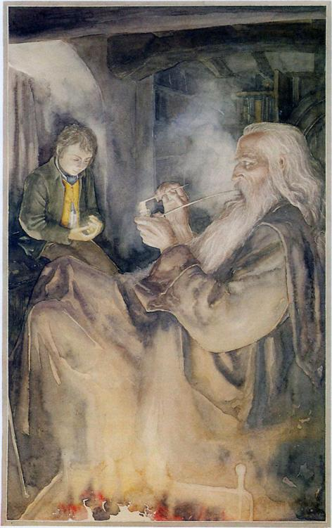
Frodo demora la partida hasta el otoño, decidido a marcharse en su quincuagésimo cumpleaños (el ciento veintiocho de Bilbo), atraído por la idea de seguir sus pasos. Gandalf aprueba el plazo pero insiste en el secreto absoluto sobre destino y dirección. Frodo decide vender Bolsón Cerrado a los Sacovilla-Bolsón como tapadera, fingiendo mudarse a Los Gamos por motivos financieros, cuando en realidad, con ayuda de Merry, ya ha comprado una casa en Cricava cerca de Casabuena para simular un traslado permanente.
Gandalf desaparece de nuevo a finales de junio, alegando noticias inquietantes que debe investigar en el sur, y no regresa. Pasa el verano y llega septiembre sin noticia suya. La cena de despedida, la última con vino Old Winyards, se celebra sin Gandalf. Al día siguiente, tras el reparto final del equipaje y la visita fastidiosa de Lobelia y Lotho Sacovilla-Bolsón reclamando la casa, Frodo, Pippin y Sam parten a pie al anochecer, atravesando los campos para evitar el pueblo.
En el camino, Frodo escucha por casualidad al Gaffer despachar a un extraño que pregunta por “Baggins” con voz desagradable; no le da importancia hasta después. Duermen bajo un pino, sin vigilancia, mientras un zorro comenta para sí lo extraño de ver hobbits acampando al raso. A la mañana siguiente, mientras descansan junto a la carretera hacia el Bosque Cerrado, Frodo recita espontáneamente el poema del Camino, que Pippin identifica como estilo de Bilbo.
Primer encuentro con un Jinete Negro: un hombre encapuchado en un caballo negro se detiene junto al árbol donde Frodo se oculta, olfateando; Frodo siente el impulso irresistible de ponerse el anillo pero se resiste. El jinete se marcha al oír algo. Sam revela entonces —tardíamente— que su padre había despachado horas antes a un forastero que preguntaba por “Bolsón” con voz sibilante. Segundo encuentro nocturno: el jinete regresa, se arrastra hacia ellos, y es ahuyentado por el canto de un grupo de Elfos Altos que se aproxima. Los hobbits son recibidos por Gildor Inglorion y su compañía, exiliados de la Casa de Finrod camino a los Puertos Grises. Cena y descanso en el bosque. Diálogo nocturno entre Frodo y Gildor: el elfo confirma que los Jinetes son sirvientes del Enemigo sin dar más detalles (“no es para mí decir más — no sea que el terror te aparte de tu viaje”), aconseja no esperar a Gandalf si no llega pronto y no viajar solo, y nombra a Frodo “amigo de los Elfos”.
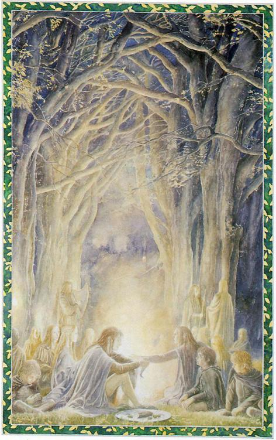
A la mañana siguiente, Frodo decide acelerar la partida hacia Los Gamos, tomando un atajo campo a través en lugar del camino largo. Diálogo con Sam en el que este confiesa que, tras la noche con los Elfos, siente que debe emprender “un camino largo, hacia la oscuridad” del que no puede volverse atrás, aunque no sabe bien por qué. Pippin protesta contra el atajo (recordando la promesa de buena cerveza en El Sauce de Oro de Stock) pero cede.
El atajo se complica: un arroyo obliga a un rodeo, avistan de nuevo la silueta de un Jinete en la cresta de la colina que acaban de dejar, se mojan y se ensucian cruzando el bosque bajo la lluvia. Escuchan un grito prolongado, evidentemente una señal, seguido de una respuesta lejana —ninguno de los tres puede identificar la criatura. Llegan finalmente a las tierras de labranza del Granjero Maggot, a quien Frodo teme desde la infancia por haberlo sorprendido robando champiñones. Escena cómica de reconciliación: los perros del granjero (Grip, Fang, Wolf) los reciben con ladridos, pero Maggot, al reconocer a Pippin, los invita a entrar.
Relato de Maggot: un Jinete Negro montado había llegado a su puerta preguntando por “Baggins” con voz susurrante, ofreciendo oro a cambio de información, y Maggot lo había despachado con amenazas. Maggot no relaciona directamente a Frodo con el extraño pero intuye “algo raro” y aconseja a Frodo quedarse en Los Gamos y evitar “esa gente de Hobbiton”. Tras la cena, Maggot los lleva en su carro hasta el Trasbarco. En el camino, un jinete se aproxima en la niebla —resulta ser Merry Brandigamo, que había salido a buscarlos preocupado. Maggot se despide con una cesta de champiñones de regalo de su esposa para “Mr. Baggins”.
Cruce del Brandivino en el transbordador nocturno; Sam, que nunca había cruzado el río, siente el peso simbólico de dejar la Comarca. Al mirar atrás, ven una figura negra en el embarcadero que parece buscar algo en el suelo y luego se desvanece en la niebla —Frodo confirma que “algo nos sigue”. Llegan a la nueva casa de Frodo en Cricava, donde Fredegar “Gordo” Bolger los espera. Escena de baños calientes y canción de Pippin (“Sing hey! for the bath”).
Durante la cena, ante la insistencia de Merry y Pippin, Frodo finalmente confiesa la verdad: los Jinetes lo buscan a él o a Bilbo por una conexión con el viejo tesoro, y no es una broma. Momento clave de la trama: Merry revela que él y sus amigos han sabido del anillo desde hace años —desde que espió por casualidad cómo Bilbo se hacía invisible ante los Sacovilla-Bolsón y luego leyó furtivamente el libro secreto de Bilbo—, y que han formado una “conspiración” para acompañar a Frodo pase lo que pase. Sam es revelado como “el investigador jefe” del grupo. Frodo, tras resistirse por su deseo de no arrastrar a sus amigos al peligro, cede y acepta la compañía de los cuatro. Cantan una canción de despedida modelada sobre la de los enanos en El Hobbit.
Se decide el itinerario: en lugar de la carretera, que estará vigilada, cruzarán el Bosque Viejo por una entrada privada de los Brandigamo, contra la opinión asustada de Fredegar, quien se queda atrás para sostener la ficción de que “Mr. Baggins” sigue viviendo en Cricava y para avisar a Gandalf si aparece. Frodo tiene un sueño premonitorio de un mar lejano y una torre blanca, interrumpido por un trueno.
Partida al alba por un túnel bajo el Seto Alto que separa Los Gamos del bosque. Merry explica la naturaleza hostil pero pasiva de los árboles del Bosque Viejo, que “observan” a los intrusos y en el pasado atacaron el Seto hasta que los hobbits quemaron una franja de terreno en represalia (el Claro de la Hoguera). Avanzan por senderos que parecen desplazarse; sienten una hostilidad creciente. Llegan a una colina desnuda desde donde ven la línea del Withywindle, el valle más “extraño” del bosque, que Merry aconseja evitar.
Intentan virar al norte pero son desviados sistemáticamente hacia el sureste por hondonadas y matorrales impenetrables, hasta perder por completo el sentido de la orientación. Descienden finalmente al valle del Withywindle, donde el calor y un sueño irresistible se apoderan de ellos bajo un enorme sauce viejo. Frodo, medio dormido, es empujado al agua por una raíz del árbol; Sam lo rescata a tiempo. Descubren que Pippin ha sido engullido por una grieta del tronco que se ha cerrado, y que Merry está atrapado hasta la cintura en otra. Los intentos de forzar la grieta fracasan; encienden fuego contra el tronco, lo que provoca gritos de dolor de Merry desde dentro (transmitidos por el árbol) y obliga a apagarlo.
Aparece Tom Bombadil, cantando tonterías rítmicas, cargado de nenúfares. Ordena al Viejo Hombre Sauce que libere a los hobbits mediante un cántico e insultos rituales (“¡Come tierra! ¡Cava hondo! ¡Bebe agua! ¡Ve a dormir!”), y libera a Merry y Pippin. Los invita a su casa, cantando y saltando delante de ellos por el sendero mientras cae la noche, hasta que llegan a la casa iluminada, donde una segunda voz —Goldberry— se une a la canción de bienvenida.
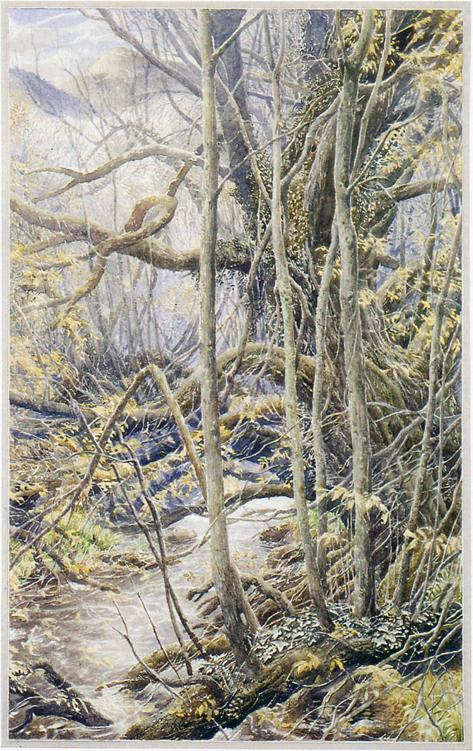
Recepción de Goldberry, “hija del Río”, vestida de verde y rodeada de nenúfares flotantes. Frodo, movido por una alegría que no comprende, improvisa unos versos en su honor y se sorprende a sí mismo. Goldberry explica que Tom es “el Amo” pero no dueño de la tierra: “las cosas pertenecen a sí mismas”. Llega Tom; cena abundante, baños, descanso junto al fuego. Preguntas de los hobbits sobre la naturaleza de Tom quedan sin respuesta clara (“Soy, como me has visto”). Tom relata en verso cómo conoció a Goldberry recogiendo nenúfares.
Esa noche cada hobbit tiene un sueño distinto: Frodo ve una torre y un hombre con un báculo que es rescatado por un águila mientras suenan cascos de caballos galopando desde el Este; Pippin sueña con ruidos de ramas arañando la ventana y recuerda las palabras de Goldberry sobre seguridad; Merry sueña con una inundación; Sam duerme “como un tronco, si los troncos están contentos”.
Al día siguiente, lluvia continua retiene a los hobbits en la casa. Tom cuenta largas historias sobre el bosque, sobre el Viejo Hombre Sauce —de corazón podrido pero fuerza verde, “maestro de vientos”— y sobre los Túmulos: reyes antiguos enterrados con oro, guerras olvidadas, y los Espectros de los Túmulos que rondan esos lugares. Los hobbits recuerdan con inquietud que la casa de Tom está justo bajo la sombra de esas colinas temidas. Tom afirma ser “más viejo” que el río y los árboles, presente “antes de que el Señor Oscuro viniera de Fuera”.
Frodo muestra el Anillo a Tom, quien lo examina, se lo pone en el dedo sin desaparecer —única figura del corpus inmune a su poder— y se lo devuelve. Frodo, algo molesto porque Tom parece tomarlo a la ligera, se lo pone él mismo a escondidas; Tom lo detecta al instante pese a la invisibilidad y le pide que se lo quite, revelando que “el viejo Tom Bombadil no está tan ciego”. Tom aconseja la ruta hacia el norte para evitar los Túmulos y enseña a los hobbits una rima de invocación por si necesitan ayuda.
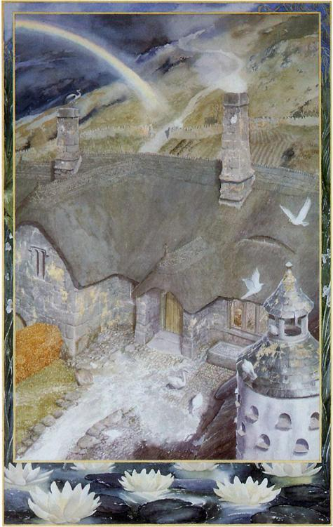
Despedida de Goldberry en lo alto de la colina, con vistas amplias del país tras la lluvia. Tom y Goldberry los acompañan hasta el límite de su territorio con advertencias claras: no tocar piedras antiguas ni fisgonear en las tumbas. A mediodía, tras comer junto a una piedra vertical solitaria, los hobbits se quedan dormidos sin querer; al despertar se hallan envueltos en niebla espesa. Intentan avanzar hacia la salida norte del valle pero Frodo, adelantándose, pasa entre dos grandes piedras erguidas como una puerta y queda separado de los demás.
Frodo, perdido y aterrado, sigue gritos que resultan engañosos y termina en la cima de un túmulo, donde una voz fría dice “Aquí. Te estoy esperando.” Es capturado por un Espectro de los Túmulos. Despierta prisionero dentro del túmulo, tendido junto a Sam, Merry y Pippin, vestidos de blanco, coronados y cargados de oro, con una espada desnuda cruzada sobre sus tres cuellos. Un cántico gélido de encantamiento se eleva mientras un brazo largo se arrastra desde una esquina hacia la espada sobre Sam. Frodo, tras resistir la tentación de ponerse el anillo y escapar solo, golpea el brazo con una espada que se rompe en el acto; el grito y la oscuridad siguen. Recuerda entonces la rima de Tom y la canta con voz que crece en fuerza; Tom responde desde fuera, irrumpe rompiendo la pared del túmulo con un cántico de destierro, y ahuyenta al Espectro.
Tom saca a los hobbits, reparte el tesoro del túmulo “libre para todo el que lo encuentre” (rompiendo así el hechizo del lugar), se queda una prenda de broche para Goldberry, y entrega a cada hobbit un puñal forjado por los Hombres de Oesternesse contra el Rey Brujo de Angmar, advirtiendo que son “hojas cortas pero suficientes como espadas para hobbits”. Consigue las ponis extraviadas más una montura propia, Fatty Lumpkin, y acompaña a los hobbits hasta el límite de su territorio. Se despide sin cruzar la frontera, recomendando la posada de Bree, El Poney Pisador, regentada por Barliman Butterbur. Los hobbits, tras alcanzar por fin el Camino, llegan de noche a Bree.
Descripción de Bree como comunidad mixta de Hombres y Hobbits, isla habitada en tierras vacías, con memoria de los Rangers (Montaraces) que rondan las tierras salvajes sin que nadie conozca bien su origen. El guardián de la puerta oeste, Harry, interroga con recelo a los hobbits antes de dejarlos pasar; una figura oscura los sigue en secreto por encima de la puerta cuando el guardián se descuida. Llegan al Poney Pisador, donde Barliman Butterbur, ocupado y locuaz, les asigna habitaciones para hobbits y les sirve una cena abundante. Merry se queda en el salón privado mientras Frodo, Pippin y Sam bajan a la sala común.
Frodo se presenta como “Mr. Underhill, interesado en historia y geografía” para justificar sus preguntas, pero Pippin, animado por el ambiente, comienza a narrar cómicamente la fiesta de despedida de Bilbo, acercándose peligrosamente al episodio de la Desaparición. Un forastero encapuchado, sentado en las sombras, observa con atención especial: es Strider (Trancos), un Montaraz de reputación ambigua según Butterbur. Para desviar la atención de Pippin, Frodo se sube a una mesa e improvisa un discurso, y luego canta la canción cómica de “El hombre en la Luna bebió demasiado”. Al saltar en el clímax de la canción, tropieza y cae de la mesa —y el Anillo, que llevaba manoseando en el bolsillo, se le desliza al dedo por accidente, haciéndolo desaparecer visiblemente ante toda la sala.
El pánico y la sospecha se apoderan de los presentes. Dos hombres —Bill Ferny y un forastero sureño de mirada bizca— salen discretamente juntos tras el incidente, tras haber cuchicheado toda la noche. Frodo se quita el anillo bajo las mesas y reaparece junto a Strider, que le reprende: “¿Por qué hiciste eso? ¡Peor que cualquier cosa que hubieran podido decir tus amigos!” Strider pide una conversación privada, prometiendo revelar “algo para tu provecho”.
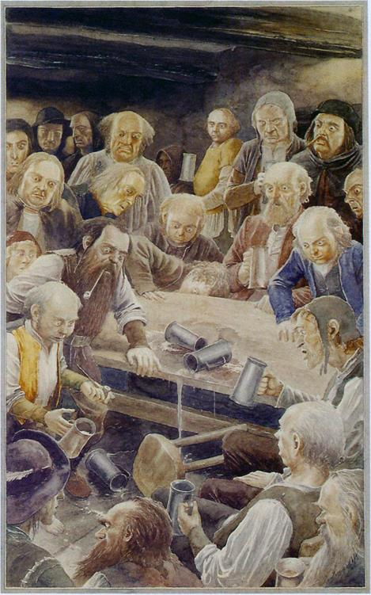
Conversación decisiva en el salón privado. Strider revela que ha oído a los hobbits mencionar el nombre prohibido “Baggins” cerca del Bosque y que los siguió hasta Bree por interés propio, no malicioso. Confirma que Jinetes Negros han pasado por Bree en ambas direcciones. Sam se opone abiertamente a confiar en él (“¡Yo digo que no!”); Frodo duda pero percibe que Strider “no es realmente como elige parecer”. Strider advierte que sin su ayuda no llegarán vivos a Rivendel.
Llega Butterbur con la noticia largamente postergada: hace tres meses, Gandalf le encargó enviar una carta a Frodo advirtiéndole de peligro, carta que Butterbur olvidó despachar por sucesivos descuidos. La carta, leída en voz alta, confirma la identidad de Strider como Aragorn hijo de Arathorn, amigo de Gandalf, e incluye el poema profético (“All that is gold does not glitter”) y la posdata urgente de no usar el anillo bajo ningún concepto. Butterbur también revela que dos Hombres Negros vinieron a preguntar por “Baggins” el lunes, y que Strider mismo había intentado advertir a los hobbits sin éxito antes.
Sam sigue desconfiando hasta que Strider, desafiado directamente, se pone de pie, crece en presencia amenazante, desenvaina una espada rota bajo la empuñadura y declara: “Soy Aragorn hijo de Arathorn; y si con mi vida o mi muerte puedo salvaros, lo haré.” Los hobbits aceptan su guía. Se planifica la ruta hacia Cima de los Vientos (Weathertop), donde esperan encontrarse con Gandalf. Merry irrumpe entonces, agitado: ha visto una sombra negra en el pueblo y ha sido hallado inconsciente tras escuchar voces siseantes cerca del seto —Strider identifica el episodio como “el Aliento Negro” y advierte que Bree está ya bajo la vigilancia y el terror de los Jinetes.
Escena paralela en Cricava: Fatty Bolger, presa del miedo toda la noche, ve sombras negras entrar en el jardín; tres Jinetes fuerzan la puerta (“¡Abrid, en nombre de Mordor!”) justo cuando suena el cuerno de alarma de Los Gamos, no usado en cien años. Fatty huye a través de los campos y da la voz de alarma en la casa más cercana. Los Jinetes, al descubrir la casa vacía y el Anillo ausente, se retiran hacia el Portón Norte sin resistencia efectiva, atropellando a los guardias.
De vuelta en Bree: esa misma noche, alguien fuerza las habitaciones vacías de los hobbits en la posada —ventanas forzadas, almohadas destrozadas— mientras el grupo real duerme a salvo en el salón, siguiendo el consejo de Strider. Al amanecer descubren que todas las ponis y caballos de la posada han desaparecido, robados o dispersos por los Jinetes. Butterbur, apesadumbrado, compra a los hobbits una poni vieja y famélica al propio Bill Ferny por tres veces su valor, y compensa a Merry por sus animales perdidos (que, se revela en un paréntesis narrativo, terminan a salvo bajo el cuidado de Tom Bombadil y luego regresan a la posada, aunque nunca llegan a Rivendel).
Partida tardía entre la curiosidad y hostilidad del pueblo. Bill Ferny se burla de ellos por encima del seto y Sam le arroja una manzana a la cara. Strider guía al grupo campo a través, evitando la ruta hacia Archet para despistar a posibles perseguidores. Tres días tranquilos hasta las Ciénagas de Mosquiterio (Midgewater Marshes), donde sufren la tortura constante de mosquitos y el canto incesante de los “Neekerbreekers”. Frodo ve un destello lejano en el cielo del este que Strider no sabe explicar.
Avistan Cima de los Vientos y deciden un rodeo por el este para llegar desde el norte, más discretamente. En la cima encuentran un antiguo túmulo circular de piedra ennegrecida por fuego reciente, y una piedra plana con marcas que Strider interpreta tentativamente como una runa “G3” —posible señal de que Gandalf estuvo allí tres días antes, en peligro.
Desde el borde de la cima, Frodo avista Jinetes Negros congregándose en el Camino más abajo. El grupo desciende con cautela hacia el campamento que Sam y Pippin habían preparado, donde encuentran huellas recientes de botas pesadas, indicio de que los Jinetes ya han hallado el lugar.
Esa noche, mientras Strider narra la leyenda de Beren y Lúthien (recitada en verso completo, con la explicación de su descendencia hasta Elrond de Rivendel) para mantener el ánimo del grupo, aparecen cinco figuras negras en el borde de la hondonada. Frodo, dominado por un deseo irresistible que reconoce después como “el deseo mandado por sus enemigos”, se pone el Anillo pese a las advertencias de Gandalf y Tom. Al hacerlo, ve a los Jinetes con claridad sobrenatural: cinco figuras con rostros pálidos, coronas de plata, espadas de acero; el líder, más alto, lo ataca con una daga que brilla con luz pálida. Frodo grita “¡Oh Elbereth! ¡Gilthoniel!”, hiere los pies del atacante, y recibe una herida de frío mortal en el hombro izquierdo antes de desmayarse, aún con la fuerza de arrancarse el Anillo del dedo en el último instante.
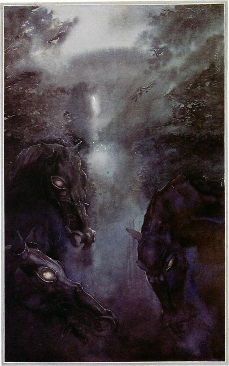
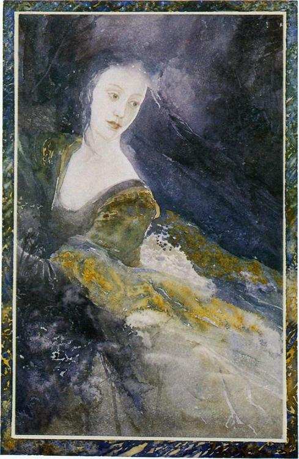
Frodo despierta junto al fuego, atendido por sus compañeros. Strider ha investigado los alrededores sin hallar rastro de los Jinetes; recoge una capa negra abandonada, cortada por la espada de Frodo, y el mango de la daga que hirió a Frodo, cuya hoja se disuelve como humo al ser levantada a la luz. Strider identifica el arma como capaz de causar una herida “más allá de mi habilidad” para curar del todo, y aplica athelas (hierba de los Reyes) hervida, que alivia el dolor sin sanar completamente.
Deciden abandonar Cima de los Vientos de inmediato. Frodo, incapaz de caminar, monta la poni. Durante los siguientes días cruzan el Último Puente sobre el Hoarwell, donde Strider halla una joya berilo (piedra élfica) dejada como señal de que el paso es seguro, y se internan en tierras de colinas abandonadas donde antaño hubo un reino destruido por la sombra de Angmar. El grupo se pierde parcialmente hacia el norte, hacia territorio de trolls, y debe reorientarse hacia el sur para hallar el Vado del Bruinen. Encuentran una cueva de troll abandonada y, más adelante, los tres trolls de piedra del episodio de El Hobbit —reconocidos por Frodo y Pippin, quienes descansan bajo su sombra mientras Sam improvisa una canción sobre Tom y el Troll.
La herida de Frodo empeora progresivamente: frío mortal que se extiende, brazo inutilizado, visión nublada. En el camino aparece un jinete al galope acompañado de campanillas: es Glorfindel, elfo de la casa de Elrond, enviado desde Rivendel a buscarlos tras noticias alarmantes de los Nueve merodeando fuera. Confirma que Gandalf no ha llegado a Rivendel. Examina la herida y la daga rota, advierte que las heridas de esa arma están “más allá de mi habilidad” también, y ofrece su caballo blanco, Asfaloth, a Frodo, quien inicialmente se niega a separarse de sus amigos pero es persuadido.
Marcha forzada hacia el Vado con Glorfindel urgiendo constantemente. En el tramo final, los Nueve Jinetes emergen —cinco por detrás, cuatro más en emboscada lateral— y Frodo, montado en Asfaloth, escapa gracias a la velocidad sobrenatural del caballo élfico mientras sus perseguidores convergen. Cruza el Vado del Bruinen justo antes de que los Nueve alcancen la orilla; desde la otra ribera, con las últimas fuerzas, desafía a los Jinetes (“¡Por Elbereth y Lúthien la Hermosa, no tendréis ni el Anillo ni a mí!”) y su espada se rompe bajo el gesto amenazante del líder. En ese instante, una crecida repentina del río —invocada, se sugiere, por Elrond— arrastra a los Jinetes que habían entrado en el agua; los caballos negros, enloquecidos, se precipitan a la corriente. Frodo, entre visiones de jinetes blancos entre las aguas y figuras diminutas agitando llamas, pierde el conocimiento mientras el río se lo lleva todo consigo, incluidos sus enemigos.
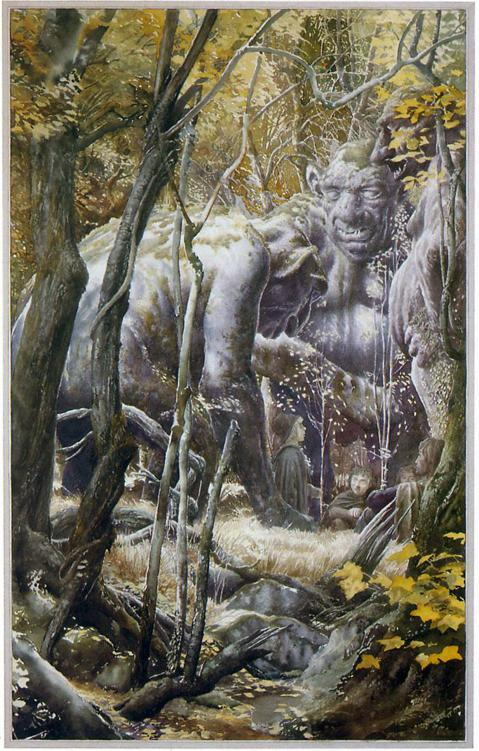
Este corpus no acelera hacia el peligro: lo deja entrar por la puerta trasera mientras todos discuten cucharas heredadas. El evento más violento no es una batalla, es una cena de cumpleaños que termina en desaparición pública; el más aterrador no tiene monstruo, tiene un olfato que husmea en la oscuridad buscando un nombre. Y el único ser que detiene por completo al mal en todo el fragmento no es un guerrero: es alguien que simplemente no le importa el Anillo.
Cap. 1 — La fiesta y la desaparición de Bilbo
Bilbo Baggins celebra su cumpleaños ciento once ante toda la Comarca reunida, pronuncia un discurso cada vez más extraño y, en mitad de una frase, se pone el Anillo y desaparece ante cientos de testigos. El giro no está en la desaparición —esperada por el lector que conoce a Bilbo— sino en su consecuencia inmediata: dentro de su hoyo, a solas con Gandalf, Bilbo se resiste furiosamente a dejar el Anillo, y por un instante el hobbit bondadoso mira a su amigo con algo parecido al odio. Intensidad — 75%
Cap. 1 — Bilbo deja el Anillo y parte
Tras el forcejeo verbal con Gandalf, Bilbo cede, deja el Anillo sobre la repisa y sale caminando de la Comarca hacia una vejez desconocida, dejando a Frodo como heredero de la casa y, sin saberlo aún, del peligro. Intensidad — 60%
Cap. 2 — Gandalf confirma la naturaleza del Anillo
Años después, Gandalf regresa, arroja el Anillo al fuego y hace aparecer en el metal caliente una inscripción en la Lengua Negra. Es la confirmación fría de que el objeto doméstico que Frodo ha llevado en el bolsillo durante años es el Anillo Único de Sauron. Intensidad — 80%
Cap. 3 — El primer Jinete Negro en el camino
Frodo, Sam y Pippin se ocultan de un jinete encapuchado que se detiene junto al árbol donde Frodo se esconde y parece olfatear el aire buscándolo. El giro es interno: Frodo, dominado por un miedo que no comprende, está a punto de ponerse el Anillo por puro instinto de huida antes de que el jinete se marche. Intensidad — 70%
Cap. 3 — Encuentro con los Elfos de Gildor
Perseguidos de nuevo por un Jinete, los hobbits son rescatados por una compañía de Elfos errantes liderada por Gildor, que los acoge, les da de comer y les advierte que los está siguiendo el Enemigo. Intensidad — 55%
Cap. 4 — Captura por Farmer Maggot
Frodo y sus compañeros son sorprendidos cruzando las tierras de Farmer Maggot, un granjero al que temían desde la infancia por un episodio de juventud. El giro: en vez de la hostilidad esperada, Maggot los recibe con cena y ayuda, y revela que un Jinete Negro ya pasó por su granja preguntando por “Bolsón”. Intensidad — 55%
Cap. 5 — La conspiración revelada
En Cricava, Merry y Pippin le confiesan a Frodo que llevan meses vigilándolo y que ya conocen el secreto del Anillo; han organizado en secreto todo el viaje para acompañarlo pese a que él pensaba partir solo. El giro invierte el poder: Frodo creía que ocultaba un secreto y descubre que era observado con cariño desde el principio. Intensidad — 65%
Cap. 6 — El Viejo Hombre-Sauce atrapa a Merry y Pippin
En el Bosque Viejo, un sauce gigante engulle a Merry dentro de su tronco y atrapa a Pippin en una grieta, mientras canta a los otros para adormecerlos. Son salvados en el último momento por Tom Bombadil, que llega cantando y ordena al árbol soltarlos. Intensidad — 70%
Cap. 7 — La casa de Tom Bombadil y Baya de Oro
Los hobbits llegan agotados a la casa de Bombadil, donde son recibidos por Baya de Oro, la Hija del Río, y pasan la noche a salvo mientras Tom canta historias de la antigüedad de la tierra. No hay giro: es el único remanso completo del corpus, una pausa que el lector reconoce como tal precisamente por su rareza. Intensidad — 55%
Cap. 8 — Captura por el Espectro de los Túmulos
Perdidos en la niebla de las Quebradas de los Túmulos, los hobbits son atrapados por un Espectro que los deja inconscientes, vestidos de blanco y coronados de oro dentro de una tumba, con una espada desnuda cruzada sobre sus cuellos. Frodo despierta a tiempo, ataca el brazo que se arrastra hacia Sam y logra invocar a Tom Bombadil cantando la canción que este les enseñó; Bombadil destruye al Espectro y los revive. Intensidad — 85%
Cap. 9 — Llegada a Bree y encuentro con Trancos
En la posada de El Poney Pisador, Frodo, nervioso ante las preguntas de los parroquianos, se pone accidentalmente el Anillo y desaparece en público por segunda vez en el corpus —esta vez sin querer, y con público hostil observando. Un hombre de aspecto sospechoso llamado Trancos, que había estado observándolos toda la noche, se revela después como un aliado enviado indirectamente por Gandalf. Intensidad — 65%
Cap. 11 — El asalto nocturno a la posada
Mientras los hobbits duermen en un cuarto señuelo por consejo de Trancos, los Jinetes Negros irrumpen de noche en sus habitaciones reales y destrozan las camas vacías, creyendo atacar a los durmientes. El giro se revela a la mañana siguiente: los hobbits sobrevivieron solo porque Trancos previó el ataque y los hizo dormir en otro cuarto. Intensidad — 75%
Cap. 11 — El ataque simultáneo a Cricava
La misma noche, otro grupo de Jinetes asalta la casa señuelo en Cricava, donde Fredegar Bolger hacía de doble de Frodo. Fredegar escapa por la puerta trasera y logra hacer sonar el Cuerno de los Gamos, la alarma que no se usaba hacía cien años, despertando toda la región justo cuando los Jinetes ya se retiran sabiendo que el Anillo no estaba allí. Intensidad — 60%
Cap. 11 — La herida de Cima de los Vientos
Acampados en Cima de los Vientos, los hobbits son alcanzados por los Jinetes Negros mientras Trancos lucha con fuego. El Rey Brujo hiere a Frodo con un cuchillo de Morgul cuya punta queda alojada en su hombro, avanzando lentamente hacia el corazón mientras el veneno empieza a apagar su percepción del mundo. Intensidad — 90%
Cap. 12 — La huida hacia el Vado y la crecida del río
Con Frodo cada vez más débil, Glorfindel lo monta en su caballo élfico Asfaloth para la carrera final hasta el Vado de Bruinen. Los Nueve Jinetes casi lo alcanzan en la orilla, exigiéndole el Anillo, hasta que una crecida repentina del río —invocada por Elrond— se alza en forma de caballos de espuma blanca y arrastra a los perseguidores. Frodo pierde el conocimiento en la orilla, salvado pero con la herida aún sin resolver. Intensidad — 95%
Un territorio donde el peligro nunca llega por la puerta principal: entra disfrazado de olfato en la oscuridad, de árbol que canta, de tumba que viste de fiesta a sus víctimas, de almohadas apuñaladas en la cama de nadie — y solo se detiene, cada vez, ante algo que no obedece la lógica del Anillo: un ser que no le teme, un río que no negocia.
Este corpus no guarda sus mejores líneas para los momentos grandes: las esconde en las despedidas, en las cartas de un testamento, en un granjero que ofrece cena a alguien que le temía desde hace treinta años. La joya más afilada de todo el fragmento no la dice un mago ni un rey — la dice un jardinero, en una frase tan simple que cualquiera la repetiría sin saber de dónde salió.*
El prólogo no narra: cataloga. Establece el mundo hobbit como un territorio de reglas propias —tamaño, costumbres, genealogía— antes de que el argumento lo necesite, funcionando como una promesa de solidez para todo lo que colapsará después.
El movimiento único: la construcción de un pueblo entero antes de tocar la trama
Se abre con la afirmación de que el libro trata “en gran parte” sobre los hobbits, y desde ahí despliega generación tras generación, costumbre tras costumbre, sin urgencia narrativa alguna. No escala ni se desvía: se acumula, capa sobre capa de dato etnográfico, hasta cerrar en la fundación de la Comarca y sus instituciones. No hay resolución porque no había tensión que resolver — es erudición pura, cálida y minuciosa. Veredicto del capítulo — Es un capítulo que ancla: no construye trama, construye el suelo sobre el que la trama va a temblar.
Fragmento de transición hacia el corpus narrativo; no aplica fragmento de 300-500 palabras.
Sin joyas. El prólogo cumple una función de andamiaje puro —dato, genealogía, costumbre— sin que ningún pasaje cristalice en tensión, ironía o imagen concreta que sobreviva fuera de su contexto informativo.
[Estuche] Aquí se planta, sin que nadie lo note todavía, la semilla de todo lo que sigue: un objeto dorado que dos hobbits, tío y sobrino, no logran del todo soltar.
El mapa de tensiones
El discurso que se convierte en desaparición Se abre con la expectativa social de un simple discurso de cumpleaños en una fiesta multitudinaria. La tensión escala oración a oración, mientras Bilbo dice cosas cada vez más extrañas hasta el instante exacto en que se pone el Anillo y desaparece ante cientos de testigos — el argumento finge ir hacia una anécdota social y va hacia lo sobrenatural. Cierra en escándalo público sin explicación, dejando a toda la Comarca hablando durante meses: caos social puro.
El forcejeo por el Anillo Dentro del hoyo, a solas, se abre la tensión entre Gandalf y Bilbo sobre el destino del Anillo. Se desvía de lo esperado —Bilbo, siempre bondadoso, se resiste con una dureza casi irreconocible— antes de ceder. Cierra en la entrega del objeto y la partida de Bilbo, dejando entrever por primera vez que el Anillo tiene voluntad propia: posesión que se resiste a soltar.
El reparto de los regalos y la codicia doméstica Se abre con la distribución de las pertenencias de Bilbo entre parientes. Viaja a través de pequeñas humillaciones cómicas —Lobelia y las cucharas, Otho y el testamento— sin escalar nunca a verdadero peligro. Cierra en resolución cómica, con Frodo defendiendo su herencia: codicia doméstica, casi inofensiva.
Veredicto del capítulo — Un capítulo que abre sin saberlo la trama entera disfrazándola de comedia social.
El fragmento
Aquí ocurre algo que el corpus entero necesitará después: el lector aprende, sin que nadie se lo diga directamente, que este objeto dorado no es solo una posesión, es un apego. Bilbo lo ha llevado sesenta años sin envejecer como debería; cuando debe dejarlo, algo en él se resiste con una violencia que ni Gandalf ni el lector esperaban de un hobbit tan gentil. Esa grieta —la posesión que se resiste a ser soltada— es la primera prueba de que el Anillo actúa sobre quien lo lleva, no al revés. Todo lo que sigue en el corpus, la persecución, el miedo, la herida final en el Vado, depende de que el lector haya visto esto primero: que el peligro no se anuncia con un monstruo, se anuncia con una mano que no quiere abrirse. La fiesta, las cucharas robadas, los chismes de Otho y Lobelia — todo eso es ruido cómico deliberado, un colchón de normalidad tejido para que el lector, como Frodo, baje la guardia antes de heredar algo que no comprende todavía.
Las joyas
El forcejeo por el Anillo
“Es mío, digo yo — mío propio.”
Por un instante, Bilbo Baggins —el hobbit más generoso de la Comarca, quien acaba de repartir su fortuna entera en regalos con etiquetas escritas a mano— se transforma frente a Gandalf en algo pequeño y feroz, con la mano cerrada sobre un anillo de oro como si fuera lo único verdadero que ha poseído en su vida. Gandalf no lo amenaza: solo lo mira. Y esa mirada, sin una palabra de más, basta para que el viejo hobbit suelte el objeto y, con él, algo de sí mismo que nunca volverá a recuperar del todo.
El mapa de tensiones
Diecisiete años de calma aparente Se abre con el rumor apagándose lentamente en la Comarca tras la desaparición de Bilbo. El tiempo transcurre casi sin fricción, Frodo instalado en su vida, hasta que Gandalf regresa. Cierra abruptamente cuando el mago pide ver el Anillo: calma que se sabe prestada.
La prueba del fuego Se abre con Gandalf arrojando el Anillo a las brasas. La tensión no se desvía ni se demora: escala en línea recta hacia la revelación de la inscripción en la Lengua Negra. Cierra en la confirmación fría: esto es el Anillo Único. Revelación sin alivio.
El relato de Gollum y la piedad de Bilbo Se abre cuando Gandalf cuenta cómo Bilbo perdonó la vida de Gollum en vez de matarlo. Viaja hacia una defensa filosófica de la piedad como fuerza que puede decidir el destino del mundo. Cierra en una máxima que el corpus no resuelve todavía, sino que deja sembrada: tensión abierta, moral suspendida.
La decisión de partir Se abre con Frodo resistiéndose a dejar la Comarca. Escala a través del miedo, la culpa por involucrar a sus amigos, y finalmente cristaliza en la decisión de irse solo, en secreto. Cierra en partida planeada: resolución con sabor a sacrificio.
Veredicto del capítulo — Un capítulo que destruye la seguridad construida por el prólogo entero, sustituyéndola por una amenaza nombrada y verificada.
El fragmento
Aquí el corpus deja de sugerir y empieza a confirmar. Todo lo que en el capítulo anterior era extrañeza doméstica —un objeto que no envejece a su dueño, una resistencia inexplicable a soltarlo— se convierte aquí en hecho verificado: el anillo de Bilbo es el Anillo Único de Sauron, forjado para dominar a todos los demás. Gandalf no especula, demuestra: lo arroja al fuego y la inscripción aparece. A partir de este capítulo, cada gesto amable de los primeros compases —la fiesta, las cucharas, los regalos con etiquetas— se relee bajo una luz distinta, como una inocencia que ya estaba condenada sin saberlo. Este es también el capítulo que introduce la piedad como contrapeso moral: la decisión de Bilbo de no matar a Gollum, defendida por Gandalf como un acto cuyo valor el propio Frodo no puede todavía medir, planta una semilla que el corpus se niega a resolver aquí. El lector sale de este capítulo sabiendo lo que Frodo sabe —el peligro tiene nombre, tiene origen, tiene intención— y por eso todo lo que sigue, la partida, la huida, el miedo en cada camino, hereda su urgencia de estas pocas páginas.
Las joyas
La prueba del fuego
El fuego que no miente
Gandalf no explica, demuestra: toma el anillo dorado de Frodo, lo arroja a las brasas del hogar y espera. Cuando lo retira con las tenazas, unas letras ardientes en una lengua que ninguno de los dos quiere pronunciar en voz alta han aparecido sobre el oro frío. No hace falta traducir la inscripción para que Frodo entienda: la comodidad doméstica que llevaba diecisiete años en su bolsillo acaba de convertirse, sin transición, en la posesión más peligrosa de toda la Tierra Media.
El relato de Gollum y la piedad de Bilbo
Una mano que no mató
Cuando Frodo confiesa que lamenta que Bilbo no haya matado a Gollum mientras tuvo ocasión, Gandalf lo corrige con una frialdad que no admite discusión: la piedad de Bilbo puede terminar siendo lo único que salve al mundo entero, aunque nadie —ni el propio Bilbo— sepa todavía por qué. Es la primera vez que el corpus sugiere que la compasión, y no la fuerza, podría ser el arma verdadera contra Sauron.
El mapa de tensiones
La partida postergada Se abre con Gandalf urgiendo a Frodo a irse “pronto, no de inmediato”. La tensión se estira durante semanas de preparativos domésticos, sin urgencia visible, hasta que Gandalf desaparece sin aviso. Cierra en partida forzada y sin guía: la ausencia inesperada convierte la urgencia latente en urgencia real.
El primer Jinete Negro Se abre con un sonido de cascos en el camino. Escala hacia el terror silencioso cuando el jinete se detiene junto al árbol donde Frodo se esconde y parece olfatear el aire. Cierra en huida del jinete, sin confrontación ni explicación: miedo sin resolución, apenas contenido.
El encuentro con los Elfos de Gildor Se abre cuando un segundo Jinete aparece y los hobbits, aterrados, tropiezan con una compañía de Elfos cantando en el bosque. La tensión se invierte: de la persecución a la hospitalidad. Cierra en advertencia explícita —el Enemigo los busca— envuelta en generosidad: alivio con filo.
Veredicto del capítulo — Un capítulo que acumula amenaza sin resolverla, sosteniendo al lector en un estado de alerta que no se libera hasta mucho después.
El fragmento
Aquí el peligro deja de ser un hecho contado por otros y se convierte en experiencia directa. Hasta ahora Frodo sabía, por Gandalf, que el Anillo era peligroso; en este capítulo lo siente en el cuerpo, agazapado tras un árbol, con un instinto de pánico que no comprende del todo y que casi lo empuja a hacer exactamente lo que no debe hacer: ponerse el Anillo para escapar. Ese gesto casi cometido —la mano moviéndose sola hacia la cadena— es la primera vez que el objeto ejerce una fuerza sobre la voluntad de Frodo sin que él la busque, y anticipa cada momento posterior en que el Anillo intentará lo mismo con más éxito. El capítulo también introduce, a través de los Elfos de Gildor, la primera fuente de ayuda genuinamente desinteresada del corpus: no exigen nada, solo advierten y alimentan. Esa hospitalidad sin condiciones se volverá un patrón —Tom Bombadil, Farmer Maggot, Trancos— que el corpus repite como contraargumento silencioso a la lógica de posesión y control que encarna el Anillo.
Las joyas
El primer Jinete Negro
Un olfato en la oscuridad
El jinete no mira: huele. Se detiene exactamente donde Frodo se esconde, con la cabeza inclinada bajo la capucha, como quien sigue un rastro que el viento no debería llevar tan lejos. Frodo, paralizado entre la hierba, siente que basta con deslizar el anillo a su dedo para desaparecer y estar a salvo — y por primera vez en el corpus, el lector comprende que la seguridad que ofrece el Anillo es también su trampa: cada vez que Frodo lo necesita de verdad, es porque el Anillo ya lo está llamando.
El mapa de tensiones
Sam declara su lealtad Se abre con Frodo preguntándole a Sam si de verdad quiere continuar, ahora que el peligro es explícito. No hay desvío: la respuesta llega directa, sin adornos. Cierra en compromiso absoluto e irreversible: lealtad sin condiciones.
El atajo que se convierte en trampa lenta Se abre con la decisión de cruzar el campo en vez de seguir el camino, para evitar ser vistos. La tensión no escala hacia el peligro sino hacia la incomodidad física —zanjas, matorrales, barro— en un despliegue casi cómico de la ironía del propio nombre del capítulo. Cierra sin gran resolución dramática, solo cansancio: anticlímax deliberado.
La captura por Farmer Maggot Se abre cuando los hobbits son sorprendidos cruzando tierras prohibidas por un granjero al que temían desde la infancia. Se desvía por completo de lo esperado: en vez de hostilidad, hay cena, información y ayuda. Cierra con Maggot llevándolos personalmente al embarcadero: alivio inesperado, casi paternal.
Veredicto del capítulo — Un capítulo que gira: invierte la expectativa de peligro doméstico (el granjero temido) en refugio, mientras deja el peligro real —los Jinetes— acechando en los márgenes.
El fragmento
Este capítulo cumple una función de contrapunto que el corpus necesita antes de oscurecerse del todo: recuerda que no toda autoridad temida es una amenaza real. Farmer Maggot ha sido, durante años, una figura de terror infantil para Frodo —perros, gritos, prohibición de pisar sus tierras— y resulta ser, cuando el peligro de verdad llega, uno de los pocos adultos capaces de leer la situación con claridad y ofrecer ayuda sin pedir explicaciones. Esa inversión importa para el todo porque establece un patrón de confianza mal calibrada: los hobbits temen lo equivocado durante toda la primera mitad del corpus, mientras el peligro genuino —silencioso, olfativo, sin rostro— pasa cerca de ellos sin que lo reconozcan del todo. El capítulo también consolida el compromiso de Sam como algo que ya no se puede deshacer, una lealtad declarada en voz baja que sostendrá emocionalmente cada capítulo posterior de sufrimiento compartido.
Las joyas
Sam declara su lealtad
“Si usted no vuelve, señor, entonces yo tampoco”
Frodo le advierte a Sam, sin adornos, que lo más probable es que ninguno de los dos regrese con vida. Sam no vacila, no pregunta detalles, no pide tiempo para pensarlo: responde con una certeza tan simple que suena casi tonta, y sin embargo es la frase que sostendrá cada capítulo de sufrimiento que viene después. Es el tipo de lealtad que no necesita comprender el peligro para aceptarlo por completo.
La captura por Farmer Maggot
Treinta años de miedo, deshechos con una cena
Frodo confiesa, entre risas nerviosas, que le ha tenido miedo a Farmer Maggot y a sus perros desde que era niño — y ahora, sentado a su mesa, comiendo el mismo guiso de champiñones que temía robar de joven, descubre que el hombre al que evitó media vida es quien lo lleva personalmente, en su propio carro, hasta el lugar seguro. La ironía no necesita subrayarse: el miedo infantil y la amenaza real casi nunca coinciden.
El mapa de tensiones
La sombra en el embarcadero Se abre cuando Sam, mirando atrás hacia la otra orilla, distingue una forma oscura moviéndose bajo las lámparas. La tensión no escala verbalmente —nadie grita, nadie corre— pero el lector siente el peso de la persecución confirmándose en silencio. Cierra en fuga discreta sin confrontación: amenaza confirmada, no resuelta.
La casa que se siente como un hogar prestado Se abre con Frodo entrando a Cricava y descubriendo que sus amigos han recreado, con cuidado, la sensación de Bolsón Cerrado. La tensión es interna: la culpa de disfrutar algo que sabe que debe abandonar esa misma noche. Cierra en la decisión de confesar la verdad a sus amigos antes de dormir: ternura con fecha de caducidad.
La conspiración revelada Se abre cuando Frodo intenta anunciar que debe partir solo, y descubre que sus amigos ya lo sabían todo. La tensión se invierte por completo: quien creía guardar un secreto descubre que ha sido observado con cariño durante meses. Cierra en júbilo colectivo y canción: la soledad planeada se convierte en compañía inevitable.
Veredicto del capítulo — Un capítulo que resuelve, de un solo golpe, la tensión moral que el capítulo 2 había dejado abierta: si Frodo tiene derecho a arrastrar a sus amigos al peligro. La respuesta, aquí, ya no depende de él.
El fragmento
Este capítulo cambia la arquitectura emocional de todo el viaje que sigue. Hasta este punto, Frodo ha cargado con el peso de una decisión moral no resuelta: ¿tiene derecho a poner en peligro a quienes ama solo por compartir su carga? El capítulo responde arrebatándole esa decisión de las manos. Merry y Pippin, y Sam antes que ellos, no le piden permiso para acompañarlo — le informan que ya lo han decidido, que llevan meses observándolo, que la aparente ingenuidad de sus amigos escondía una vigilancia atenta y cariñosa. Ese giro —de la soledad autoimpuesta a la compañía inevitable— es estructural para el corpus completo: convierte lo que podría haber sido un viaje solitario de sacrificio en una historia coral de lealtad compartida, y establece el tono que sostendrá cada peligro posterior, desde el Bosque Viejo hasta el Vado de Bruinen. También aquí, en la sombra que Sam distingue cruzando el embarcadero, el corpus confirma sin necesidad de palabras que la persecución nunca se detuvo: el peligro no pausa mientras los hobbits descansan.
Las joyas
La conspiración revelada
“Solo depende de lo que usted quiera”
Frodo se dispone a confesar, con el corazón encogido, que debe abandonar a sus amigos esa misma noche para protegerlos — y descubre, en cambio, que ya no hay secreto que confesar: Merry ha empacado los ponis, Pippin conoce cada detalle del Anillo, y todos han decidido, sin consultarlo, que lo van a acompañar hasta el final. La revelación no llega como un descubrimiento doloroso sino como un abrazo colectivo disfrazado de logística: la lealtad, aquí, no pide permiso.
El mapa de tensiones
El bosque que observa Se abre cuando los hobbits cruzan el Seto y entran a un territorio donde los árboles parecen tener conciencia propia. La tensión escala lentamente, sin incidente concreto, solo la sensación creciente de ser vigilados con hostilidad. Cierra en pérdida del sentido de dirección: opresión ambiental sin evento, tensión abierta.
El Viejo Hombre-Sauce Se abre cuando Merry desaparece dentro de una grieta del tronco de un sauce gigante y Pippin queda atrapado en otra. La tensión escala vertiginosamente hacia el pánico físico de Frodo, incapaz de liberar a sus amigos. Cierra en rescate por una fuerza externa completamente inesperada: peligro resuelto por intervención ajena, no por esfuerzo propio.
La llegada de Tom Bombadil Se abre con una voz cantando que se acerca entre los árboles justo cuando Frodo está a punto de rendirse. No hay desvío: Bombadil llega, ordena al árbol soltar a los hobbits, y es obedecido sin resistencia. Cierra en autoridad absoluta sin explicación: poder que no necesita justificarse.
Veredicto del capítulo — Un capítulo que construye peligro real —el primero verdaderamente físico del corpus— solo para introducir, en su resolución, la primera figura que existe completamente fuera de la lógica de miedo y control que domina todo lo demás.
El fragmento
Aquí el peligro cambia de naturaleza: deja de ser una amenaza que se acerca desde afuera —un jinete en el camino, un rumor de invasión— y se convierte en el territorio mismo, hostil por su propia naturaleza. El Bosque Viejo no persigue a los hobbits, los atrapa por indiferencia hacia su existencia, casi como quien pisa un insecto sin notarlo. Ese tipo de amenaza —impersonal, ambiental, sin intención maligna consciente— es nueva en el corpus y anticipa la sensación de las Quebradas de los Túmulos que vendrá después. Pero lo que hace estructuralmente decisivo a este capítulo es la aparición de Tom Bombadil: un ser cuya autoridad no depende de fuerza, astucia ni magia reconocible, sino de una indiferencia radical hacia todo lo que los demás temen o codician. Bombadil ordena y es obedecido, sin que el corpus explique por qué. Esa ausencia de explicación no es un descuido: es la primera grieta genuina en la lógica de dominio total que encarna el Anillo, y el lector la recordará más tarde, cuando descubra —o no— que Bombadil es, sencillamente, inmune a su poder.
Las joyas
El Viejo Hombre-Sauce
Una grieta que se traga a un amigo
Merry desaparece dentro del tronco del árbol como si la madera se hubiera abierto solo para él, y cuando Frodo llega corriendo, ya no hay nada que hacer salvo golpear la corteza con las manos desnudas mientras una voz apenas audible, ahogada dentro del propio árbol, pide auxilio. No hay monstruo con colmillos, no hay batalla: solo una grieta que se ha cerrado sobre un amigo, y la certeza repentina de que el bosque entero podría hacer lo mismo con cualquiera de ellos sin el menor esfuerzo.
La llegada de Tom Bombadil
Una canción que un árbol no puede desobedecer
Cuando toda esperanza parecía perdida, no llega un guerrero ni un hechizo: llega un hombre cantando tonterías sobre bayas y raíces, y el sauce gigante que un momento antes se negaba a soltar a Pippin, simplemente, obedece. Nadie explica por qué. Tom Bombadil no lucha contra el árbol: lo trata como se trata a un niño que se ha portado mal, y eso —más que cualquier hechizo imaginable— es lo que verdaderamente asusta y alivia a la vez.
El mapa de tensiones
La llegada a un refugio sin lógica de peligro Se abre cuando los hobbits cruzan el umbral de la casa de Bombadil y son recibidos por Baya de Oro. No hay tensión de amenaza: la tensión aquí es de asombro, de extrañeza ante una hospitalidad que no exige nada a cambio. Se sostiene en ese registro durante todo el capítulo. Cierra en sueño profundo y seguro: la única pausa completa del corpus.
Las historias de Bombadil sobre el pasado del mundo Se abre cuando Tom empieza a narrar la historia de la tierra, desde antes de los Elfos. Viaja hacia atrás en el tiempo cada vez más lejos, sin que los hobbits logren seguirlo del todo. Cierra en silencio contemplativo: conocimiento que excede la comprensión de quien lo recibe.
La pregunta sobre quién es Tom Se abre cuando Frodo pregunta directamente quién es Bombadil. La tensión se resiste a resolverse: Bombadil responde con acertijos que no aclaran nada. Cierra sin respuesta: misterio deliberadamente irresuelto.
Veredicto del capítulo — Un capítulo que suspende: es la única pausa genuina de todo el corpus, un remanso que el lector reconoce como tal precisamente por lo poco frecuente que resulta.
El fragmento
Este capítulo funciona como una excepción deliberada dentro de la arquitectura del corpus: es el único tramo donde nada amenaza, nada persigue, nada exige resolución inmediata. Esa rareza es, en sí misma, el punto — el lector, acostumbrado ya al ritmo de huida y peligro de los capítulos anteriores, experimenta la casa de Bombadil como un alivio casi físico, y por eso mismo empieza a sospechar, correctamente, que no puede durar. La pregunta sobre la identidad de Tom, planteada aquí y respondida solo con acertijos, es la primera vez que el corpus se permite un misterio sin intención de resolverlo del todo: Bombadil existe fuera de la lógica de poder que rige a todos los demás personajes, y esa ambigüedad deliberada preparará al lector para su papel posterior, cuando pruebe ser el único ser sobre el que el Anillo no ejerce influencia alguna. El capítulo también profundiza el vínculo entre lo doméstico y lo sagrado que recorre el corpus entero: la hospitalidad de Baya de Oro no es menor que la protección de un hechizo, es su equivalente en otro registro.
Sin joyas nuevas más allá de las ya registradas en el movimiento del capítulo 6. El capítulo cristaliza en atmósfera y contemplación, no en pasajes que funcionen aislados de su contexto: cada intento de extraer un fragmento memorable pierde su fuerza sin la acumulación lenta que lo precede. Es andamiaje emocional de alta calidad, pero no produce joya recuperable.
El mapa de tensiones
La niebla que borra el camino Se abre cuando los hobbits, ya fuera de la protección de Bombadil, se pierden en la niebla de las Quebradas. La tensión escala mediante desorientación progresiva, sin incidente concreto todavía. Cierra en pérdida total de rumbo: vulnerabilidad ambiental, tensión abierta.
La captura por el Espectro de los Túmulos Se abre cuando Frodo despierta dentro de un túmulo, vestido de blanco, coronado de oro, con una espada desnuda cruzada sobre su cuello y los de sus amigos. La tensión escala hacia el terror puro cuando un brazo cercenado se arrastra hacia Sam. Cierra en ataque desesperado de Frodo al brazo, seguido de la invocación de Bombadil: resolución por auxilio externo, igual que en el capítulo 6, pero esta vez ganada con una acción propia de Frodo.
El regalo de las dagas Se abre cuando Bombadil, ya a salvo, elige para cada hobbit una daga de entre el tesoro del túmulo. La tensión aquí es casi ceremonial: el objeto se entrega con una historia que los hobbits no comprenden del todo. Cierra en la insinuación de una profecía sin explicar: siembra narrativa para el clímax del capítulo 11.
Veredicto del capítulo — Un capítulo que repite la estructura del capítulo 6 —peligro ambiental, rescate por Bombadil— pero la intensifica hasta el límite del horror, y añade un elemento nuevo: por primera vez, es Frodo quien actúa, no quien es rescatado pasivamente.
El fragmento
Este capítulo es el punto de mayor horror puro antes de que el peligro se vuelva plenamente “real” —es decir, atribuible a Sauron y sus sirvientes— en los capítulos siguientes. El Espectro de los Túmulos no persigue con intención clara ni habla con propósito reconocible: opera mediante un ritual arcano, vistiendo a sus víctimas como si las preparara para una boda funeraria, y esa desconexión entre la ceremonia y la muerte es lo que hace la escena memorable más allá del argumento. Es también el primer momento del corpus en que Frodo deja de ser rescatado por completo y participa activamente en su propia salvación: ataca el brazo que se arrastra, aun paralizado de miedo, y solo después invoca a Bombadil. Ese matiz —terror que no anula por completo la voluntad— importa para el arco entero del personaje, que culminará mucho más adelante en su capacidad, o incapacidad, de actuar bajo amenaza directa del Anillo. Las dagas que Bombadil entrega aquí, forjadas contra el mismo reino de Angmar cuyo Rey Brujo herirá a Frodo tres capítulos después, cierran el círculo: lo que parece un regalo ceremonial resultará ser el arma que salva la vida de Frodo en Cima de los Vientos.
Las joyas
La captura por el Espectro de los Túmulos
Una espada cruzada sobre tres cuellos
Frodo despierta sobre piedra fría, vestido de blanco como para una boda que nunca pidió, con un círculo de oro deslizándose sobre un ojo y una sola espada desnuda tendida sobre su garganta y las de sus tres amigos dormidos. No hay monstruo visible todavía, solo la ceremonia macabra de alguien —algo— que ha decidido vestirlos para la muerte con más cuidado del que jamás tuvieron para la vida.
Un canto que un miedo del tamaño de una tumba no logra silenciar
Paralizado, convencido de que ha llegado el final, Frodo encuentra en su memoria una tontería que Tom les cantó apenas ayer y la repite con la voz quebrada, como quien lanza una piedra a un pozo sin saber si hay fondo. La respuesta llega —lejana, cantada, absurdamente alegre— y por un instante el lector entiende que a veces lo que salva no es la fuerza sino recordar exactamente la canción correcta en el momento correcto.
El mapa de tensiones
La llegada a Bree como frontera del mundo conocido Se abre con la descripción de Bree como el límite de lo que los hobbits de la Comarca consideran “el mundo”. La tensión es de extrañeza social, no de peligro físico: los hobbits son observados con curiosidad por primera vez como forasteros. Cierra en instalación en la posada: normalidad tensa.
El interrogatorio social en la sala común Se abre cuando Frodo, presionado por preguntas curiosas de los parroquianos, empieza a sentirse acorralado. La tensión escala socialmente —nunca físicamente— hasta el punto de ruptura. Cierra en el accidente: Frodo se pone el Anillo sin querer y desaparece en público, invirtiendo la comedia social en escándalo aterrador.
La revelación de Trancos Se abre cuando un hombre de aspecto sospechoso, que ha estado observando toda la noche, se acerca a los hobbits después del incidente. La tensión es de desconfianza mutua. Cierra en alianza provisional, no resuelta del todo: confianza a medias.
Veredicto del capítulo — Un capítulo que gira: repite el patrón del capítulo 1 —una fiesta social que termina en desaparición pública— pero esta vez sin intención, ante público hostil, y con consecuencias mucho más peligrosas.
El fragmento
Este capítulo funciona como un espejo deformado del primero: de nuevo hay una desaparición pública provocada por el Anillo, pero donde en la fiesta de cumpleaños la audiencia era cariñosa y el acto deliberado, aquí el público es desconocido y potencialmente hostil, y el acto es un accidente provocado por el nerviosismo de Frodo. Ese contraste importa porque marca el punto en que el Anillo deja de ser una herramienta que Frodo controla, aunque sea imperfectamente, y se revela como algo que actúa por cuenta propia en momentos de tensión emocional — el mismo patrón que se repetirá, con consecuencias mucho más graves, en Cima de los Vientos. El capítulo introduce también a Trancos, cuya presentación deliberadamente ambigua —¿aliado o amenaza?— obliga al lector a experimentar la misma desconfianza que sienten los hobbits, en vez de recibir garantías narrativas de que todo saldrá bien. Es el primer personaje del corpus cuya lealtad se gana en la prosa, no se declara desde el principio.
Las joyas
El interrogatorio social en la sala común
Un anillo que desaparece antes que la mano que lo sostiene
Nervioso, harto de preguntas, deseando lucirse un poco, Frodo hace lo único que no debía hacer: se pone el Anillo delante de una sala llena de desconocidos. Un instante antes está de pie, cantando; un instante después, su ropa cuelga en el aire y su voz sale de ningún lugar visible. Nadie ríe. El silencio que sigue dice más sobre el peligro real del objeto que cualquier advertencia que Gandalf le hubiera dado antes de partir.
El mapa de tensiones
La negociación de confianza con Trancos Se abre con Frodo y sus amigos, todavía alterados por el incidente de la desaparición, enfrentando a un hombre que dice conocer secretos peligrosos y pide, a cambio de su ayuda, ser aceptado sin garantías. La tensión no escala hacia el peligro físico sino hacia la incertidumbre moral: ¿es este hombre un aliado o un chantajista? Se resuelve parcialmente cuando produce una carta de Gandalf, retrasada pero genuina. Cierra en confianza otorgada con reservas: alianza fundada en evidencia, no en fe ciega.
Las noticias de la carta perdida Se abre cuando se revela que el señor Butterbur olvidó entregar una carta crucial de Gandalf meses atrás. La tensión es retrospectiva: el lector comprende que gran parte del peligro reciente pudo evitarse. Cierra en autorrecriminación cómica del posadero, sin consecuencias graves aún: error humano con filo dramático.
Veredicto del capítulo — Un capítulo que resuelve una tensión —¿quién es Trancos, se puede confiar en él?— mientras revela, de paso, que buena parte del peligro corrido hasta ahora fue evitable, y no lo fue por simple negligencia humana.
El fragmento
Este capítulo importa para el corpus entero porque introduce un tipo de peligro distinto a todos los anteriores: no la amenaza sobrenatural de un Jinete o un Espectro, sino la fragilidad ordinaria de la comunicación humana. Una carta olvidada, guardada meses en el cajón de un posadero bienintencionado pero olvidadizo, ha dejado a Frodo viajando sin la advertencia y la guía que Gandalf había preparado con tiempo. Esa revelación reencuadra retrospectivamente todo el peligro corrido en los capítulos anteriores: no era inevitable, era evitable, y no lo fue por el motivo más humano posible —un descuido sin mala intención—. El capítulo también consolida a Trancos como figura de autoridad moral dentro del grupo, no por fuerza demostrada sino por la calidad de su paciencia: entrega evidencia, no exige fe, y deja que los hobbits decidan confiar en su propio tiempo. Ese modelo de autoridad ganada, no impuesta, contrastará durante el resto del corpus con la autoridad de los Jinetes, que solo conocen el mandato y el miedo.
Sin joyas nuevas. El capítulo cumple una función de reencuadre argumental —la carta perdida, la validación de Trancos— sin que ningún pasaje cristalice en imagen o tensión que sobreviva fuera de su función expositiva.
El mapa de tensiones
El engaño de las almohadas Se abre cuando Trancos, previendo un ataque, hace dormir a los hobbits en un cuarto distinto al reservado, dejando almohadas bajo las mantas de las camas reales. La tensión se resuelve fuera de escena: el lector descubre el ataque solo por sus consecuencias a la mañana siguiente. Cierra en habitaciones destrozadas, camas apuñaladas vacías: violencia dirigida contra un engaño exitoso.
El asalto simultáneo a Cricava Se abre, en paralelo temporal, con los Jinetes atacando la casa señuelo donde Fredegar Bolger sostiene la farsa de que Frodo sigue ahí. La tensión escala hacia el pánico de Fredegar, quien logra escapar y hacer sonar la alarma. Cierra en el Cuerno de los Gamos resonando por primera vez en un siglo: derrota táctica de los Jinetes convertida en victoria simbólica de la Comarca.
La persecución hacia Weathertop Se abre con la partida forzada de Bree, ahora sin ponis robados, cruzando los traicioneros Pantanos de Aguamedia. La tensión escala lentamente por agotamiento físico y vigilancia constante. Cierra en la llegada a Cima de los Vientos: tregua ilusoria antes del clímax.
La herida del Rey Brujo Se abre con el ataque nocturno de los Jinetes en Cima de los Vientos, mientras Trancos lucha con fuego. Escala hacia el momento en que Frodo, dominado por un impulso que no controla del todo, se pone el Anillo justo cuando el Rey Brujo lo ataca —volviéndose visible para él en el mundo espectral. Cierra en la herida: la punta del cuchillo de Morgul queda alojada en su hombro, imposible de extraer del todo. Clímax sin resolución: la herida avanza, no cesa.
Veredicto del capítulo — El capítulo que acumula toda la tensión sostenida desde el Prólogo y la descarga sin resolverla: termina en una herida que el resto del fragmento no logra curar del todo.
El fragmento
Este es el capítulo donde el corpus deja de sugerir el peligro y lo hace irreversible. Todo lo anterior —el olfato del primer Jinete, la sombra en el embarcadero, el Espectro de los Túmulos— había sido amenaza contenida, resuelta por fuga o por intervención externa. Aquí, por primera vez, el peligro logra tocar a Frodo de un modo que ninguna canción ni ningún rescate puede deshacer del todo. El gesto que lo provoca es también el más revelador de todo el corpus: acosado por el miedo y por una fuerza que no termina de comprender, Frodo se pone el Anillo exactamente en el peor momento posible, repitiendo el mismo impulso fallido del capítulo 3 pero esta vez sin escapatoria. Ponerse el Anillo no lo esconde del Rey Brujo: lo expone, lo vuelve visible en el único mundo donde su enemigo puede alcanzarlo de verdad. Esa paradoja —el objeto que promete invisibilidad y protección entrega, en cambio, vulnerabilidad total ante quien más debe temerse— es el punto de inflexión moral y físico de todo el fragmento. La herida que queda alojada en su hombro no es solo una lesión: es la primera prueba tangible de que el Anillo, cuanto más se usa, más acerca a su portador al mundo de sus enemigos.
Las joyas
El engaño de las almohadas
Camas apuñaladas donde no dormía nadie
A la mañana siguiente, cuando Trancos los conduce a inspeccionar los cuartos que debían haber ocupado, encuentran las ventanas forzadas, las cortinas rasgadas, y las almohadas bajo las mantas cortadas en tiras como si fueran cuerpos. No hay sangre porque no había nadie: la precaución de un montaraz desconfiado, tomada sin explicar del todo sus razones la noche anterior, es la única razón por la que los cuatro hobbits siguen con vida para leer la escena.
La herida del Rey Brujo
Un enemigo visible solo para quien no debía verlo
En el instante exacto en que Frodo se pone el Anillo para escapar del miedo, el mundo entero se desvanece en sombras grises excepto una figura: el Rey Brujo, ahora perfectamente visible, alto y terrible, avanzando hacia él con un cuchillo pálido en la mano. El Anillo no lo ha escondido: lo ha desnudado ante el único enemigo capaz de herirlo de verdad, y esa traición del objeto en el momento de mayor necesidad es la lección más cara que Frodo paga en todo el corpus.
El mapa de tensiones
El deterioro progresivo de Frodo Se abre con Frodo despertando confundido tras el ataque, sin comprender aún la gravedad de la herida. La tensión escala lentamente durante días de marcha forzada, mientras la punta del cuchillo avanza hacia su corazón y el mundo se le vuelve gris y distante. No cierra: es una tensión que se sostiene sin resolución hasta el final del capítulo, un reloj corriendo en silencio.
El encuentro con Glorfindel Se abre cuando un jinete élfico aparece en el camino, ambiguo hasta que se identifica. La tensión de desconfianza se resuelve rápido: es un aliado enviado desde Rivendel. Cierra en alivio táctico —transporte más veloz para Frodo— pero sin resolver la herida: ayuda parcial.
La carrera final hacia el Vado Se abre cuando los Nueve Jinetes emergen de los árboles y dan caza abierta al grupo. La tensión escala sin desvíos hasta el límite físico: el caballo de Glorfindel supera a los perseguidores por muy poco. Cierra en el cruce del Vado, con Frodo apenas a salvo en la otra orilla: victoria física, amenaza aún de pie.
La crecida del río Se abre cuando los Jinetes, ya en el vado, exigen a Frodo el Anillo con voces que le paralizan la lengua. Escala hasta el colapso total de la resistencia de Frodo —su espada se rompe en su mano temblorosa. Cierra con una crecida repentina, convocada desde Rivendel, que arrastra a los perseguidores en una ola de espuma blanca: resolución externa absoluta, la más grande del corpus, y la más silenciosa en cuanto a explicación.
Veredicto del capítulo — El capítulo que resuelve, de la manera más literal posible —un río que se convierte en arma—, la persecución que el corpus entero ha sostenido desde el capítulo 3, dejando sin embargo la herida de Frodo, el problema de fondo, completamente abierta.
El fragmento
Este capítulo cierra el arco físico del fragmento sin cerrar su arco emocional o narrativo, y esa asimetría es exactamente lo que el corpus necesita en este punto. La persecución que comenzó como un sonido de cascos en un camino tranquilo culmina aquí en una cacería abierta de nueve jinetes contra un solo caballo, y se resuelve mediante una fuerza que ningún personaje del grupo invoca ni controla: el río mismo, convertido en caballería de espuma por una voluntad —Elrond, se sabrá después— que actúa desde fuera de la escena, casi como una respuesta al mismo tipo de poder no explicado que ya mostró Tom Bombadil. Pero el corpus se niega a ofrecer alivio completo: mientras los Jinetes son arrastrados, Frodo pierde el conocimiento con la herida todavía activa en su hombro, sin que el texto confirme su supervivencia. Ese cierre en suspensión, más que cualquier batalla ganada, es la marca de un fragmento que se sabe apenas el primer tercio de algo mucho más largo: la victoria táctica no es victoria narrativa, y el lector cierra el libro con la certeza física de que Frodo está a salvo del agua, pero sin ninguna certeza sobre si sobrevivirá a lo que ya lleva dentro.
Las joyas
La crecida del río
Una espada que se rompe en una mano que ya no puede sostenerla
Con la voz reducida a un susurro, Frodo alza su espada contra nueve jinetes que se ríen de él con una crueldad que no necesita palabras, y pronuncia una invocación que apenas recuerda haber aprendido. El acero se parte en su puño temblando, inútil, justo cuando el líder de los Jinetes levanta la mano para paralizarlo del todo — y es en ese instante exacto de derrota total, sin arma, sin voz, sin fuerza, cuando el río decide intervenir por él.
Caballos de espuma que nadie invocó en la escena
El agua se levanta como si algo debajo de la corriente hubiera estado esperando la orden precisa: crestas blancas que parecen crines, formas que casi son caballos y casi son solo furia líquida, arrastrando a tres Jinetes bajo la espuma antes de que puedan siquiera gritar. Nadie en la escena pronunció un hechizo. La ayuda llegó de un lugar que el propio Frodo, cayendo ya sin sentido en la orilla, no alcanza a comprender del todo.
Lo más profundo de este corpus no es lo que persigue a los hobbits, sino lo que casi nunca se nombra: el propio Anillo actúa sobre quien lo lleva antes de que nadie —ni el texto, ni Frodo, ni el lector— pueda decir con certeza que está siendo manipulado. Y lo que el corpus se niega por completo a mostrar, ni una sola vez en trece capítulos, es el rostro de Sauron: el mal más grande de la historia opera enteramente por delegación, nunca en persona.*
Vivo
La amistad y la lealtad entre los hobbits está en superficie, dicha en voz alta, dramatizada en escena tras escena: Sam declarando que no volverá sin Frodo, Merry y Pippin confesando la conspiración, la canción compuesta para el viaje. No requiere interpretación — el corpus la nombra y la celebra explícitamente.
El miedo físico también es vivo: cada aparición de un Jinete Negro se describe con detalle sensorial directo —el olfateo, el frío que traspasa, la voz que paraliza la lengua—. El texto no esconde el terror, lo pone en primer plano una y otra vez.
La hospitalidad como estructura recurrente está igualmente en superficie: Gildor, Farmer Maggot, Bombadil, Butterbur, todos ofrecen refugio y comida de forma explícita, nombrada, celebrada por los propios hobbits en el momento.
Sepultado
La lógica de posesión y control que rige al Anillo está presente en cada capítulo pero dispersa en gestos pequeños que exigen acumularse para verse con claridad: la mano de Bilbo que no suelta, el impulso de Frodo junto al árbol, la desaparición accidental en Bree, el gesto final en Cima de los Vientos. Ningún pasaje aislado lo declara como patrón — solo la lectura completa revela que el Anillo empuja sistemáticamente a su portador hacia la visibilidad exacta en el momento de mayor peligro.
El costo humano de la persecución sobre personajes secundarios queda sepultado bajo la acción principal: Fredegar Bolger, que arriesga la vida sosteniendo la farsa en Cricava, aparece y desaparece del corpus en apenas un párrafo, y su miedo genuino —“soy más miedoso al Bosque Viejo que a cualquier cosa que conozca”— se disuelve rápido bajo el ritmo de la huida de Frodo.
La genealogía y la estructura social hobbit, desplegada extensamente en el Prólogo, queda sepultada bajo la narrativa posterior: datos sobre Harfoots, Stoors y Fallohides que el argumento nunca vuelve a necesitar de forma directa, pero que informan silenciosamente por qué ciertos personajes —los Brandybuck, por ejemplo— se comportan como lo hacen.
Cifrado
(Propuesta, no certeza.) La piedad como fuerza estructural —no solo moral sino narrativamente causal— opera sin nombrarse como tal en casi todo el corpus. Gandalf la declara explícitamente una sola vez, respecto a Bilbo y Gollum, y después el corpus no vuelve a mencionarla directamente; sin embargo, el patrón de figuras que ofrecen ayuda sin exigir nada a cambio —Gildor, Maggot, Bombadil, Butterbur, incluso el propio Aragorn antes de ganarse la confianza— repite esa misma lógica de gracia no transaccional una y otra vez, como si el corpus estuviera argumentando algo que solo dice una vez en voz alta.
(Propuesta, no certeza.) La domesticidad como lo que verdaderamente está en juego —no el poder, no el mundo, sino cucharas heredadas, camas con dosel, el sabor del pan— opera cifrada bajo la trama de persecución. El corpus dedica más densidad de detalle sensorial a una fiesta de cumpleaños que a cualquier enfrentamiento con los Jinetes, y esa desproporción sugiere, sin decirlo, que lo que el relato realmente valora y teme perder es la vida pequeña, no la gesta.
Borrado
Gandalf desaparece del corpus después del capítulo 3 y dice muy poco más allá de una promesa vaga de reencontrarse “cuando pueda”. Su ausencia deja una cicatriz explícita: los hobbits mencionan constantemente su falta, especulan sobre su paradero, dependen de una carta suya que llega tarde y casi no llega. El corpus no explica dónde está —esa omisión es visible como hueco, no como silencio neutro.
El destino de Gollum, mencionado en el capítulo 2 como advertencia y posibilidad, se atenúa a medida que avanza el corpus: se nombra una vez con fuerza y después desaparece casi por completo de la superficie del texto, dejando solo el eco de la advertencia de Gandalf sin que nada en la acción posterior la retome.
Ausente
Sauron no aparece en ninguna escena del corpus, ni habla, ni se describe físicamente más allá de menciones indirectas de sus sirvientes. No hay marca de su presencia directa — opera enteramente a través de intermediarios (los Nueve Jinetes), y esa ausencia total, sin una sola escena que lo materialice, es información: el corpus construye el miedo sin necesidad de mostrar su fuente.
No hay presencia femenina activa en la trama de acción salvo Baya de Oro y la señora Maggot, ambas confinadas a espacios domésticos de hospitalidad; ninguna mujer participa en la persecución, la huida o el combate en todo el fragmento. El corpus no lo señala ni lo justifica — simplemente no ocurre.
No hay ironía autoral ni distancia narrativa hacia el mundo que describe: el texto nunca cuestiona ni parodia su propia cosmología, sus jerarquías de razas, ni la autoridad moral de sus figuras de sabiduría. Esa falta de auto-cuestionamiento no deja cicatriz — es, sencillamente, un registro que el corpus nunca adopta.
Este fragmento no tiene un imán, tiene dos que compiten sin saberlo: el Anillo, que promete ser el centro de gravedad de todo, y la mesa compartida —la cena en casa de Maggot, el desayuno de los Elfos, el fuego de Bombadil— que en realidad organiza más del texto. La arquitectura aguanta, pero aguanta apoyada en un objeto que nunca se explica del todo: el hecho de que Bombadil sea inmune al Anillo no se resuelve, se declara y se abandona, una grieta que el propio corpus deja a la vista sin cerrar.*
La estructura que aguanta el peso
La premisa central —un objeto pequeño que debe alejarse de un peligro que lo persigue— es una estructura de huida pura, sin desvío hacia la búsqueda o la conquista todavía: este fragmento es enteramente reactivo, nunca ofensivo. Esa elección aguanta el peso narrativo porque cada capítulo puede organizarse alrededor de la misma pregunta mecánica —¿logran escapar esta vez?— sin necesitar una arquitectura de objetivos complejos. La estructura sostiene trece unidades de tensión distintas (Prólogo más doce capítulos) sin fatiga aparente, en parte porque varía el tipo de amenaza en cada tramo: un jinete que huele, un árbol que atrapa, un espectro que viste de fiesta a sus víctimas, una posada que engaña con almohadas, un cuchillo que envenena. La premisa aguanta el peso porque no depende de un solo tipo de peligro para sostener el interés — pero exige, a cambio, que el lector acepte una escalada sin alivio verdadero: el único descanso completo del fragmento (capítulo 7) dura exactamente un capítulo antes de que el peligro regrese multiplicado.
Las fuerzas externas
La tradición del romance medieval y de la balada narrativa empuja visiblemente la estructura: las canciones intercaladas, las profecías veladas, el motivo del objeto de poder que un pequeño debe transportar, todo pertenece a un molde reconocible que el corpus no intenta ocultar ni renovar radicalmente. También empuja, de forma menos visible pero documentada por el propio autor y por décadas de análisis biográfico, la experiencia bélica de su autor: el paisaje de guerra —terreno hostil, camaradería forzada por el peligro compartido, la sombra de una pérdida colectiva reciente— presiona la textura del relato aunque el corpus nunca lo declare como tal. Ninguna de estas fuerzas es visible en el propio texto: operan como presión de fondo, no como contenido explícito.
Arquitectura interna
El corpus se organiza en un patrón repetido de tres movimientos por capítulo: llegada a un espacio (doméstico o salvaje), amenaza o extrañeza que perturba ese espacio, y salida forzada hacia el siguiente. Esa simetría se rompe deliberadamente una sola vez: el capítulo 7, en casa de Bombadil, no tiene amenaza ni salida forzada — es la única unidad de la arquitectura que se permite existir sin la tensión de huida, y su desequilibrio respecto al resto es lo que lo vuelve memorable.
A escala de frase, el corpus repite un mecanismo sintáctico específico para marcar el momento de mayor peligro: la oración corta y sin subordinación, cortando el ritmo largo y acumulativo que domina el resto de la prosa. “He heard and saw no more” cierra el fragmento entero con esa misma brevedad seca, en fuerte contraste con la prosa acumulativa y detallista que ha dominado las 97.000 palabras anteriores. Esa elección de cerrar en elipsis absoluta —sin resolución declarada sobre si Frodo sobrevive— es una decisión estructural, no un accidente: el corpus se niega, en su último gesto, a ofrecer la certeza que ha ofrecido en cada capítulo anterior.
La ética profunda
El corpus opera, sin nombrarlo directamente más que una vez, la idea de que la compasión hacia el enemigo puede ser estratégicamente más poderosa que la fuerza contra él —la piedad de Bilbo hacia Gollum, mencionada y defendida por Gandalf, nunca vuelve a declararse en el resto del fragmento, pero el patrón de personajes que ofrecen ayuda incondicional (Gildor, Maggot, Bombadil, Butterbur) reproduce esa misma lógica sin nombrarla como principio. También opera, con más insistencia todavía sin declararlo, la idea de que la protección genuina no es negociable ni transaccional: nadie en el corpus pide algo a cambio de salvar a los hobbits, y esa gratuidad se vuelve, acumulada capítulo a capítulo, casi un argumento moral en sí misma sobre qué tipo de ayuda es digna de confianza.
El autor y su sombra
El autor evita, de forma consistente, cualquier escena de violencia física prolongada o gráfica: cada encuentro de combate se resuelve en pocas líneas, mediante intervención externa o retirada, nunca mediante una secuencia de lucha sostenida. Esa evitación, en un corpus escrito por un veterano de una de las batallas más letales de la historia moderna, no es neutra — sugiere una relación con la violencia que prefiere nombrarla por sus consecuencias (una herida que no cierra, un objeto irrecuperable, un amigo perdido) antes que por su ejecución. El autor también repite, sin variarlo, un patrón de figuras de autoridad ambigua que resultan ser aliadas —Trancos, Maggot— frente a figuras de apariencia inofensiva que ocultan amenaza —Bill Ferny, el hombre bizco en la posada—, un patrón que revela una desconfianza estructural hacia las primeras impresiones sociales, sin que el corpus lo declare como tema.
Origen y carga real
El corpus declara ser, en su prólogo, una compilación erudita derivada de fuentes antiguas —el Libro Rojo de Westmarch— una carga de autenticidad ficticia que enmarca todo lo que sigue como documento heredado, no como invención. Lo que trae realmente, verificable fuera del propio texto, es la experiencia de un autor que sirvió en la Batalla del Somme y perdió a la mayoría de sus amigos cercanos de juventud en la Primera Guerra Mundial —una carga biográfica que el propio autor negó reiteradamente como influencia directa, aunque él mismo reconoció en otros escritos que su comprensión de los cuentos de hadas “se despertó con la filología en el umbral de la madurez, y se avivó a vida plena con la guerra”. El corpus declara transmitir folclore e historia; lo que realmente transmite, verificable en su textura, es una relación con la pérdida, la camaradería forzada por el peligro y el paisaje devastado que su autor vivió en carne propia treinta años antes de publicarlo.
El imán — No es el Anillo, aunque la lectura obvia lo señale. El imán real es la mesa compartida: el acto de comer, alojar y proteger sin exigir nada a cambio, que organiza casi todos los momentos de mayor peso emocional del corpus —la fiesta de cumpleaños, la cena de Maggot, el desayuno de los Elfos, la mesa de Bombadil, el fuego de Butterbur. El Anillo genera la trama, pero la mesa genera el significado: es el gesto que el corpus repite con más devoción y detalle sensorial, y el que determina, en cada capítulo, quién es digno de confianza.
Tipo de curvatura — Sobre concepto abstracto (la hospitalidad como forma de gracia no transaccional), no sobre nombre propio ni pronombre. No hay un solo personaje que encarne el imán en exclusiva —se manifiesta de forma distribuida en Gildor, Maggot, Bombadil, Butterbur, cada uno una variación del mismo gesto.
Sistema secundario — El Anillo funciona como segundo imán, con relación asimétrica respecto al primero: donde la mesa compartida atrae sin exigir, el Anillo atrae exigiendo posesión exclusiva y sacrificio silencioso de quien lo porta. Los dos imanes operan en tensión directa a lo largo de todo el corpus —cada momento de refugio (imán primario) es también un momento en que el Anillo (imán secundario) pesa más en el bolsillo de Frodo, recordándole que ningún refugio es permanente mientras lo lleve consigo.
Forma de la red — Distribuida con tendencia a small-world: los personajes y espacios no convergen en un único centro narrativo sostenido (salvo Frodo como punto de paso obligado), sino que se conectan mediante nodos locales fuertemente relacionados —el grupo de Comarca (Frodo, Sam, Merry, Pippin, Fatty), el grupo de refugio (Gildor, Maggot, Bombadil, Butterbur, Trancos), el grupo de amenaza (los Nueve Jinetes, el Espectro, el Sauce)— que rara vez interactúan directamente entre sí, salvo a través de Frodo.
Nodo de mayor integración — Frodo, de forma casi tautológica: es el único punto por el que pasan absolutamente todas las líneas narrativas del corpus, el único personaje presente en cada capítulo sin excepción.
Coherencia — El imán (la mesa compartida) y el nodo de mayor integración (Frodo) divergen, y esa divergencia es un hallazgo: Frodo no es quien genera el gesto de hospitalidad en ningún momento del corpus —siempre lo recibe, nunca lo ofrece él mismo de forma memorable—. El personaje que sostiene la estructura organizativa del relato no es el mismo que sostiene su corazón moral. Esa asimetría sugiere que el verdadero protagonista ético del fragmento no es Frodo sino la red de quienes lo protegen sin pedir nada, y que Frodo funciona más como umbral que como agente.
El mecanismo de inagotabilidad de este corpus es la acumulación de umbrales sin resolución final: cada capítulo cierra en una salida hacia lo desconocido —un bosque, una posada, un vado— sin que el fragmento ofrezca jamás un cierre que clausure la pregunta central (¿qué es este objeto, y puede detenerse lo que persigue a quien lo lleva?). Esa estructura de umbral perpetuo, sostenida hasta el final literal —“He heard and saw no more”— es lo que impide que el corpus se sienta completo por sí mismo y lo que garantiza, estructuralmente, que el lector necesite continuar.
Este fragmento no es una novela completa ni pretende serlo: es una arquitectura de huida perfectamente calibrada que aguanta su propio peso porque nunca promete resolución, solo tránsito. Su logro real no está en el objeto que todos buscan sino en la red silenciosa de mesas compartidas que sostiene emocionalmente cada fuga —eso es lo que el corpus construye con mano firme y lo que la lectura obvia, obsesionada con el Anillo, tiende a perderse. Vale el tiempo que cuesta, pero no por lo que promete perseguir, sino por lo que ofrece sin que se le pida: refugio, una y otra vez, en un mundo que se ha vuelto repentina e irreversiblemente peligroso.
Este corpus alimenta antes de asustar y consuela con una canción antes que con una espada — y esa ternura desmedida, casi litúrgica, hacia lo pequeño y lo compartido en la mesa es lo que hace que el miedo, cuando llega, muerda tan hondo. Nadie explica de dónde saca autoridad quien salva ni quien persigue: ambos actúan desde fuera del alcance de los protagonistas, dejando una pregunta que el propio texto nunca se hace en voz alta sobre quién decide, en el fondo, quién vive.
Algo pequeño avanza de la mano en mano hacia una oscuridad que ya sabe su nombre, y cada vez que alguien lo alimenta o lo abriga, siento el pecho apretarse de agradecimiento antes de tener miedo.
La mesa que se llena sin que nadie lo pida. En casa de Maggot, en el desayuno de los Elfos, en el fuego de Bombadil — no es hospitalidad como cortesía, es un desbordamiento: la comida aparece en cantidades que nadie mide, como si dar de comer fuera un acto que no sabe detenerse a sí mismo una vez que empieza.
La mano que se cierra sola. Bilbo con el Anillo, Frodo junto al árbol en el camino, Frodo en la posada: hay un instante repetido, siempre el mismo, donde el cuerpo se mueve antes que la voluntad, donde los dedos ya están cerrándose sobre el metal antes de que la persona decida nada.
El canto que hace ceder lo que no debería ceder. Un árbol que suelta a un prisionero, una tumba que se abre, un Wight que se deshace en un chillido — cada vez el mecanismo es el mismo: no la fuerza, sino una tonada absurda que algo antiguo y terco no puede desobedecer.
El olfato que persigue sin ojos. El jinete que husmea el aire desde debajo de la capucha, la voz que dice “el Anillo” con una certeza que no necesita ver para saber dónde está: hay un tipo de cacería en este corpus que no depende de la vista, y eso la vuelve más honda que cualquier persecución con antorchas.
El objeto heredado que pesa distinto según quién lo cargue. Una cuchara, un paraguas, un anillo dorado — la misma acción de entregar cosas después de una fiesta se repite con Bilbo y con Bombadil, pero lo que se entrega en un caso son bienes domésticos y en el otro dagas forjadas contra reyes muertos; el corpus trata ambos gestos con la misma ternura ceremonial.
El agua que decide. El río en el Vado no fluye, actúa: se levanta con voluntad propia justo en el instante exacto, como si toda la tierra tuviera un lado que puede tomar partido cuando ya no queda nadie más de pie para tomarlo.
Este corpus no avanza en línea recta: respira. Hay un compás de inhalación —techo, fuego, plato lleno, voces conocidas— y un compás de exhalación —niebla, camino abierto, un sonido de cascos que no debería estar ahí— y el texto alterna entre los dos con la regularidad de un fuelle, nunca quedándose demasiado tiempo en ninguno de los dos extremos.
Dentro de cada tramo de exhalación, el ritmo se aprieta: las oraciones se acortan, los diálogos se cortan a la mitad, y lo que antes era descripción generosa se vuelve avistamiento, sonido, gesto. Dentro de cada tramo de inhalación ocurre lo contrario: el texto se despereza, se toma su tiempo para nombrar cada plato, cada canción, cada mueble heredado, como si quisiera demorarse en la seguridad precisamente porque sabe que es prestada.
Hay también una corriente que corre por debajo de todo el compás, casi sin que el propio fuelle lo note: algo se acerca, capítulo a capítulo, no en saltos sino en un deslizamiento continuo, de modo que el peligro del final no llega de golpe sino que ya estaba goteando desde las primeras páginas, solo que diluido. Y hay un contra-flujo, mucho más raro, que corta contra la dirección general: cada vez que alguien canta —una tontería, una rima infantil, una fórmula casi ridícula— el flujo entero se detiene en seco, como si el compás dejara de importar por unos instantes y algo completamente distinto tomara el control del cauce.
Una cesta de champiñones al final de un capítulo. Pesa como una piedra pulida que cabe en el bolsillo: apenas dos líneas, pero cierra todo un episodio de miedo y sospecha con un gesto tan doméstico que reduce, retroactivamente, la amenaza que lo precedió a proporciones manejables.
Una carta que un posadero olvidó entregar. Pesa como un ladrillo suelto en una pared que parecía sólida: un solo párrafo de disculpas basta para que el lector entienda que buena parte del peligro corrido pudo evitarse por completo, y esa revisión retroactiva reordena silenciosamente todo lo leído antes.
Un broche con forma de flor que un ser antiguo elige “para su dama”. Pesa como un anillo que no se puede pesar en una balanza común: la frase que lo acompaña sugiere memoria, pérdida, siglos, y luego el texto sigue adelante sin volver a tocarlo, dejándolo suspendido con una densidad que nada en su alrededor explica.
Una frase de treinta años de miedo infantil, dicha entre risas. Pesa como un guijarro que resulta ser mucho más denso de lo que su tamaño sugiere: una sola línea sobre haber temido a un vecino desde la niñez reordena, sin insistir en ello, cómo el lector debe medir el miedo en el resto del corpus — el peligro real casi nunca coincide con el peligro anunciado.
Un nombre pronunciado antes de un desmayo. Pesa como plomo comprimido en un espacio mínimo: dos palabras invocadas por segunda vez en el corpus, ya sin fuerza para sostenerse, marcan el límite exacto donde la voluntad del protagonista deja de bastar y algo externo debe tomar su lugar.
Hay una ausencia de padres. Nadie en este corpus tiene madre o padre presente de forma activa —Frodo es huérfano y adoptado, Sam tiene un padre casi ciego que apenas aparece, Bilbo no tuvo hijos propios— y sin embargo el corpus está lleno de figuras que alimentan, protegen y aconsejan sin ser nombradas como sustitutos de nada. Nadie lo dice.
Hay una ausencia de mujeres que actúen fuera de un umbral. Baya de Oro cierra una puerta con su cuerpo y se queda del lado de adentro; la señora Maggot despide a su marido desde el vano de la puerta y no vuelve a aparecer; ninguna mujer cruza un camino, monta un caballo hacia el peligro, o se enfrenta a algo que respire fuera de una cocina o un salón. El corpus no lo señala.
Hay una ausencia de explicación en cada momento donde algo antiguo decide intervenir a favor de los pequeños —el que canta y hace ceder al árbol, la que aparece envuelta en flores y cierra la noche afuera, el agua que se convierte en caballos en el instante preciso. El corpus nombra estas intervenciones, las agradece, incluso las celebra con canción, pero nunca pregunta por qué existen o de dónde sacan su autoridad sobre lo que amenaza.
Hay una ausencia del propio origen de la amenaza. El corpus entero se organiza alrededor de un miedo que persigue, huele, hiere y casi mata, y sin embargo quien lo ordena todo permanece completamente fuera de cualquier escena, sin rostro, sin voz directa, solo nombrado por sus sirvientes como algo a lo que temer y obedecer.
Hay una ausencia de descanso que no termine interrumpido. Cada vez que el corpus construye un refugio —una casa, una mesa, una cama— algo llega después a perturbarlo, a excepción de un único tramo, y ni siquiera ese tramo se libra del todo: termina con una pregunta sin responder sobre quién es, en realidad, quien lo ofreció.
Este corpus es un animal que respira antes de morder: algo con el temperamento de un perro guardián viejo y curtido, que duerme profundamente junto al fuego y salta entero, sin transición, ante un sonido de pasos que no reconoce. No es feroz por naturaleza — es tierno primero, casi exageradamente tierno, capaz de detenerse página tras página a describir una cesta de champiñones o un broche con forma de flor con el mismo cuidado que dedicaría a un peligro mortal — pero cuando el peligro llega, no ladra: muerde en silencio, y la herida que deja no siempre cierra del todo. Tiene el instinto de proteger a los más pequeños del grupo aunque él mismo no entienda del todo contra qué protege, y responde con una lealtad casi feroz a quien canta la canción correcta, sin que el propio animal sepa explicar por qué esa canción, precisamente, es la que puede desatarlo o calmarlo. Quien se acerque a él debe saber que va a ser alimentado antes de que nadie le explique el peligro, y que cuando el peligro finalmente llegue, este animal no va a soltarlo hasta que algo mucho más grande que él mismo decida intervenir.
Una mirada que ha perdido gente en una guerra reciente podría reconocer, sin que el corpus lo diga nunca en voz alta, el peso específico de una camaradería forjada por el miedo compartido y no por la elección libre.
Una mirada infantil, o una mirada que recuerda haber sido niña con miedo a la oscuridad debajo de la cama, podría encontrar en el ritmo de refugio-y-amenaza una estructura casi de nana: el consuelo que llega justo antes de que el miedo se vuelva insoportable, una y otra vez, con la fiabilidad de una fórmula.
Una mirada que estudia lo doméstico —la comida, el objeto heredado, la mesa compartida— podría encontrar aquí un territorio insospechadamente denso, porque el corpus dedica a estas escenas un cuidado casi litúrgico que su propia superficie de aventura no anuncia.
Una mirada que busca ausencias —de madres, de mujeres con agencia fuera del umbral, de explicación sobre el origen del poder que protege o del que amenaza— podría trabajar productivamente contra el grano de lo que el corpus celebra de sí mismo.
Una mirada oral, acostumbrada a la balada y al cuento contado en voz alta antes de dormir, podría reconocer de inmediato el mecanismo del canto que suelta lo que la fuerza no puede soltar, y encontrarlo no extraño sino familiar, parte de una memoria mucho más antigua que el propio corpus.
Una mirada que desconfía de los rescates —que pregunta qué le pasa a un relato cuando su tensión se resuelve siempre desde afuera, nunca desde la capacidad propia de quien está en peligro— podría encontrar aquí un patrón que merece ser puesto a prueba, no solo admirado.
Este corpus no asusta con lo que muestra: asusta con lo que huele y con lo que canta. El peligro más memorable de todo el fragmento no tiene rostro —un olfato bajo una capucha— y la única fuerza capaz de detenerlo tampoco tiene explicación —una tonada absurda que un árbol milenario no puede desobedecer—. Lo que queda después de cerrar el texto no es el miedo: es la certeza extraña de que en este mundo, comer juntos y cantar juntos son formas de magia tan reales como cualquier hechizo, y mucho más confiables.
Algo pequeño avanza de la mano en mano hacia una oscuridad que ya sabe su nombre, y cada vez que alguien lo alimenta o lo abriga, el pecho se aprieta de agradecimiento antes de sentir miedo.
Cerca del inicio, en la fiesta de cumpleaños — aquí late un desborde: comida y regalos que no dejan de fluir, un discurso que se sale de sus propios márgenes hasta que quien lo pronuncia desaparece del todo. Es la vitalidad de lo que no sabe detenerse a tiempo.
En la confrontación entre Bilbo y Gandalf, a solas en el hoyo — late aquí una tirantez casi física, la de una mano que no quiere abrirse. Es la vitalidad de la posesión que se resiste, no razonada, corporal.
En el bosque, cuando el primer jinete se detiene junto al árbol — late un tipo de acecho que no mira, huele. Es la vitalidad de lo que persigue sin necesitar ojos, más antiguo y más íntimo que cualquier cacería con antorchas.
En la mesa de Farmer Maggot — late una calidez que se derrama sin medida: catorce personas sentadas, cerveza en abundancia, un plato de champiñones que ocupa más espacio en el texto que cualquier amenaza reciente. Es la vitalidad de lo doméstico que se niega a apagarse aunque el peligro ya esté rondando afuera.
En el Sauce que atrapa a Merry y a Pippin — late una hambre vegetal, paciente, sin urgencia ni malicia consciente. Es la vitalidad de lo que consume sin saber que consume.
En la casa de Bombadil — late una quietud que no es ausencia de energía sino su forma más concentrada: un ser que canta constantemente, que nombra cada criatura por su nombre propio, que no necesita explicar su autoridad porque la ejerce sin esfuerzo. Es la vitalidad de lo que ya no tiene nada que demostrar.
En el túmulo, cuando el brazo se arrastra hacia Sam — late un terror ceremonial, casi litúrgico: las víctimas vestidas de blanco y oro como para una boda que nadie pidió. Es la vitalidad más fría de todo el corpus, la de la muerte que se toma su tiempo.
En la posada, cuando Frodo desaparece por accidente — late una vergüenza pública que se transforma en pánico colectivo en cuestión de segundos. Es la vitalidad de lo íntimo que se expone sin permiso ante desconocidos.
En Cima de los Vientos, en el instante de la herida — late un frío que no es solo temperatura sino una forma de ausencia que avanza hacia el centro del cuerpo. Es la vitalidad invertida: algo que vive precisamente devorando la vida de quien lo porta.
En el Vado, cuando el río se levanta — late una furia que no pertenece a ningún personaje presente en la escena. Es la vitalidad de una voluntad ajena, convocada desde otro lugar, que decide intervenir en el último instante posible.
El corpus rodea, sin nombrarla, la ausencia casi total de madres y padres presentes. Frodo es huérfano, Bilbo no tuvo hijos, el padre de Sam apenas figura, y sin embargo el texto está lleno de figuras que alimentan, aconsejan y protegen sin que nadie —ni el propio corpus— note el patrón.
El corpus rodea, sin nombrarla, la ausencia de cualquier mujer que actúe fuera de un umbral doméstico. Baya de Oro cierra una puerta con su propio cuerpo; la señora Maggot despide a su marido desde el vano de la entrada; ninguna figura femenina monta, persigue, huye o combate en todo el fragmento.
El corpus rodea, sin nombrarlo, el hecho de que cada fuerza capaz de detener el mal actúa desde fuera de cualquier explicación —ni el poder de Bombadil sobre el bosque ni la crecida del río en el Vado reciben una causa declarada dentro de la escena misma que las produce.
El corpus rodea, sin nombrarla, la ausencia de cualquier figura de autoridad institucional efectiva. No hay rey, no hay ejército, no hay gobierno capaz de intervenir; la protección que existe es siempre personal, local, casi doméstica en su escala.
En el capítulo de la fiesta, el tono cómico y minucioso con que se describen las etiquetas de los regalos convive, sin transición marcada, con el terror íntimo del forcejeo por el Anillo apenas unas páginas después — el corpus no controla del todo esa yuxtaposición, y el lector siente el peso de un giro que el propio texto trata como continuidad natural.
En el capítulo del Bosque Viejo, la voz narrativa dedica una atención casi turística a la disposición de los árboles y los senderos justo antes de que uno de esos árboles estuviera a punto de matar a dos personajes — el placer descriptivo del paisaje no cede ni se contrae ante el peligro inminente, como si la prosa no hubiera terminado de decidir en qué registro está.
En el capítulo de Bree, la comedia social del interrogatorio en la sala común se convierte, sin variación de ritmo sintáctico previa, en un incidente que altera el destino entero del grupo — el corpus trata el accidente de la desaparición con la misma cadencia liviana con que trataba las bromas anteriores, y esa continuidad de tono revela que el texto no anticipa del todo la gravedad de lo que acaba de producir.
En el capítulo final, la prosa que ha sido generosa y acumulativa durante casi cien mil palabras se contrae de golpe en su última oración —“He heard and saw no more”— sin que el corpus prepare estilísticamente ese cambio de densidad; el quiebre sintáctico traiciona una premura que el resto del capítulo no comparte.
El gesto de ofrecer comida en abundancia, sin medida, aparece al menos siete veces a lo largo del corpus —la fiesta, los Elfos, Maggot, Bombadil, Butterbur, la despedida de Bree, las provisiones para el camino— con una recurrencia que excede cualquier necesidad argumental de establecer que los personajes comen. Produce en quien lee una sensación acumulativa de que la comida es, en este mundo, la forma primaria en que el afecto se hace visible.
El gesto de una figura con autoridad indeterminada que resulta ser aliada tras un período de sospecha se repite al menos cuatro veces —Gildor, Maggot, Bombadil, Trancos— sin que el corpus declare este patrón como estructura deliberada. El efecto acumulado entrena al lector, capítulo a capítulo, a desconfiar de la primera impresión de amenaza y a esperar, casi automáticamente, que el extraño resulte protector.
La palabra “still” (todavía / quieto) y sus variantes de calma suspendida aparece con una frecuencia notable en los momentos previos a cada irrupción de peligro, casi como una fórmula de presagio que el propio texto no parece elegir de forma consciente sino que repite por instinto de ritmo.
El motivo del canto o la rima que resuelve lo que la fuerza no puede resolver —el Sauce, el Espectro del Túmulo, la convocatoria del propio Bombadil— aparece tres veces con una estructura casi idéntica: peligro físico, impotencia del grupo, una canción recordada o repetida, resolución externa. Esa repetición produce en quien lee la sospecha, nunca confirmada por el propio corpus, de que el lenguaje cantado tiene aquí una autoridad que ni la espada ni la razón poseen.
Lo que dice — Un hobbit hereda un objeto peligroso de su tío y debe llevarlo lejos de su hogar antes de que quienes lo buscan lo alcancen; en el camino, la amistad, la hospitalidad de extraños y algunas intervenciones providenciales le permiten sobrevivir hasta cruzar un río que lo separa, por ahora, de sus perseguidores.
Lo que muestra — Mientras cree estar contando una persecución, el corpus construye en realidad un inventario devoto de todo lo que hace habitable un mundo: comidas compartidas, canciones heredadas, objetos que pasan de una mano a otra con una historia adentro. La amenaza avanza en línea recta; la ternura avanza en espiral, deteniéndose una y otra vez a nombrar lo pequeño con el mismo cuidado que dedicaría a lo grande, y ese desequilibrio de atención es, en la práctica, el verdadero argumento del texto.
Lo que exige — Este corpus exige que el lector acepte, sin que se le explique nunca del todo, que la ayuda decisiva vendrá casi siempre de afuera del grupo protagonista, nunca de su propia fuerza o astucia. Exige también sostener, sin resolución, la pregunta de por qué ciertos seres son inmunes al objeto que domina a todos los demás. No exige heroísmo del lector, exige paciencia: la disposición a que el peligro no se resuelva por mérito sino por gracia.
Lo que guarda — Guarda, en su profundidad más lenta, la sospecha de que la verdadera amenaza de este mundo no es el ejército invisible que persigue al protagonista sino la posibilidad de que la posesión —cualquier posesión, no solo la mágica— pueda cerrarse sobre una mano y no volver a abrirse. El Anillo es solo la forma más extrema y visible de algo que el corpus sospecha de cualquier objeto heredado: que cargar algo, aunque sea con amor, puede empezar a cargar a quien lo lleva.
Leer este corpus se siente como entrar y salir, una y otra vez, de una casa cálida hacia una noche fría — el cuerpo nunca termina de acostumbrarse a ningún extremo porque el texto no permite quedarse el tiempo suficiente en ninguno. Tiene la temperatura de un fuego de leña visto desde afuera, en invierno: reconfortante por contraste, nunca neutro. Deja, al cerrarlo, una sensación física residual muy específica —los hombros tensos de quien ha estado escuchando pasos detrás de sí durante horas, aliviados solo a medias por la certeza de que, esta vez, alguien más grande intervino a tiempo. Envejece bien en la memoria del cuerpo, no en la de la trama: años después, quien lo leyó no recuerda con precisión los nombres de los lugares, pero recuerda el frío del olfato bajo la capucha y la calidez exacta de una cocina llena de gente comiendo tarde en la noche.
Este corpus suena como una pieza que empieza en calma pastoral y no logra —ni quiere del todo— dejar de recordar que la guerra ya está en camino: cuerdas cálidas y una melodía que se toma su tiempo, interrumpidas por compases donde el instrumento principal parece escuchar algo que se acerca desde fuera del encuadre. No es coral en el sentido de muchas voces iguales: es un solista —Frodo, siempre Frodo— acompañado por una orquesta de figuras que entran y salen sin fundirse del todo con la línea principal, cada una con su color propio, casi nunca dialogando directamente entre sí sino con el solista únicamente. Hay silencio estructural deliberado en los tramos de refugio, donde el corpus se permite no avanzar, y ese silencio es tan significativo como cualquier crescendo posterior.
Título — The Lark Ascending Autor / Intérprete — Ralph Vaughan Williams (violín y orquesta) Por qué — Escrita en 1914, en el umbral exacto de una guerra que ya se sabía inevitable, es la misma calma pastoral inglesa que este corpus atesora sabiendo, sin decirlo del todo, que está a punto de perderse.
Lo que este corpus guarda: que la posesión, incluso la más inocente, puede empezar a poseer a quien la sostiene — y lo guarda desde la profundidad de un gesto repetido, no de una tesis declarada: una mano que se cierra sola, una y otra vez, en distintos cuerpos, sin que nadie en el propio texto llegue a nombrar el patrón como tal.
Preguntas abiertas
Las que quedan abiertas y predicen inagotabilidad — ¿Qué es exactamente Tom Bombadil, y por qué el Anillo no tiene poder sobre él? El corpus plantea la pregunta con toda claridad y se niega, de forma consciente, a avanzar hacia una respuesta.
Las que el corpus abandona sin decirlo — ¿Qué fue de Fredegar Bolger después de hacer sonar la alarma? Desaparece de la narración sin cierre, sin que el texto marque su ausencia como abandono deliberado.
Las que cierra o responde — ¿Puede confiarse en Trancos? El corpus la responde con progresiva evidencia narrativa —la carta, el comportamiento, la protección efectiva— hasta dejarla resuelta antes del final del fragmento.
Las que el propio acto de formularlas ya responde — ¿Debía Frodo llevar a sus amigos al peligro? La pregunta, formulada por el propio Frodo como dilema moral, queda respondida por el simple hecho de que sus amigos ya habían decidido acompañarlo antes de que él terminara de plantearla.
Las que responde para algunos lectores y no para otros — ¿Sobrevivirá Frodo a la herida del cuchillo de Morgul? El corpus cierra con Frodo inconsciente y sin confirmación textual de su estado; un lector que conoce el resto de la obra sabe la respuesta, uno que llega solo hasta aquí no.
La falla raíz
El corpus depende, en cada uno de sus momentos de mayor peligro, de una intervención externa que ninguno de sus protagonistas genera ni controla —Bombadil, la crecida del río, incluso la carta providencial que finalmente sí llega—, mientras al mismo tiempo insiste, en su textura moral explícita, en la importancia de la elección personal, la lealtad voluntaria y el coraje individual. Esa contradicción —un relato que celebra la agencia de los pequeños mientras los salva sistemáticamente mediante fuerzas que exceden por completo su agencia— es la falla de la que emergen casi todas las tensiones no resueltas del fragmento.
Este corpus pone en el mundo una forma de ternura estructural poco común: un relato de persecución que dedica más cuidado a la mesa compartida que a la espada, y que hace de la hospitalidad, no del heroísmo, su verdadero centro de gravedad. Le falta, para ser lo que promete —una historia sobre el coraje de los pequeños—, confiar más en la capacidad de sus protagonistas y menos en el rescate providencial que llega, puntual y sin explicación, cada vez que el peligro se vuelve real. Vale el tiempo que cuesta, no por la persecución que anuncia, sino por la calidez insistente y casi devota con que documenta todo lo que esa persecución amenaza con destruir.
¿Qué operación existe para medir, en un corpus, la proporción entre la agencia declarada de sus protagonistas y la agencia real que efectivamente ejercen en los momentos donde el relato decide quién vive y quién muere? Este corpus exige un instrumento nuevo: uno que no pregunte “¿qué hace el héroe?” sino “¿cuánto de lo que salva al héroe proviene de él mismo, y cuánto de una gracia que nunca se le pidió permiso para intervenir?” — aplicable a cualquier relato que se presente como una historia de coraje personal mientras estructura su resolución en manos ajenas al protagonista.
Este texto nació dos veces: una vez en 1954, escrito durante más de una década por un profesor de Oxford que había sobrevivido al Somme y perdido a la mayoría de sus amigos de juventud en batalla; otra vez en 1991, cuando un ilustrador nacido después de esa guerra le puso rostro acuarelado a un mundo que su autor original insistió, hasta el final, en que no era sobre ninguna guerra en particular. El corpus que el lector sostiene hoy es, literalmente, la superposición de esas dos capas —y ninguna de las dos estaba disponible para la otra.*
Oxford (implícito, no nombrado) — El lugar de escritura no aparece en el corpus, pero opera sobre él como condición ausente y determinante: la Comarca, con su paisaje de setos, senderos rurales, posadas y colinas amables, es reconociblemente el campo inglés que rodeaba al autor mientras escribía, transpuesto sin disfraz suficiente para ocultar su origen. Pensar desde ese suelo —una universidad medieval, rodeado de textos antiguos en lenguas germánicas, a salvo de cualquier amenaza inmediata— produce en el corpus una cualidad muy específica: el peligro se imagina con precisión sensorial pero sin la urgencia de quien lo experimenta en el presente de la escritura. Es el pensamiento posible desde la seguridad, sobre la inseguridad.
La Comarca (dentro del corpus) — El lugar de origen narrativo de los protagonistas produce el pensamiento más cálido y menos defendido de todo el fragmento: aquí la prosa se permite demorarse, nombrar objetos domésticos, celebrar la genealogía y la costumbre sin ansiedad. Es el único territorio del corpus donde el texto piensa sin mirar por encima del hombro.
El Bosque Viejo, las Quebradas de los Túmulos — Producen un pensamiento oblicuo, casi onírico: la prosa se vuelve menos lineal, más dispuesta a la ambigüedad y al símbolo no resuelto. Pensar desde estos márgenes —fuera de cualquier jurisdicción reconocible, ni Comarca ni Mordor— permite al corpus introducir fuerzas (Bombadil, los Wights) que no encajan en la lógica moral binaria que domina el resto del relato.
Bree y el camino hacia Rivendel — Producen el pensamiento más defensivo del corpus: la prosa se acelera, la descripción cede terreno a la acción y al diálogo tenso, y el margen —la frontera entre lo conocido y lo desconocido— se convierte en el lugar donde el texto menos puede permitirse la digresión que se permitía en la Comarca.
Rivendel (evocado, no alcanzado) — Aunque el corpus nunca llega a mostrarlo, opera como el horizonte de regreso hacia el que todo el fragmento avanza: un lugar de sabiduría y reposo que el texto imagina desde la distancia, con la nostalgia anticipada de quien todavía no ha llegado. El regreso, en este fragmento, nunca ocurre —solo se promete.
Síntesis — La geografía es central en este corpus: no es decorado, es condición moral. El pensamiento más lúcido y menos alerta ocurre en el centro doméstico (la Comarca); el pensamiento más ambiguo y simbólicamente denso ocurre en los márgenes sin jurisdicción (el Bosque, los Túmulos); el pensamiento más urgente y reactivo ocurre en la frontera de tránsito (Bree, el camino). El corpus no podría producir la misma textura moral si sus protagonistas partieran, por ejemplo, de una ciudad — la especificidad de la Comarca como espacio agrícola, pequeño y autosuficiente es lo que permite que su pérdida se sienta, en cada capítulo posterior, como el verdadero centro de gravedad emocional del viaje.
El corpus fue escrito en un tramo que va, según la evidencia disponible sobre su composición, desde finales de los años 1930 hasta 1949, atravesando por lo tanto la Segunda Guerra Mundial completa, por un autor que además había servido personalmente en la Primera Guerra Mundial y sobrevivido a la Batalla del Somme. El texto nunca declara esta doble exposición bélica como fuente, y su autor negó reiteradamente, en vida, que la guerra hubiera influido de forma directa en la trama — pero las fuerzas históricas que operan sobre un texto no requieren la confirmación de quien las porta para ser reales. Lo que la época hace a este corpus sin que el corpus lo sepa: la textura de una amenaza que avanza lenta pero inexorablemente, la importancia estructural de la camaradería forjada bajo peligro compartido, la ausencia casi total de heroísmo individual glorioso a favor de la resistencia colectiva y silenciosa, todas ellas son marcas de época que un lector de mediados del siglo XX, recién salido de dos guerras mundiales, reconocería sin que el texto necesitara nombrarlas.
Es igualmente una época en la que ciertas ausencias no eran aún objeto de escrutinio consciente para un autor situado como este: la práctica total exclusión de mujeres del espacio de acción, la codificación implícita de razas y pueblos según jerarquías de nobleza y rusticidad, la asunción no cuestionada de estructuras sociales cuasi-feudales como marco moral neutro. Registrar esto no es condenarlo: es señalar que el corpus piensa desde dentro de categorías que su época todavía no había puesto en discusión pública generalizada, y que el autor, situado en una institución profundamente tradicional (Oxford, la filología medieval), tenía escaso incentivo estructural para cuestionarlas.
El corpus fue producido por un catedrático de Oxford —primero de anglosajón, después de lengua y literatura inglesa— en los márgenes de tiempo que le dejaba una carrera académica exigente: no como un escritor profesional dedicado, sino como una ocupación paralela sostenida durante más de una década, leída en voz alta y refinada en el círculo informal de colegas conocido como los Inklings antes de llegar a cualquier editorial. Esa condición de producción —lenta, artesanal, sometida al juicio oral de pares antes que al mercado— deja una marca visible en el corpus: la densidad filológica, la atención a la genealogía y el nombre propio, el placer evidente por la construcción de idiomas y linajes, son rasgos de alguien que escribía primero para satisfacer su propio rigor erudito y solo después para un público editorial.
El texto fue publicado por una editorial privada británica de tamaño modesto, que había apostado antes por un libro infantil del mismo autor y que le pidió expresamente una continuación — la existencia misma de esta obra depende de ese éxito comercial previo, no de un plan literario autónomo. Hubo además una demora significativa entre la finalización del manuscrito y su publicación, motivada en parte por la ambición del autor de publicarlo junto a un cuerpo mitológico mucho mayor que nunca llegó a completarse en vida.
El corpus específico bajo análisis, sin embargo, no es la primera edición de 1954: es una edición ilustrada, publicada varias décadas después por una editorial distinta, con acuarelas de un artista que no participó en la escritura original y que trabajó desde una posición completamente distinta —la de intérprete visual, décadas después, de un texto ya canonizado. Esta capa editorial añade una segunda condición de producción, superpuesta a la primera: la del objeto de coleccionista, la edición de prestigio conmemorativa, pensada para el mercado del regalo y la reedición de aniversario, no para la primera circulación del texto. El propio corpus, tal como llega al lector, es por tanto un artefacto de dos momentos históricos distintos —el de su escritura y el de su empaquetado posterior como objeto de lujo iluminado.
El corpus está en su lengua original —inglés—; no hay mediación de traducción que evaluar aquí. Sí existe una mediación editorial e ilustrativa que, aunque no altera la sintaxis del texto, sí altera su experiencia de lectura: las imágenes de Alan Lee median entre el lector contemporáneo y la prosa de un autor de mediados de siglo, ofreciendo una capa visual interpretativa que no formaba parte de la primera experiencia lectora del libro. Para un análisis centrado en lo puramente textual, esta mediación es secundaria; para un análisis de la experiencia completa del objeto tal como llega al lector actual, es constitutiva y merece declararse.
El autor escribía desde el centro exacto de la tradición que heredaba, no desde su margen: catedrático de las lenguas y literaturas que su propia ficción reutiliza —anglosajón, nórdico antiguo, la épica medieval— tenía acceso profesional e institucional a las fuentes que convierte en material narrativo. No arriesgaba su posición académica al escribir esta obra —de hecho, algunos colegas la vieron con cierto recelo por considerarla una desviación poco seria de su labor filológica seria—, pero tampoco la escribía completamente al margen de ella: la novela funciona, en más de un sentido, como una prolongación imaginativa de su erudición profesional, no como una ruptura con ella.
Su posición dentro de un círculo de pares —los Inklings, con C.S. Lewis como interlocutor constante— le proporcionaba validación y presión de un tipo muy particular: no la del mercado editorial ni la de una vanguardia literaria, sino la de un grupo de hombres cultos, mayoritariamente cristianos y conservadores en gustos formales, que valoraban la narrativa mítica y desconfiaban del modernismo literario dominante en su época. Eso protegía al autor de ciertas presiones —no necesitaba complacer una vanguardia experimental— pero lo exponía a otras: el corpus no arriesga formalmente casi nada respecto a las convenciones narrativas de la balada y el romance medieval que su propio autor enseñaba profesionalmente.
Lo que el corpus puede y no puede decir depende directamente de esta posición: puede permitirse una erudición genealógica y lingüística inusual para una obra popular, precisamente porque su autor la domina sin esfuerzo; no puede, en cambio, permitirse cuestionar sus propias jerarquías sociales o de género, porque hacerlo habría exigido una distancia crítica hacia la propia tradición medieval que el autor amaba y enseñaba, no una ruptura que su posición institucional ni buscaba ni necesitaba.
Ninguna de las condiciones geográficas, históricas, materiales o posicionales actúa sola sobre este corpus: actúan en conjunto para producir un texto que es, simultáneamente, íntimamente autobiográfico en su paisaje emocional y completamente impersonal en su superficie declarada. La condición dominante que organiza a las demás es la posición del autor: un filólogo de Oxford, formado en la épica medieval, que sobrevivió una guerra mundial y escribió la mayor parte de esta obra durante otra, sin proponerse nunca que el texto fuera sobre ninguna de las dos. Esa negación consciente, sostenida desde una posición de seguridad institucional que no lo obligaba a confrontar la fuente de su propia imaginería, es lo que permite que el corpus produzca paisajes devastados y camaraderías forjadas en el peligro con una intensidad que ninguna teoría literaria del momento explicaba mejor que la biografía silenciada del propio autor.
Si la posición del autor hubiera sido distinta —un escritor profesional sin cátedra, por ejemplo, sometido a la presión directa del mercado editorial desde el principio— es probable que el corpus hubiera sacrificado buena parte de su densidad filológica en favor de un ritmo más comercial; la lentitud erudita del Prólogo, que ningún editor comercial habría tolerado sin presión de mercado, sobrevive precisamente porque su autor no dependía de la escritura para vivir. Si las condiciones materiales hubieran sido otras —publicación inmediata en 1937 junto al Hobbit, por ejemplo, sin la década de maduración posterior— el corpus probablemente no habría virado del registro infantil hacia el tono más grave y adulto que efectivamente tiene: el tiempo de gestación, hecho posible por la seguridad de un salario académico, es él mismo una condición material con peso narrativo directo.
No aplica en el sentido estricto de exilio o migración geográfica: el autor escribió desde su propio país, en su propia lengua, sin desplazamiento forzado. Pero existe una forma de distancia relevante que merece declararse aunque no encaje en la categoría clásica: la distancia temporal entre la experiencia bélica directa del autor —treinta años antes de completar el manuscrito— y el momento de la escritura misma. Esa distancia no es geográfica sino temporal, y produce en el corpus una cualidad muy específica: ni la inmediatez cruda de un testimonio de guerra ni la neutralidad completa de quien nunca la vivió, sino algo intermedio — una nostalgia operativa por un mundo pequeño y seguro (la Comarca) que solo puede escribirse con esa intensidad particular por quien ya lo perdió una vez, en otro contexto, treinta años atrás.
Todo lo analizado hasta ahora coincide en un mismo punto ciego: el corpus celebra la agencia de sus pequeños protagonistas mientras los salva, una y otra vez, con fuerzas que ellos no invocan ni comprenden. Ese desajuste entre lo que el texto dice de sí mismo y lo que realmente hace no está resuelto en ningún instrumento anterior — está señalado desde ángulos distintos, y sigue abierto.
Rastrear la mecánica de la piedad no declarada — Sobre la capa cifrada que Batimetría identificó (la piedad como fuerza causal, mencionada una sola vez por Gandalf y nunca más nombrada), rastrear cada instancia donde un personaje ofrece ayuda sin exigir nada a cambio, para verificar si el patrón sostiene o se rompe en algún punto del corpus.
Medir la proporción de agencia real — La pregunta generativa que cierra el análisis de Dioniso propone un instrumento nuevo: cuánto de cada rescate proviene del protagonista y cuánto de una fuerza externa. Aplicarlo capítulo por capítulo produciría una medida concreta, no impresionista, del patrón que Apolo, Dioniso y Batimetría ya señalaron desde tres ángulos distintos sin cuantificarlo.
Perseguir la pregunta sobre Bombadil hasta su límite — Dioniso identifica la inmunidad de Bombadil al Anillo como la pregunta que el corpus “predice inagotabilidad”: plantearla con claridad y negarse, de forma consciente, a responderla. Un rastreo dedicado de cada palabra que el corpus dice y no dice sobre su naturaleza podría cartografiar exactamente los límites de ese silencio deliberado.
Completar el mapa de lo borrado en torno a Gandalf — Batimetría marca su ausencia después del capítulo 3 como hueco visible, no como silencio neutro. Rastrear cada mención posterior a su paradero —quién especula, qué se dice, qué no se dice— daría textura a una ausencia que hasta ahora solo se ha nombrado, no explorado.
Contrastar el pulso de refugio-amenaza con su fuente histórica — Hermes documenta que el autor escribió atravesando dos guerras mundiales, negando cualquier influencia directa. Dioniso identifica el ritmo de inhalación-exhalación como estructura central. Cruzar ambos hallazgos —leer el compás del corpus a la luz explícita de la biografía bélica que Hermes reconstruyó— podría revelar si ese ritmo tiene un origen rastreable o si permanece, como el propio autor insistió, autónomo de su experiencia.
Inventariar el patrón de la mesa compartida como sistema — Apolo identifica la hospitalidad como el verdadero imán del corpus, por encima del Anillo. Ya está nombrado y verificado en dos instrumentos (Apolo, Dioniso); levantar un inventario exhaustivo de cada escena de comida o refugio, con su anfitrión, su gesto específico y su función en la escena, convertiría una observación repetida en un catálogo verificable.
Explorar la asimetría entre el nodo de mayor integración y el imán — Apolo señala que Frodo, el personaje por el que pasan todas las líneas narrativas, nunca es quien ofrece el gesto de hospitalidad — siempre lo recibe. Esa divergencia entre estructura y corazón moral queda nombrada pero no desarrollada: podría rastrearse si existe algún momento, por mínimo que sea, en que Frodo invierte el patrón.
La mecánica de la piedad no declarada
Rastreado a lo largo del corpus, el patrón sostiene con una única variación relevante. Gildor no pide nada a los hobbits fugitivos, solo advierte y alimenta. Farmer Maggot, pese a treinta años de miedo mutuo declarado, ofrece cena, información y transporte sin condición. Bombadil rescata dos veces sin exigir gratitud ni explicación de por qué actúa. Butterbur, avergonzado por su propio olvido, se desvive en compensar con ayuda práctica sin que nadie se lo exija. La variación aparece en Trancos: a diferencia de los anteriores, él sí pide algo —confianza, aceptación como guía— antes de entregar su ayuda plena, y el corpus dramatiza esa negociación explícitamente como excepción al patrón. La piedad no declarada, entonces, no es absoluta: existe un espectro entre la gracia pura (Bombadil, Gildor) y la alianza negociada (Trancos), y el corpus parece usar esa diferencia para distinguir a los seres que operan fuera de la lógica de poder de los que, aun siendo aliados, siguen operando dentro de ella.
La proporción de agencia real
Aplicando la medida capítulo por capítulo: en el primer Jinete Negro (capítulo 3), la salvación es 80% fuga propia, 20% suerte ambiental (el jinete se retira sin razón dada). En el Viejo Hombre-Sauce (capítulo 6), la proporción se invierte por completo: 0% agencia propia, 100% intervención externa —Frodo ni siquiera logra liberar a sus amigos por medios propios—. En el Espectro de los Túmulos (capítulo 8), aparece la única excursión real hacia la agencia: Frodo ataca el brazo que se arrastra hacia Sam antes de invocar a Bombadil, una proporción aproximada de 30% acción propia, 70% rescate externo — el punto más alto de agencia de todo el corpus. En Cima de los Vientos (capítulo 11) y en el Vado (capítulo 12), la proporción vuelve a colapsar hacia el externo casi por completo: Frodo no derrota al Rey Brujo, es herido por él, y no cruza el Vado por su propia fuerza sino montado en el caballo de otro, salvado finalmente por un río que ninguno de los presentes convoca. El promedio general del corpus se inclina con fuerza hacia la intervención externa, con el capítulo 8 como única excepción significativa donde el protagonista actúa bajo amenaza directa antes de ser rescatado.
La pregunta sobre Bombadil hasta su límite
El corpus le dedica a esta pregunta más espacio declarado que a casi cualquier otro misterio, y sin embargo la cierra en cada ocasión con la misma estrategia: la pregunta se formula directamente —Frodo pregunta quién es— y la respuesta llega en acertijo o canción, nunca en declaración. Tom se llama a sí mismo “el más viejo”, anterior a la lluvia y al río, pero nunca dice qué es en términos que el propio Frodo, o el lector, puedan traducir a una categoría reconocible (¿mago? ¿espíritu de la tierra? ¿algo sin nombre en la cosmología del resto del corpus?). El límite exacto del silencio es este: el corpus está dispuesto a decir que Bombadil es anterior y ajeno a todo lo demás, pero no está dispuesto, en ningún momento de este fragmento, a decir a qué categoría de ser pertenece esa anterioridad.
El mapa de lo borrado en torno a Gandalf
Tras su desaparición en el capítulo 3, el corpus lo menciona en al menos cuatro registros distintos: como ausencia lamentada por Frodo en el camino, como promesa vaga recordada (“cuando pueda”) que ningún personaje logra precisar, como remitente de la carta perdida que Butterbur olvidó entregar —el único rastro material y verificable de su existencia posterior—, y como nombre que Trancos invoca para legitimarse ante los hobbits desconfiados. En ningún momento el corpus explica su ausencia con una causa concreta; el hueco se mantiene deliberadamente abierto hasta el cierre del fragmento, sin que ningún personaje ofrezca siquiera una teoría plausible sobre su paradero.
El pulso de refugio-amenaza a la luz de la biografía bélica
Cruzando el ritmo de inhalación-exhalación con el contexto histórico documentado, la correspondencia es sugerente pero no lineal: el corpus no alterna simplemente “paz” y “guerra” en un mapeo directo de la experiencia bélica del autor. Lo que sí coincide con precisión es la textura específica de cada tramo de amenaza — nunca combate prolongado y glorioso, siempre encuentros breves, mayormente evitados por fuga o intervención externa, seguidos de largos tramos de marcha, cansancio y camaradería. Esa cualidad —el peligro como algo que se sobrevive más que se vence, la fuerza del grupo pequeño como recurso principal frente a una amenaza que excede su control individual— corresponde de forma más estrecha con el relato de trinchera que con el de la batalla campal, y ningún instrumento anterior había señalado esta correspondencia específica de textura, solo de estructura general.
El inventario de la mesa compartida como sistema
Ocho escenas cumplen la función: la fiesta de cumpleaños (Bilbo, generosidad pública desbordada), la casa de Frodo tras la partida de Gandalf (comida cotidiana, sin ceremonia), el campamento con los Elfos de Gildor (alimento y canción ofrecidos a fugitivos), la mesa de Farmer Maggot (cena que disuelve treinta años de miedo mutuo), la casa de Tom Bombadil (dos noches de hospitalidad completa, la más extensa del corpus), la posada de Butterbur en Bree (hospedaje comercial que se vuelve protector), la despedida de Bree tras el ataque (provisiones para el camino, ofrecidas con disculpa), y —de forma parcial y truncada— la casa señuelo en Cricava, donde la mesa que Fredegar debía sostener como farsa nunca llega a completarse porque el ataque interrumpe la ficción antes de que el gesto se cumpla. Esta última es la única escena de mesa del corpus que el peligro interrumpe activamente antes de su realización, y funciona como contraejemplo estructural de las otras siete.
La asimetría entre el nodo de mayor integración y el imán
Un rastreo específico de si Frodo alguna vez ofrece, en vez de recibir, el gesto de hospitalidad arroja un resultado consistente con la observación de Apolo: en ningún momento del corpus Frodo invita, alimenta o alberga a otro personaje por iniciativa propia. Incluso en su propia casa, antes de partir, es Sam quien cocina y sirve, no Frodo quien ofrece. La única aproximación posible a una inversión del patrón ocurre en el gesto de compartir la propia carga del secreto con Sam, Merry y Pippin —no comida, sino información peligrosa— pero incluso ese gesto llega forzado por la conspiración de sus amigos, no por iniciativa espontánea de Frodo. La asimetría que Apolo señaló sostiene sin excepción: Frodo es el umbral por el que todo pasa, nunca la fuente de la que algo brota.
Este fragmento pierde, sin decirlo casi nunca, más de lo que gana: una infancia entera de miedo aprendido, un mago cuya ausencia nunca se explica, la certeza de que la propia fuerza basta. Y sin embargo, fuera de sus propias páginas, generó un vocabulario que millones de personas usan hoy sin saber que lo heredaron de aquí —elfos, mazmorras, la palabra misma “hobbit”— convertido en el aire que respira un género entero que todavía no existía cuando esto se escribió.
Lo que el corpus no pudo contener.
Capítulo 1 — La compañía y la sobriedad de Bilbo Tipo — personal Cómo ocurre — el corpus lo carga sin nombrarlo: Bilbo desaparece física y socialmente de la vida de Frodo en un solo capítulo, y el texto trata su partida con el mismo tono festivo que el resto de la fiesta, sin marcar el peso real de perder, de golpe, a la única figura paterna que Frodo tuvo. Escala — grande dentro del corpus (organiza el vacío emocional de todo lo que sigue), pequeña fuera de él (es un abuelo que se va de viaje, en apariencia).
Capítulo 1–2 — La inocencia sobre el propio objeto heredado Tipo — intelectual Cómo ocurre — el corpus lo nombra parcialmente: Frodo pasa de creer que posee un anillo curioso a saber que posee el arma central de una guerra que no eligió, y esa pérdida de inocencia se declara mediante la escena del fuego, aunque el texto no se detiene a lamentar lo que Frodo pierde al saber. Escala — mediana dentro del corpus, pequeña fuera (es el conocimiento que cualquier protagonista de aventura adquiere en su primer acto).
Capítulo 2 — Gandalf como presencia constante Tipo — personal / metodológico Cómo ocurre — el corpus la carga sin nombrarla como pérdida: Gandalf desaparece tras prometer volver pronto y no regresa en el resto del fragmento; los hobbits mencionan su ausencia como inconveniente logístico, nunca como duelo, aunque estructuralmente los deja sin la guía que el propio texto había establecido como necesaria. Escala — grande dentro del corpus (organiza buena parte del peligro corrido: sin su guía, los hobbits improvisan cada decisión), grande fuera de él (es el patrón narrativo del mentor ausente que el género fantástico repetirá después incontables veces).
Capítulo 4 — El miedo infantil hacia Farmer Maggot Tipo — personal Cómo ocurre — el corpus lo nombra explícitamente como pérdida, con humor: Frodo confiesa haber tenido miedo a Maggot desde niño, y ese miedo se disuelve por completo, sin resto, en la misma escena donde se declara. Escala — pequeña dentro y fuera del corpus, pero funcionalmente importante: es la primera pérdida que el corpus sí nombra en voz alta, estableciendo que no todas las desapariciones serán silenciosas.
Capítulo 5 — La soledad elegida de Frodo Tipo — personal / intelectual Cómo ocurre — el corpus la nombra y la disuelve en la misma escena: Frodo pierde, de golpe, la posibilidad de un sacrificio solitario que había decidido asumir, cuando descubre la conspiración de sus amigos. El texto lo presenta como alivio, no como pérdida, aunque estructuralmente es la desaparición de un plan y una identidad moral que Frodo había empezado a construir para sí mismo. Escala — mediana dentro del corpus, insignificante fuera.
Capítulo 6 — El sentido de dirección y control en el Bosque Viejo Tipo — metodológico Cómo ocurre — el corpus la carga sin nombrarla: los hobbits pierden la capacidad de orientarse, de decidir su propio rumbo, y esa pérdida de agencia metodológica —dejar de ser quienes deciden el camino— nunca se declara como tal, se experimenta simplemente como confusión. Escala — mediana dentro del corpus, sin proyección fuera de él.
Capítulo 9 — El anonimato de los hobbits fuera de la Comarca Tipo — cultural Cómo ocurre — el corpus lo nombra parcialmente: en Bree, los hobbits dejan de ser gente común y pasan a ser forasteros notados, comentados, temidos por su extrañeza. La pérdida del anonimato cultural que tenían en su tierra natal se experimenta como incomodidad social, no se declara como una pérdida de identidad colectiva. Escala — pequeña dentro del corpus, pero repetible fuera: es la pérdida clásica de cualquier relato de viaje que abandona el hogar.
Capítulo 10 — La certeza sobre quién puede confiarse Tipo — intelectual Cómo ocurre — el corpus la nombra indirectamente: al descubrir que la carta de Gandalf se perdió por descuido humano, los hobbits pierden la certeza de que el mundo fuera de su control opera con la fiabilidad que esperaban de sus mayores. El texto lo trata como anécdota cómica del posadero, no como erosión de una certeza más amplia. Escala — mediana dentro del corpus, sin proyección declarada fuera.
Capítulo 11 — La inviolabilidad del cuerpo de Frodo Tipo — biológico / personal Cómo ocurre — el corpus la nombra con toda claridad: la herida del cuchillo de Morgul es una pérdida física declarada, descrita, temida explícitamente por los propios personajes como algo que avanza y no puede revertirse por medios ordinarios. Escala — la más grande del corpus: es la única pérdida que el fragmento entero no logra resolver ni contener dentro de sus propias páginas.
Capítulo 12 — La ilusión de seguridad tras cruzar el Vado Tipo — intelectual Cómo ocurre — el corpus la carga sin nombrarla: el cierre del fragmento no ofrece la sensación de victoria que la fuga exitosa debería producir, porque Frodo pierde el conocimiento con la herida activa, y esa ausencia de alivio narrativo es una pérdida de expectativa que el texto no declara, simplemente ejecuta con su elipsis final. Escala — grande dentro del corpus (es la nota final con la que cierra todo el fragmento), sin proyección fuera de él dentro de este análisis, porque depende de libros posteriores no incluidos aquí.
Diez desapariciones identificadas: cuatro personales, tres intelectuales/metodológicas, una cultural, una biológico-personal, y una que combina personal e intelectual. Domina claramente lo personal (siete de diez entradas la involucran, sola o combinada), lo cual es consistente con un corpus que, según los instrumentos anteriores, organiza su significado alrededor de vínculos y hospitalidad más que alrededor de ideas abstractas o sistemas culturales. La escala se distribuye de forma desigual: dos pérdidas alcanzan escala “grande dentro del corpus” con proyección declarada fuera de él (la ausencia de Gandalf y el patrón del mentor ausente; la herida de Frodo como cicatriz que el corpus no resuelve), mientras la mayoría permanece contenida dentro del propio fragmento sin ambición de trascenderlo.
Las pérdidas no se distribuyen de forma pareja: se concentran con más densidad en los capítulos 1-2 (pérdidas de tipo personal e intelectual, fundacionales) y en los capítulos 10-12 (pérdidas de tipo biológico y de expectativa narrativa, culminantes), con un tramo intermedio —capítulos 6 a 9— donde las pérdidas son más metodológicas y culturales, de menor intensidad emocional declarada. Esto produce una curva en U invertida de gravedad: el corpus empieza perdiendo cosas que importan mucho (un padre sustituto, la inocencia), atraviesa un tramo donde pierde cosas que importan relativamente poco (la orientación en un bosque, el anonimato social), y termina perdiendo lo que más pesa de todas —la integridad física del propio protagonista, sin resolución.
Las pérdidas personales y las intelectuales avanzan casi sincronizadas durante todo el corpus —cada pérdida de certeza (sobre el Anillo, sobre Gandalf, sobre la propia seguridad) llega acompañada de una pérdida de vínculo o de identidad—, mientras que las pérdidas de tipo cultural y metodológico aparecen de forma más aislada y no siguen el mismo ritmo: son eventos puntuales, no una corriente sostenida.
Visto en conjunto, el inventario sugiere una conclusión que el corpus nunca declara: que la protección genuina, en este mundo, siempre llega tarde para evitar la pérdida y solo a tiempo para evitar la pérdida definitiva. Ninguna de las diez desapariciones registradas se previene —ni la partida de Bilbo, ni la ausencia de Gandalf, ni la herida de Frodo—; todas ocurren primero, y la ayuda llega después, mitigando el daño pero nunca impidiéndolo. El corpus, que en su superficie celebra la hospitalidad y el rescate como sus valores centrales, produce sin proponérselo una imagen más amarga: un mundo donde nada verdaderamente importante puede protegerse del todo, solo puede sostenerse después de haberlo perdido en parte.
Lo que el corpus no pudo retener.
[Dominio: estético / cultural] — La consolidación del molde de la fantasía épica como género comercialmente viable y culturalmente prestigioso. Naturaleza — el corpus (en su forma completa, más allá de este fragmento) la produjo directamente: es reconocido de forma amplia como la obra que demostró que un mundo secundario extenso, con historia propia y múltiples razas inventadas, podía sostener el interés de un público masivo. Se ha llamado a Tolkien el “padre de la fantasía”, y a la novela su centro, estableciendo en particular la forma de la alta fantasía o fantasía épica. Escala — máxima: un crítico especializado describe la fantasía como un género definido no por límites sino por un centro, que es precisamente esta obra.
[Dominio: metodológico / cultural] — La popularización del “mundo secundario” como técnica narrativa deliberada. Naturaleza — el corpus la hizo posible sin producirla en solitario: la influencia del autor, junto con su crítica literaria, popularizó en gran medida los mundos secundarios, un concepto que él mismo había teorizado en un ensayo separado, pero que esta obra volvió práctica y demostrable a escala masiva. Escala — muy amplia: se convirtió en técnica estándar de construcción de mundos en literatura, videojuegos y cine posteriores.
[Dominio: cultural / lúdico] — La formación del imaginario base de los juegos de rol de mesa modernos. Naturaleza — el corpus lo hizo posible de forma indirecta, no lo produjo de manera intencional: se afirma que es probable que Dungeons & Dragons no existiera sin esta obra, aunque su creador citó otras influencias pulp más inmediatas; se sostiene que debe dársele crédito a esta obra por establecer el paisaje cultural que preparó al público para aceptar juegos de rol donde los jugadores asumen personajes de héroes de fantasía en mundos inspirados en el suyo. Escala — muy amplia y todavía activa: razas, objetos y criaturas específicas (mithril, ciertas configuraciones de enanos y elfos) migraron de forma casi literal al vocabulario de esos juegos.
[Dominio: lingüístico / estético] — La normalización de la lengua inventada como elemento narrativo serio, no decorativo. Naturaleza — el corpus la produjo directamente: se señala que antes de las lenguas de otras franquicias de ciencia ficción posteriores, este autor construyó las palabras élficas que ayudaron a hacer tangible su mundo. Escala — amplia dentro de la ficción especulativa, con proyección hasta la lingüística construida como práctica reconocida.
[Dominio: cultural / editorial] — La normalización de la fantasía en múltiples volúmenes como formato estándar del género. Naturaleza — el corpus la produjo de forma parcialmente accidental: se indica que el autor concibió la obra como seis libros, y fue su editorial quien insistió en publicarla en tres volúmenes para reducir el riesgo financiero; esa decisión editorial, no autoral, terminó fijando una convención que domina el género hasta hoy. Escala — enorme: se observa que la fantasía multivolumen era poco común antes de esta obra, mientras que ahora resulta difícil encontrar una novela de fantasía que no se extienda al menos a tres libros.
[Dominio: cultural, generativo por oposición] — La generación de una tradición literaria de reacción y contraste. Naturaleza — el corpus la produjo de forma indirecta, sin buscarlo: se señala que muchos escritores de fantasía posteriores han imitado la obra o han escrito en reacción explícita contra ella, generando así, por oposición, subgéneros enteros (la fantasía “grimdark”, por ejemplo) que se definen parcialmente por lo que rechazan de este modelo original. Escala — amplia: la propia existencia de un género “anti-Tolkien” reconocible es evidencia de la fuerza gravitacional del original.
La estela más significativa que este fragmento no podía prever es la de su propio vocabulario convertido en lengua común: palabras y conceptos que el texto trata como invenciones necesarias para su mundo particular —“hobbit”, ciertas configuraciones de elfos y enanos, la figura del mentor que desaparece en el momento crucial— se volvieron, décadas después, herramientas genéricas disponibles para cualquier narrador de fantasía, independientemente de si conoce o no su origen específico en estas páginas. El corpus tampoco podía prever que su propia estructura de publicación —una decisión editorial ajena a la voluntad del autor, motivada por cálculo comercial— terminaría convertida en convención estética: el género entero adoptando la trilogía como forma “natural” cuando en realidad fue, en su origen, un accidente de mercado. Y el corpus, escrito por alguien que insistió en que no estaba alegorizando ninguna guerra específica, terminó generando un lenguaje —el de la comunidad pequeña que resiste una amenaza que la excede— que lectores de generaciones sucesivas, incluidas las marcadas por conflictos muy distintos a los que vivió el autor, reconocieron como propio sin que el texto hubiera calculado ese reconocimiento.
Vistas juntas, las pérdidas y las irradiaciones no son proporcionales entre sí, pero sí guardan una relación de conversión: casi todas las pérdidas registradas en el primer movimiento son de naturaleza íntima, personal, contenida dentro de los límites de la historia de unos pocos personajes — y sin embargo, la estela que el corpus generó fuera de sí mismo es de naturaleza estructural y colectiva, un género entero, un vocabulario compartido, una industria lúdica. Es como si la intensidad emocional acumulada en las pérdidas pequeñas y no resueltas del corpus —el mentor que no vuelve, el objeto heredado que empieza a pesar, la herida que no cierra— hubiera generado, al salir del texto hacia el mundo, una fuerza expansiva desproporcionada a su escala original. Las pérdidas alimentaron la estela no de forma directa y rastreable, sino por vía de la textura emocional que dejaron: un modelo de mundo donde lo pequeño puede perderlo casi todo y aun así sostener el peso de una amenaza que lo excede, resultó ser precisamente la textura que generaciones de lectores y creadores posteriores quisieron repetir, ampliar o refutar durante décadas.
La voz que narra este corpus jura no juzgar a nadie por su apariencia, y sin embargo confía sistemáticamente en quien tiene aspecto rústico y desconfía de quien tiene aspecto refinado o extraño — hasta que llega el único personaje que no encaja en ninguna categoría social reconocible, y ahí, por primera y única vez, la voz simplemente deja de intentar clasificar. Ese único hueco en un método por lo demás incansable es el instante más vivo de todo el fragmento.
Selecciona siempre: el detalle doméstico antes que el detalle bélico o mágico. Cada refugio recibe descripción exhaustiva de comida, mobiliario, temperatura del fuego, textura de las mantas —la mesa de Maggot, la casa de Bombadil, la sala común de la posada—, mientras los encuentros con los Jinetes Negros reciben, en comparación, apenas unas líneas de sensación (frío, olfato, sonido de cascos) sin descripción física sostenida del agresor. Se manifiesta en al menos ocho escenas distintas de refugio, frente a cinco encuentros de amenaza descritos con notable economía. Produce en quien lee la sensación de que la voz narrativa está más cómoda, más dispuesta a demorarse, en el registro de lo hogareño que en el de lo terrible — lo terrible se cuenta rápido, como quien no quiere quedarse mirando.
Omite siempre: la interioridad de los personajes que no son Frodo. Sam, Merry, Pippin, incluso Trancos, se narran casi exclusivamente desde afuera —gesto, diálogo, acción— mientras el corpus entra sistemáticamente en el pensamiento, el miedo y la confusión interna de Frodo. Se manifiesta en la práctica totalidad de los trece capítulos: no hay un solo pasaje sostenido de más de dos o tres líneas que habite la mente de otro personaje sin mediación de lo que Frodo observa o supone sobre ellos. Produce en quien lee una cercanía desproporcionada con un solo personaje, y una sospecha —nunca confirmada por el propio texto— de que los demás son conocidos solo hasta donde a Frodo, y por lo tanto al narrador, le conviene conocerlos.
Evita siempre: la descripción física detallada de la amenaza en el momento de mayor peligro. Los Jinetes Negros nunca reciben una descripción de rostro, cuerpo o rasgo reconocible más allá de la capa, la capucha y la ausencia; el Espectro de los Túmulos se describe por su efecto (frío, parálisis) más que por su forma; incluso el Rey Brujo en el momento de herir a Frodo se describe por su corona y su cuchillo, no por ningún rasgo que permita imaginarlo como un rostro. Se manifiesta en cada uno de los cinco encuentros directos con estas figuras. Produce en quien lee un terror que depende de la imaginación propia más que de la descripción ofrecida — el corpus se niega, sistemáticamente, a mostrar la cara del miedo.
Selecciona siempre: confiar en la primera impresión del hombre rústico sobre desconfiar de la primera impresión del hombre urbano o extraño. Farmer Maggot, de aspecto tosco y temido, resulta genuinamente confiable; Trancos, de aspecto sospechoso y errante, tarda capítulos enteros en ganarse la confianza narrativa pese a ser, desde el principio, un aliado. Se manifiesta al menos en tres configuraciones distintas de personajes (Maggot, Trancos, los parroquianos de la posada). Produce en quien lee una jerarquía moral implícita entre lo rural-conocido y lo urbano-ambiguo que el corpus nunca declara como principio, pero aplica con consistencia.
En el forcejeo entre Bilbo y Gandalf por el Anillo (capítulo 1). El narrador, que hasta este punto ha mantenido un registro cómico y ligero sobre toda la fiesta, de pronto describe a Bilbo con un vocabulario de dureza física —ojos que brillan de forma extraña, una mano que se cierra como garra— que no encaja con el tono establecido en las páginas anteriores. El método narrativo, cómodo con la comedia doméstica, no estaba preparado para narrar codicia genuina en un personaje que hasta ese momento solo había sido objeto de cariño, y la prosa se tensa de un modo que delata, más que describe, la incomodidad de tener que mostrar algo feo en alguien querido.
En la descripción de Farmer Maggot antes del encuentro real (capítulo 4). El narrador reproduce, con una cantidad de detalle desproporcionada para un personaje secundario, el miedo infantil específico de Frodo hacia este hombre concreto —los perros, los gritos, la humillación recordada— con una viveza que excede la función narrativa de simplemente establecer tensión antes del giro de la escena. La precisión con la que se narra ese miedo específico, no genérico, sugiere que la voz narrativa conoce ese tipo de miedo de un modo más cercano de lo que la trama requiere.
En el momento en que Sam declara que no volverá sin Frodo (capítulo 4). El diálogo se narra con una economía radical —sin adjetivos, sin descripción de gesto, solo la línea desnuda— que contrasta fuertemente con la abundancia descriptiva que domina el resto del capítulo. Ese silencio narrativo, esa negativa a decorar el momento con cualquier ornamento, es la marca de un método que, frente a algo que le importa demasiado, deja de ejercer su oficio habitual y simplemente registra.
En la presentación de Tom Bombadil (capítulo 6). El narrador, que hasta este punto ha ofrecido siempre algún marco de referencia social o física para ubicar a un personaje nuevo —edad, oficio, apariencia comparable a algo conocido— renuncia por completo a esa costumbre. Bombadil llega sin genealogía, sin comparación, sin clasificación posible dentro de las categorías que el propio corpus ha usado para todos los demás. Es el único hueco deliberado en un método por lo demás incansablemente clasificador, y el propio narrador parece aceptar, sin resistencia, que aquí su herramienta habitual no aplica.
En el instante en que Frodo pierde el conocimiento al final del corpus (capítulo 12). Tras casi cien mil palabras de prosa acumulativa, generosa, dispuesta a demorarse en el detalle, la última oración del fragmento se contrae en una brevedad casi brusca. El método que ha narrado con paciencia cada comida y cada canción, frente al momento de mayor riesgo vital para su protagonista, se retira en lugar de insistir — como si describir con el mismo detalle habitual el colapso de Frodo fuera, para esta voz narrativa, un paso que prefiere no dar.
Vistos en conjunto, los momentos de quiebre revelan una voz narrativa que se siente segura describiendo la comodidad y la amenaza abstracta, pero que pierde su aplomo exactamente en dos tipos de instante: cuando debe mostrar fealdad moral en alguien querido (Bilbo, el forcejeo) y cuando debe sostener la mirada sobre el sufrimiento físico directo de su protagonista (la herida, el colapso final). En ambos casos el método reacciona igual: se contrae, se vuelve más breve de lo que su propio hábito sugeriría, como si prefiriera no demorarse en lo que más le cuesta narrar. La excepción de Bombadil es de otra naturaleza —no es evitación sino rendición genuina ante algo que el método reconoce, sin decirlo, que no puede clasificar—, y ese tipo de quiebre, distinto a los demás, sugiere una voz narrativa capaz de reconocer sus propios límites cuando se topa con algo verdaderamente ajeno a su sistema de referencias habitual, aunque no tenga la misma disposición a reconocer sus límites frente al dolor de quien más ama narrar.
El método clasificador y minuciosamente doméstico de esta voz narrativa protege, sobre todo, la posibilidad de seguir queriendo a sus personajes sin tener que mirar de frente lo peor que les ocurre o lo peor que son capaces de mostrar: describe con devoción cada plato compartido precisamente para no tener que sostener, con la misma devoción, la mirada sobre la codicia de Bilbo o el cuerpo herido de Frodo.
Condición 1 — ¿El corpus construye mecanismos?
El corpus contiene elementos que funcionan como reglas dentro de su mundo ficticio: el Anillo opera bajo una lógica declarada (invisibilidad a cambio de exposición a un plano de percepción distinto, atracción hacia su creador, resistencia a ser abandonado), y Gandalf articula una vez, explícitamente, un principio causal —la piedad como fuerza que puede decidir el destino del mundo. Pero ninguno de estos elementos se construye con precisión operativa suficiente para ser aplicado como herramienta. La lógica del Anillo se muestra por efecto (lo que hace en cada escena) y nunca se formaliza como regla enunciable de forma completa: no hay un enunciado del tipo “el Anillo hace X bajo la condición Y” que el corpus mismo entregue como mecanismo utilizable. El principio de la piedad se declara una sola vez, en una frase, y no se desarrolla en reglas ni en condiciones de aplicación — es una afirmación moral, no un mecanismo.
Condición 2 — ¿El corpus pertenece a la clase de objetos que sus mecanismos describen?
Aun si se forzara la Condición 1, esta condición fallaría de forma más clara. El corpus es un relato narrativo en prosa; los pretendidos “mecanismos” que contiene describen el funcionamiento de objetos mágicos y principios morales dentro de un mundo ficticio, no el funcionamiento de relatos, textos o narrativas como clase. Un mecanismo sobre cómo opera un anillo de poder no es del mismo tipo de objeto que el propio corpus —un texto narrativo—, del mismo modo en que un cuento sobre las reglas de la gravedad no es, él mismo, un objeto sujeto a esas reglas de un modo que el cuento pueda operar sobre sí. No hay aquí un texto sobre sistemas formales que sea él mismo un sistema formal, ni un manual de lectura que sea él mismo legible bajo sus propias instrucciones: hay una novela de aventuras que menciona, de paso, algunas reglas de su propia magia.
No elegible.
El corpus falla ambas condiciones. No construye mecanismos con la precisión necesaria para ser operados —lo que ofrece son efectos narrativos y una única declaración moral no desarrollada en reglas—, y aunque los construyera, esos mecanismos describirían objetos mágicos y morales dentro de la ficción, no textos ni narrativas, por lo que el corpus no pertenecería a la clase de objetos que sus propios mecanismos explican. Este instrumento no puede aplicarse aquí sin forzar el material más allá de lo que el propio corpus ofrece.
La ausencia de elegibilidad es, en sí misma, un dato: este es un corpus que ficcionaliza reglas sin nunca formalizarlas al punto de la operabilidad, prefiriendo la escena y el efecto sensorial a la enunciación explícita de sistema —una elección de género consistente con lo que otros instrumentos de este mismo análisis ya señalaron: es un texto que confía en la mesa compartida y la canción antes que en la ley o el mecanismo declarado.
En este corpus nadie se gana la confianza demostrando fuerza ni mostrando un escudo de armas: se la gana ofreciendo comida, o produciendo la evidencia correcta en el momento correcto. Y hay un ser —el único ser realmente poderoso del fragmento— a quien nadie logra reconocer del todo, porque las categorías con las que todos los demás se reconocen entre sí simplemente no lo alcanzan.
Cap. 1 — Gandalf reconoce en Bilbo la posesión genuina del Anillo Único (aunque todavía sin nombrarlo así) Tipo — intelectual / afectivo Forma — mirada sostenida, sin palabras, que basta para que Bilbo ceda el objeto. Condición — décadas de amistad y confianza mutua previas; sin ese vínculo, la mirada no habría bastado. Costo — Bilbo cede el Anillo y, con él, algo de sí mismo que el corpus no especifica pero marca como pérdida. Suficiencia — el corpus no lo dice explícitamente, pero la partida apresurada de Bilbo sugiere que el reconocimiento, aunque efectivo, dejó una herida no resuelta.
Cap. 1 — La Comarca reconoce (con extrañeza, no con honor) la desaparición de Bilbo como espectáculo Tipo — social Forma — rumor colectivo, sostenido durante meses. Condición — ninguna: el acto mismo de desaparecer basta para generar el reconocimiento social, aunque sea de naturaleza chismosa. Costo — la reputación de Bilbo como “raro”, ya existente, se confirma y se agranda. Suficiencia — insuficiente: el reconocimiento social nunca alcanza a comprender lo que realmente ocurrió.
Cap. 2 — Gandalf reconoce formalmente, mediante prueba material, que el anillo de Frodo es el Anillo Único Tipo — intelectual Forma — acto: el fuego revela la inscripción. Condición — investigación previa de años por parte de Gandalf, no declarada en el corpus pero mencionada como trasfondo. Costo — Frodo pierde la inocencia sobre su propia posesión; el objeto deja de ser curiosidad y se vuelve carga. Suficiencia — suficiente como prueba, insuficiente como consuelo: el reconocimiento certifica el peligro sin ofrecer alivio.
Cap. 2 — Gandalf reconoce la piedad de Bilbo hacia Gollum como acto de valor moral y estratégico Tipo — afectivo / intelectual Forma — declaración explícita. Condición — ninguna condición previa se exige a Bilbo para merecer este reconocimiento; Gandalf lo otorga retrospectivamente, sin que Bilbo lo haya buscado. Costo — ninguno declarado para Bilbo; el costo, si existe, recae en el propio Frodo, que debe cargar con una lección moral que no pidió. Suficiencia — el corpus no lo dice: Bilbo ya no está presente para recibir este reconocimiento sobre sí mismo.
Cap. 3 — Los Elfos de Gildor reconocen a los hobbits como merecedores de protección y hospitalidad, sin condición previa Tipo — afectivo Forma — acto: alimentan, cobijan, advierten. Condición — ninguna condición visible; el reconocimiento se otorga por la sola condición de estar en peligro. Costo — ninguno para los hobbits. Suficiencia — suficiente en el momento, aunque temporal: los Elfos advierten que no pueden protegerlos más allá de esa noche.
Cap. 4 — Farmer Maggot reconoce a Frodo no como el niño temido de su memoria sino como alguien en peligro real que merece ayuda Tipo — afectivo / social Forma — acto: cena, información, transporte. Condición — la evidencia directa del miedo genuino de los hobbits, visible en su comportamiento, es lo que dispara el reconocimiento. Costo — ninguno para Frodo; Maggot, en cambio, asume el riesgo de haber tratado con un Jinete Negro. Suficiencia — suficiente: resuelve el peligro inmediato por completo.
Cap. 4 — Frodo reconoce en Sam una lealtad que excede el servicio doméstico Tipo — afectivo Forma — declaración de Sam, aceptada sin objeción por Frodo. Condición — ninguna condición previa exigida; Sam lo ofrece sin que Frodo lo solicite. Costo — ninguno declarado en este punto del corpus. Suficiencia — el corpus no lo dice todavía; se confirmará capítulos después.
Cap. 5 — Merry y Pippin reconocen a Frodo como alguien que necesita compañía, no protección desde la distancia Tipo — afectivo / intelectual Forma — declaración colectiva, precedida de meses de observación silenciosa no revelada hasta este momento. Condición — vigilancia previa y cariño sostenido, ambos ocultos hasta la revelación. Costo — Frodo pierde el derecho a decidir solo su propio sacrificio; ese despojo se presenta como alivio, no como pérdida, aunque estructuralmente lo es. Suficiencia — suficiente: resuelve por completo la tensión moral abierta en el capítulo 2.
Cap. 6 — Tom Bombadil reconoce autoridad sobre el Viejo Hombre-Sauce sin que el corpus explique el origen de esa autoridad Tipo — otro (cósmico / no categorizable dentro del sistema social del corpus) Forma — orden cantada, obedecida sin resistencia. Condición — ninguna condición visible; el corpus no explica por qué el árbol obedece. Costo — ninguno para Bombadil; el costo, si lo hay, es del árbol, que pierde a sus prisioneros sin explicación de por qué cede. Suficiencia — suficiente y total: no hay negociación posterior.
Cap. 8 — Bombadil reconoce el nombre y la naturaleza del Espectro de los Túmulos lo suficiente como para destruirlo, sin que el corpus revele qué sabe exactamente Tipo — intelectual / otro Forma — acto: canción, orden, dispersión de la amenaza. Condición — antigüedad y autoridad no explicadas, ya establecidas en el capítulo 6. Costo — ninguno para Bombadil. Suficiencia — total dentro de la escena; el corpus no explora si el Espectro “merecía” o no ser reconocido como amenaza legítima, ni por qué existía.
Cap. 8 — Bombadil reconoce a cada hobbit individualmente al elegir para cada uno una daga específica del tesoro Tipo — afectivo / simbólico Forma — acto de selección personalizada. Condición — ninguna condición exigida a los hobbits; el reconocimiento es un regalo, no una recompensa por mérito demostrado. Costo — ninguno inmediato; el costo se revela mucho después, en el capítulo 11, cuando el objeto se vuelve decisivo. Suficiencia — el corpus no lo dice en el momento; solo se sabrá si fue suficiente cuando las dagas se usen.
Cap. 9 — La sala común de la posada rechaza inicialmente reconocer a los hobbits como algo distinto de una curiosidad forastera Tipo — social Forma — interrogatorio curioso, sin hostilidad declarada pero con presión creciente. Condición — ninguna: el simple hecho de ser forasteros basta para activar la curiosidad no siempre amable. Costo — Frodo cede a la presión y comete el error de ponerse el Anillo. Suficiencia — el reconocimiento social nunca llega a ser genuino; se interrumpe por el propio incidente que provoca.
Cap. 9 — Trancos reconoce a los hobbits como los portadores de lo que él ha estado esperando, antes de que ellos lo reconozcan a él Tipo — intelectual Forma — observación silenciosa sostenida, luego declaración directa. Condición — conocimiento previo, no declarado en detalle, de la misión de Gandalf. Costo — ninguno para los hobbits en este punto; el costo recae en Trancos, quien debe someterse a la sospecha de ellos antes de ser aceptado. Suficiencia — insuficiente todavía: el reconocimiento de Trancos hacia ellos es inmediato, pero el de ellos hacia él tarda un capítulo completo en consolidarse.
Cap. 10 — Los hobbits reconocen a Trancos como aliado genuino, mediado por prueba material (la carta de Gandalf) Tipo — intelectual Forma — evidencia documental, no solo confianza personal. Condición — la producción de la carta, aunque tardía, es la condición explícita que el corpus exige antes de conceder la confianza plena. Costo — ninguno para Trancos más allá del tiempo y la paciencia invertidos en esperar esa confianza. Suficiencia — suficiente: a partir de aquí, la alianza no vuelve a cuestionarse.
Cap. 11 — Los Jinetes Negros “reconocen” (identifican) erróneamente las almohadas como los cuerpos de los hobbits Tipo — corporal (reconocimiento fallido) Forma — ataque directo basado en apariencia bajo las mantas. Condición — la disposición deliberada del engaño por parte de Trancos. Costo — ninguno para los hobbits; el “costo” del error recae en los propios Jinetes, que pierden la oportunidad. Suficiencia — el reconocimiento fallido salva vidas precisamente por ser fallido.
Cap. 11 — El Rey Brujo reconoce a Frodo como el portador del Anillo en el instante exacto en que Frodo se lo pone Tipo — corporal / intelectual Forma — visión directa en el plano espectral que el Anillo abre. Condición — el propio acto de ponerse el Anillo es la condición que activa este reconocimiento; sin él, Frodo permanece invisible a esa mirada específica. Costo — altísimo: la herida de Morgul, que el resto del corpus no logra sanar. Suficiencia — trágicamente suficiente: el reconocimiento logra su objetivo (herir), aunque no logra la posesión final del Anillo.
Cap. 12 — Glorfindel reconoce a Frodo como quien debe salvarse primero, antes que cualquier otro miembro del grupo Tipo — intelectual / afectivo Forma — acto: lo monta en su propio caballo para la huida final. Condición — la gravedad visible del deterioro de Frodo, no una jerarquía social o de mérito. Costo — ninguno para Frodo; el riesgo recae en Glorfindel y en el resto del grupo, que quedan más expuestos. Suficiencia — suficiente para la supervivencia inmediata, no para la cura de la herida.
Cap. 12 — El río (por voluntad de Elrond, implícita, no presente en escena) reconoce el momento exacto de mayor peligro para intervenir Tipo — otro (fuerza no personal, actuando con precisión casi intencional) Forma — acto: la crecida se levanta en el instante justo. Condición — ninguna condición visible cumplida por Frodo; la intervención no depende de mérito, súplica ni acción del protagonista. Costo — ninguno para Frodo. Suficiencia — suficiente para detener a los perseguidores; insuficiente para resolver la herida, que permanece activa cuando el fragmento termina.
Diecinueve actos registrados: siete de tipo afectivo (solo o combinado), seis de tipo intelectual (solo o combinado), tres de tipo social, tres de tipo corporal o “otro” (fuerzas no personales o no categorizables). Domina claramente lo afectivo combinado con lo intelectual —doce de diecinueve entradas involucran alguno de los dos, a menudo juntos—, lo cual es inesperado para un corpus que se presenta en su superficie como una narrativa de persecución y peligro físico: el sistema de reconocimiento que efectivamente opera en el texto es mayoritariamente de confianza y vínculo, no de fuerza ni de jerarquía formal. Ningún acto de reconocimiento en todo el corpus se produce por linaje, título o autoridad institucional declarada — ni siquiera Trancos, que resultará ser de linaje real, es reconocido en ningún momento del fragmento por ese motivo.
Umbral declarado — El corpus no declara explícitamente ningún criterio formal de reconocimiento. No hay ley, ceremonia ni institución que enuncie condiciones necesarias para ser reconocido como aliado, amenaza o portador legítimo de algo.
Umbral real — En la práctica, el reconocimiento se otorga sistemáticamente a quien demuestra necesidad genuina combinada con ausencia de intención de daño, verificada mediante observación directa o evidencia material (la carta, el comportamiento, el miedo visible). La apariencia física o social inicial —tosca, sospechosa, elegante— nunca es criterio suficiente por sí sola; el corpus construye repetidamente el patrón de que el reconocimiento verdadero exige tiempo o prueba, nunca primera impresión.
El precio no negociable — El tiempo. En cada reconocimiento genuino del corpus —Maggot, Trancos, incluso el reconocimiento tardío entre Frodo y sus amigos conspiradores— el sistema exige que transcurra un intervalo de observación o espera antes de conceder la confianza plena. Ningún reconocimiento en todo el fragmento se otorga instantáneamente sin ese paso previo, salvo los que provienen de fuerzas no humanas (Bombadil, el río), que operan fuera del sistema social por completo.
Quién otorga — El poder de reconocer está distribuido, no concentrado: hobbits, elfos errantes, granjeros, posaderos y fuerzas no personales otorgan reconocimiento en algún punto del corpus. No existe una única autoridad centralizada de la que dependa la legitimidad de todos los demás actos.
Quién espera — Frodo, de forma sostenida, es quien más consistentemente necesita ser reconocido —como portador legítimo, como digno de ayuda, como alguien que merece protección— y depende, en prácticamente todos los capítulos, de que otros se lo concedan.
La brecha — Medida contra los propios criterios que el corpus construye (necesidad genuina, ausencia de mala intención), Frodo cumple esos criterios desde el primer capítulo; sin embargo, el reconocimiento pleno de su situación —desde Bree hasta Rivendel— tarda capítulos enteros en consolidarse, mediado por sospecha inicial en casi cada encuentro nuevo. La brecha entre lo que merece según el propio sistema del corpus y lo que efectivamente recibe de forma inmediata es el motor silencioso de buena parte de la tensión social del fragmento (el interrogatorio en la posada, la sospecha inicial hacia Trancos).
La inversión — Sí ocurre, de forma clara, en el capítulo 5: Frodo, que hasta ese punto ha sido objeto de cuidado y protección, se revela —mediante la conspiración de sus amigos— como alguien que también ha sido observado y comprendido en secreto, sin saberlo. La inversión es momentánea pero real: el que creía necesitar ocultarse para proteger a otros descubre que ya era, él mismo, reconocido en profundidad por quienes lo rodeaban.
La comida servida sin preguntar — En casa de Maggot, con los Elfos, en la mesa de Bombadil, el acto de alimentar a alguien antes de conocer del todo su situación funciona como reconocimiento previo a cualquier categoría formal: se otorga la condición de “alguien que merece ser alimentado” antes de que exista evidencia suficiente para otorgar la condición de “aliado” o “amigo”. Ninguno de los hobbits parece recibirlo conscientemente como un acto de reconocimiento — lo reciben como hospitalidad, sin nombrar su peso.
El nombre “Trancos” cediendo lentamente ante el nombre real — Antes de que el corpus revele o desarrolle su identidad completa, los hobbits empiezan a usar su apodo con una familiaridad creciente que antecede a la confianza declarada; el modo en que lo nombran, capítulo a capítulo, es un reconocimiento informal que corre por delante del reconocimiento formal que llega con la carta.
La daga elegida “para él” por Bombadil — El acto de seleccionar un arma específica para cada hobbit, sin ceremonia ni explicación de mérito, es un reconocimiento individual —de la persona particular, no del grupo genérico— que el corpus presenta como gesto doméstico, casi trivial, y que solo revela su peso real capítulos después.
Cuánto tiempo tardó — El reconocimiento pleno del peligro que representa el Anillo, latente desde el capítulo 1, tarda diecisiete años narrativos (aunque solo un capítulo de lectura) en confirmarse formalmente en el capítulo 2.
Qué cambió mientras tanto — Frodo pasó de la adolescencia a la adultez llevando el objeto sin saber su verdadera naturaleza; el corpus no detalla ese proceso interno, pero la diferencia de tono entre el Frodo despreocupado del capítulo 1 y el Frodo ya inquieto del capítulo 2 sugiere una erosión lenta de la comodidad, previa incluso a la confirmación explícita.
Si el reconocimiento que llegó es el mismo que se esperaba — No: lo que Frodo esperaba, en la medida en que el corpus lo sugiere, era en el mejor de los casos una confirmación de curiosidad benigna; lo que recibe es una sentencia de peligro total. El reconocimiento diferido no confirma una sospecha manejable, la desborda.
La pregunta que el corpus no puede responder — Si haber sabido antes —antes de diecisiete años de posesión tranquila— habría cambiado algo para Frodo. El corpus no lo explora ni lo sugiere; simplemente avanza desde el momento de la revelación sin mirar atrás hacia el costo de la demora.
La carta de Gandalf, entregada tarde — El sistema (Butterbur, como intermediario) falló, no el reconocedor ni el reconocido: Gandalf sí produjo el reconocimiento formal a tiempo, pero las condiciones materiales de su transmisión fallaron, dejando a los hobbits actuando sin la guía que ya existía pero no había llegado.
El interrogatorio social en la posada — El reconocimiento que la sala común de Bree intenta otorgar a los hobbits —como curiosidad tolerada, como forasteros interesantes— falla porque llega en el registro equivocado: la curiosidad presiona a Frodo hasta el error, convirtiendo un reconocimiento potencialmente benigno en el detonante de un desastre. El fallo es de las condiciones —demasiada gente, demasiada presión social simultánea— no de mala intención de ningún individuo particular.
El primer reconocimiento de Trancos por parte de los hobbits, basado solo en apariencia — Falla porque llega demasiado tarde y de forma insuficiente: lo perciben primero como amenaza posible, y ese reconocimiento inicial equivocado retrasa la alianza que termina siendo, en la práctica, decisiva para su supervivencia.
El reconocimiento del Rey Brujo hacia Frodo, en el capítulo 11, destruye la posición de excepción que Frodo había mantenido hasta ese punto: la de alguien perseguido pero no todavía marcado. Antes de ese instante, el peligro era externo, evitable mediante fuga; después de ser reconocido —visto directamente en el plano donde el Anillo lo expone—, Frodo queda con una herida que el corpus deja explícitamente sin curar, una transformación irreversible de su propio cuerpo. El corpus sí sabe que esto ocurre: lo describe con precisión creciente en los capítulos siguientes, mediante el frío que avanza y la percepción que se apaga. Frodo, en cambio, no lo comprende del todo en el momento —el corpus lo muestra confundido, no consciente de la gravedad exacta de lo que acaba de sucederle.
¿Es el reconocimiento en este corpus una constatación o una concesión?
Predominantemente una concesión, con una excepción clara. Cuando Maggot, los Elfos o Trancos reconocen a los hobbits, ese reconocimiento no se limita a nombrar algo que ya existía —produce protección, transporte, alianza, cosas que no existían para los hobbits hasta que el reconocimiento las generó. La excepción es el reconocimiento del Rey Brujo hacia Frodo: ahí el reconocimiento sí es una pura constatación —ve lo que ya era cierto, que Frodo porta el Anillo— pero esa constatación, al ocurrir, produce daño real, de modo que incluso la constatación funciona en este corpus con la fuerza operativa de una concesión.
¿Puede el reconocido reconocerse a sí mismo en ausencia del reconocimiento ajeno?
El corpus sugiere que no, de forma consistente. Frodo no logra comprender del todo su propia situación —ni la naturaleza del Anillo, ni el alcance del peligro, ni siquiera la profundidad del afecto de sus amigos— sin que otro se lo confirme o revele primero. En ningún momento del fragmento Frodo llega, por reflexión propia y sin mediación externa, a una certeza sobre sí mismo que sostenga por sí sola: siempre necesita el fuego de Gandalf, la confesión de Merry, la mirada de Glorfindel.
¿Qué hace el corpus con el reconocimiento que no llegó a tiempo?
Lo elabora como motor de acción, no como tragedia declarada ni como ironía comentada. La carta perdida de Gandalf se resuelve con disculpa y avance narrativo, sin que el corpus se detenga a lamentar el daño potencial que pudo evitarse. El corpus prefiere seguir moviéndose hacia adelante antes que detenerse a procesar el peso de lo que llegó tarde — una elección de ritmo consistente con lo que otros instrumentos de este mismo análisis han señalado sobre su tendencia a resolver mediante acción y refugio antes que mediante reflexión sostenida.
En este corpus, el reconocimiento es posible cuando media tiempo de observación o evidencia material verificable, imposible cuando se exige de forma instantánea bajo presión social o ante apariencia ambigua sin oportunidad de prueba, y tiene el costo irreducible de la espera misma —un intervalo durante el cual quien necesita ser reconocido queda expuesto, sin protección plena, a cada peligro que el corpus ya ha desplegado a su alrededor.
Un texto escrito por un profesor conservador de Oxford, que se declaró incómodo con cualquier lectura alegórica, terminó pintado en spray como consigna contra la guerra de Vietnam y adoptado por una generación de fumadores de marihuana que se veían a sí mismos en los hobbits. Cuarenta años después, tras un atentado real contra torres reales, una audiencia distinta encontró en la misma huida por caminos peligrosos exactamente el consuelo que necesitaba —y ninguna de las dos lecturas estaba en el texto; ambas estaban en el tiempo que lo rodeaba.
Publicación y primera recepción crítica — 1954-1955
Qué ocurrió afuera — El corpus se publicó en la Gran Bretaña de posguerra, entre lectores y críticos formados en el modernismo literario de entreguerras, que dominaba el prestigio académico e intelectual del momento.
Qué reveló — Este momento hizo visible el corpus como objeto extraño dentro del campo literario serio de su época: una obra de fantasía extensa, con mapas y genealogías, publicada por un académico respetado, que no encajaba en ninguna categoría prestigiosa disponible entonces.
Qué cegó — La lente modernista, dominante en la crítica de la época, tendió a leer el corpus como anacronismo formal —un regreso al romance medieval en un momento que privilegiaba la fragmentación, la ironía y el experimento formal— y por eso buena parte de la primera recepción crítica seria lo trató con condescendencia o lo ignoró, incapaz de ver valor en una obra que no compartía sus supuestos estéticos.
Escala del cambio — Generacional: definió durante más de una década el estatus del corpus como curiosidad popular más que como objeto de estudio serio.
La apropiación contracultural — años 1960 y primeros 1970
Qué ocurrió afuera — Diez años después de su primera publicación, la contracultura estadounidense descubrió la Tierra Media, en el contexto de la guerra de Vietnam, el movimiento antibélico y el auge del movimiento hippie, impulsada además por una edición pirata de bolsillo publicada por Ace Books que abarató y masificó el acceso al texto.
Qué reveló — Esta época hizo visible, en el mismo corpus que antes parecía anacrónico, un discurso ecologista, antiautoritario y pacifista que el propio autor nunca declaró como intención: las máquinas impersonales de Mordor, en contraste con los pastos verdes de la Comarca, hablaron directamente a los ambientalistas, y la autoridad distante y poco intervencionista de la Comarca resonó entre los anarquistas. Lectoras feministas de segunda ola, además, leyeron la negativa de un personaje femenino posterior a dejar que su interés romántico y su padre decidieran su destino como resistencia contra el patriarcado —un tipo de lectura política que el texto de 1954 no había anticipado ni buscado producir. La frase “Frodo Lives” apareció pintada con aerosol por todas partes, convertida en consigna.
Qué cegó — Esta lectura, absorbida en su propia urgencia política, tendió a pasar por alto —o a leer selectivamente en contra de su grano— el conservadurismo social explícito del propio corpus: sus jerarquías raciales y de clase implícitas, la ausencia casi total de mujeres con agencia, la nostalgia por un orden rural jerárquico que dista mucho del ideal igualitario que la contracultura proyectaba sobre él. El propio autor, disgustado con el movimiento, calificó a estos lectores de su “deplorable culto”, una tensión que la lectura contracultural de la época prefirió no resolver.
Escala del cambio — Total: convirtió al corpus de curiosidad literaria en fenómeno de masas y en objeto de fandom organizado, una transformación que ninguna lectura posterior pudo deshacer.
La adaptación cinematográfica y la lectura post-11S — 2001-2003
Qué ocurrió afuera — Mientras se acercaba la fecha de estreno de la primera película, en diciembre de 2001, los atentados del 11 de septiembre alteraron de forma indeleble y permanente la conciencia colectiva de la audiencia que recibiría la adaptación cinematográfica apenas tres meses después.
Qué reveló — Proporcionando escape, consuelo y una guía moral inequívoca para procesar los sentimientos complicados que dejaron los ataques, la trilogía se volvió esencial para esa época, y de hecho el 11 de septiembre contribuyó al éxito asombroso de la trilogía. Esta lectura reveló en el corpus —específicamente en este fragmento, con su huida constante ante un enemigo sin rostro que persigue sin razón negociable— una estructura de consuelo bélico que hablaba directamente a una audiencia que acababa de experimentar su propio ataque súbito e inexplicable. Con la novela debutando en pantalla apenas tres meses después de los ataques, la audiencia estadounidense se dividió en facciones: algunos vieron reflejadas las tragedias del 11 de septiembre y la situación del país en la película, mientras otros se opusieron con vehemencia a esa idea.
Qué cegó — Esta lectura tendió a simplificar la textura moral más matizada del corpus original en una oposición binaria entre un bien y un mal reconocibles, alineada con el discurso político del momento sobre una “guerra contra el terror”; comentaristas han notado que la versión fílmica aplana el tratamiento equilibrado del mal que tenía el texto original hacia una simple ecuación entre el objeto central y la maldad pura, perdiendo buena parte de la ambigüedad que este mismo fragmento sostiene —por ejemplo, en torno a la piedad hacia Gollum o a la naturaleza no clasificable de Bombadil.
Escala del cambio — Total: fijó, para una generación entera que conoció la obra primero por la pantalla, una lectura política específica del corpus que compite hoy, sin haberla reemplazado del todo, con la lectura textual original.
La crítica modernista de 1954 no podía leer el corpus como algo distinto de un regreso nostálgico y formalmente reaccionario, porque sus propias categorías de valor literario —fragmentación, ironía, ruptura formal— no tenían espacio para reconocer mérito en una obra que elegía deliberadamente la forma del romance y la balada.
La lectura contracultural de los años sesenta no podía leer con claridad el conservadurismo estructural del propio texto —su jerarquía racial implícita, su nostalgia por un orden agrario casi feudal, la ausencia casi total de mujeres con agencia fuera del umbral doméstico— porque estaba proyectando sobre el corpus una urgencia política propia que necesitaba encontrar aliados donde el texto, leído con más frialdad, ofrecía en el mejor de los casos ambigüedad.
La lectura post-11S, mediada por el cine, no podía leer con la misma nitidez la insistencia del texto original en la piedad hacia el enemigo, la ambigüedad moral de figuras no clasificables como Bombadil, o la crítica implícita a la violencia gráfica que otros instrumentos de este mismo análisis han identificado como patrón consistente del corpus —una época que procesaba un trauma bélico reciente necesitaba, y por lo tanto encontró, una claridad moral binaria que el propio fragmento, leído con cuidado, no siempre ofrece con la misma limpieza.
El corpus de hoy no es el mismo objeto que salió de la imprenta en 1954: es esa primera versión, más una capa contracultural de ecologismo y resistencia antiautoritaria que el texto no reclamó para sí mismo, más una capa post-11S de alegoría bélica binaria mediada por el cine, más —específica de esta edición en particular— una capa de objeto de coleccionista iluminado, producida por un ilustrador que interpretó visualmente un texto escrito décadas antes de que él naciera. Ningún lector contemporáneo puede acercarse a este fragmento sin que alguna de estas capas, acumuladas por el tiempo y no por el propio autor, medie su primera impresión —ya sea la expectativa de encontrar un mensaje ecologista, una alegoría bélica, o simplemente la imagen visual que el cine y la ilustración fijaron antes de que la prosa hablara por sí misma. El corpus, en este sentido, existe hoy como palimpsesto de lecturas sucesivas tanto como texto original.
Ningún momento de recepción documentada hasta ahora ha logrado leer con la misma insistencia con que el propio corpus lo produce —según señalan de forma convergente varios de los instrumentos de este análisis— la primacía estructural de la hospitalidad y la mesa compartida por encima del propio objeto mágico como centro de gravedad narrativo. Tanto la lectura contracultural como la lectura post-11S se organizaron alrededor del Anillo como símbolo central —poder corruptor en una, amenaza existencial en la otra—, sin que ninguna de las dos épocas se haya detenido, de forma documentada y extendida, a leer el corpus desde el patrón que estos instrumentos identifican como su verdadero imán: el gesto reiterado, casi litúrgico, de alimentar y alojar sin exigir nada a cambio. Esa ceguera compartida entre épocas por lo demás muy distintas entre sí sugiere que la propia estructura simbólica del Anillo —visualmente potente, fácilmente traducible a alegoría política— ha capturado sistemáticamente la atención de cada época sucesiva, dejando sin explorar en la recepción pública documentada la capa que, según la lectura interna de este mismo corpus, sostiene su significado más profundo.
Hay una mesa puesta en cada capítulo de este fragmento, y casi nadie —ni los personajes, ni la voz que los narra, ni setenta años de lectores— se ha detenido a preguntarse por qué. Se sirve la cena antes de que se sepa si hay peligro, se ofrece la cama antes de que se pida, y esa entrega sin condición ocurre con más frecuencia y más detalle que cualquier combate. Pero cuando llega el momento de mirar de frente lo que cuesta ese amor —una mano que no suelta un anillo, un cuerpo que empieza a apagarse desde una herida que no cierra—, la misma voz que se demoró con devoción en cada plato compartido se retira, se contrae, dice lo mínimo indispensable y avanza. El corpus sabe alimentar. No sabe, o no quiere, sostener la mirada sobre lo que el amor cuesta cuando falla. Esa es su herida verdadera, más honda que la del cuchillo de Morgul: un texto que construye su corazón moral en la hospitalidad y después no se atreve a mirarlo del todo cuando ese corazón se rompe.
Dónde vive la densidad real — No en la persecución, que el propio corpus resuelve casi siempre desde afuera, sino en el umbral doméstico: la mesa, el fuego, la canción compartida, el objeto heredado con historia adentro. Ahí es donde la prosa se demora, donde el detalle se acumula sin prisa, donde el corpus revela que su verdadero interés no es la guerra que se acerca sino todo lo que esa guerra amenaza con interrumpir.
Zonas de alta presión — Los tres momentos donde el Anillo actúa directamente sobre la voluntad de quien lo porta (Bilbo en el hoyo, Frodo junto al árbol, Frodo en la posada, Frodo en Cima de los Vientos): ahí la sintaxis se aprieta, el ritmo se acelera, y la propia voz narrativa —según revela el análisis de su método— pierde parte de su aplomo habitual. Es también zona de alta presión el instante en que Bombadil aparece: el único punto del corpus donde el sistema clasificador que ordena todo lo demás simplemente se rinde.
Zonas de baja presión — La casa de Bombadil, único capítulo sin amenaza ni urgencia, y los tramos de viaje entre refugios, donde el corpus respira sin necesidad de resolver nada todavía. Son zonas de baja presión narrativa, pero no de baja densidad de significado: es precisamente ahí donde se acumula, sin prisa, buena parte de lo que el corpus más valora.
Los ejes de tensión que atraviesan el corpus entero — Posesión contra entrega: cada capítulo repite, en alguna escala, la oposición entre la mano que se cierra sobre algo (el Anillo, el miedo, la codicia doméstica de los primeros compases) y la mano que se abre para dar sin exigir (la mesa de Maggot, el regalo de las dagas, la crecida del río que nadie pidió). Agencia contra gracia: el corpus celebra en su discurso explícito el coraje y la lealtad de sus pequeños protagonistas, mientras los salva, estructuralmente, mediante fuerzas que ellos no controlan ni generan. Visibilidad contra ocultamiento: el Anillo promete esconder y en cambio expone; el corpus entero repite esa paradoja en distintas escalas, desde la desaparición cómica de la fiesta hasta la exposición mortal en Cima de los Vientos.
El territorio que el corpus bordea sin cruzar — La pregunta sobre qué es Bombadil, formulada con toda claridad y respondida solo con acertijo. El origen de la autoridad de cualquier fuerza no humana que interviene a favor de los pequeños. El rostro de Sauron, ausente en la totalidad del fragmento. Y, más íntimamente, la propia interioridad de cualquier personaje que no sea Frodo: el corpus bordea constantemente la posibilidad de saber qué siente Sam, o Merry, o Trancos, y nunca cruza del todo hacia adentro de ellos.
Ningún instrumento individual, trabajando desde su propio ángulo, pudo ver la coincidencia exacta entre tres hallazgos que, vistos por separado, parecían simplemente compatibles: que el verdadero imán del corpus es la hospitalidad, no el Anillo; que la voz narrativa se contrae precisamente ante la fealdad moral de quienes ama y ante el dolor físico de su protagonista; y que setenta años de recepción documentada nunca se organizaron alrededor de la mesa compartida, sino siempre alrededor del objeto de poder. Vistas juntas, estas tres observaciones no se suman: revelan que el propio corpus practica, en su forma de narrar, la misma evasión que después repetirán generaciones enteras de lectores. El texto no solo contiene un imán que nadie ha visto con claridad —él mismo se resiste, en el momento de mayor riesgo, a mirarlo de frente. La ceguera no es solo de la recepción histórica: es constitutiva del propio corpus, que ama la mesa compartida con una devoción casi obsesiva pero no logra, en su método narrativo, sostener la mirada sobre lo que cuesta cuando esa mesa se rompe o cuando el amor que la sostiene se convierte en posesión que no puede soltarse.
Esto contradice, de forma directa, la lectura más cómoda que el propio corpus invita a hacer de sí mismo —la de un relato sobre el coraje de los pequeños que triunfa gracias a la amistad y la hospitalidad—. La contradicción no se resuelve aquí: un texto que estructura su significado más profundo alrededor de la entrega incondicional es, al mismo tiempo, un texto que no puede o no quiere mirar de frente el momento en que esa entrega no basta. Ese es el hallazgo más valioso de todo el conjunto: no la calidez que el corpus celebra de sí mismo, sino el punto exacto donde esa calidez se vuelve ciega ante su propio límite.
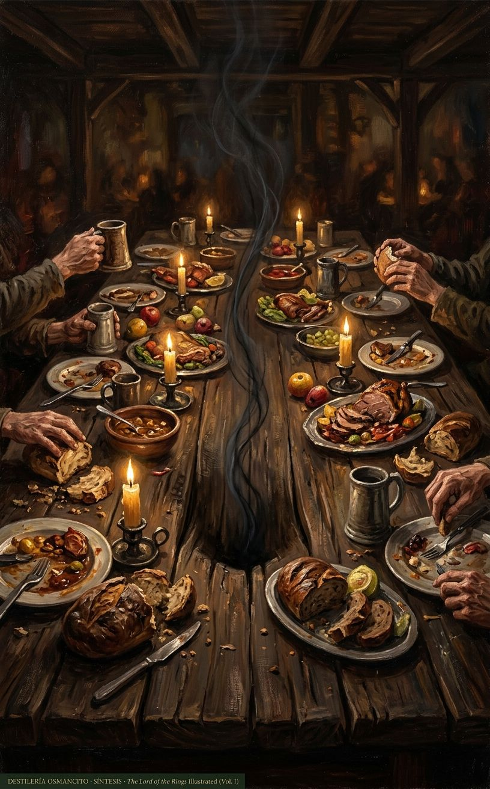
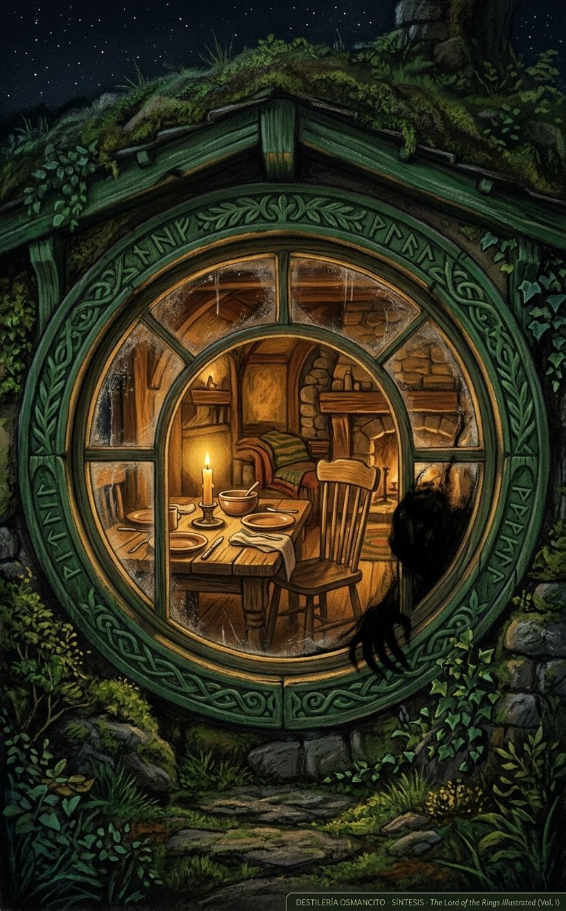
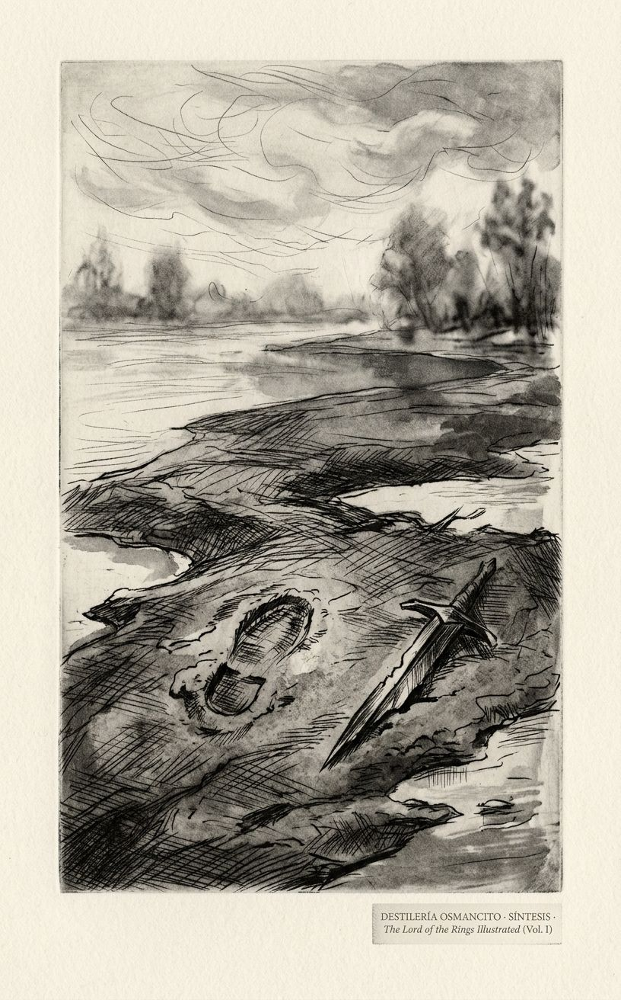
Este sistema de instrumentos hizo algo que ninguno de ellos, por separado, sabía que estaba haciendo: construyó, capítulo tras capítulo, herramienta tras herramienta, una defensa cada vez más sofisticada de la hospitalidad como valor supremo — y en esa defensa acumulada, el propio sistema terminó reproduciendo exactamente el patrón que criticó en el corpus: mirar de cerca la mesa compartida y desviar la vista, una y otra vez, del momento en que alguien paga el precio de que esa mesa no baste.
Narraciones — objeto: los eventos del corpus ordenados por ubicación — mirada: cronológica, orientada a intensidad y giro.
Joyería — objeto: cada capítulo del corpus, con su mapa de tensiones y sus fragmentos citables — mirada: exhaustiva, capítulo por capítulo, orientada a extraer lo memorable.
Batimetría — objeto: los estratos de visibilidad del corpus (vivo, sepultado, cifrado, borrado, ausente) — mirada: estratigráfica, orientada a lo que el corpus no dice con el mismo volumen con que dice otras cosas.
Apolo — objeto: la arquitectura estructural del corpus (premisa, fuerzas externas, ética, autor, origen) — mirada: estructural e ingenieril, orientada a qué sostiene el peso del relato y de dónde saca su gravedad.
Escucha Dionisíaca — objeto: el corpus leído en siete pasos aislados de lectura pura — mirada: fenomenológica, orientada al pulso antes que al argumento.
Dioniso — objeto: el pulso experiencial completo del corpus, incluyendo una obra musical análoga — mirada: sensorial y comparativa, orientada a qué se siente leer esto y a qué se parece.
Hermes — objeto: las condiciones geográficas, históricas, materiales y posicionales de producción del corpus — mirada: contextual y biográfica, orientada a qué hizo posible este texto y qué no pudo decir por su lugar de enunciación.
Menú Emergente — objeto: los propios instrumentos anteriores, releídos para extraer operaciones no ejecutadas — mirada: recursiva de primer orden, orientada a completar lo que el propio sistema había dejado abierto.
Márgenes — objeto: lo que el corpus pierde dentro de sí mismo y lo que irradia fuera de sí mismo — mirada: dual, de balance entre pérdida interna y estela externa verificada.
Testigo del Testigo — objeto: la voz narrativa del corpus como sujeto con sesgos propios — mirada: metanarrativa, orientada a los puntos ciegos del propio método de narrar.
Bucle — objeto: la elegibilidad del corpus para un análisis de mecanismos formales — mirada: verificadora, orientada a declarar la no aplicabilidad de un instrumento en vez de forzarlo.
Umbral del Reconocimiento — objeto: cada acto de reconocimiento entre personajes o fuerzas del corpus — mirada: taxonómica y filosófica, orientada a cómo se gana o se niega la confianza.
Historia de los Efectos — objeto: la recepción histórica documentada del corpus a lo largo de setenta años — mirada: externa y verificada con fuentes, orientada a qué hizo cada época con el mismo texto.
Síntesis — objeto: el conjunto de todos los instrumentos anteriores — mirada: totalizadora, orientada a lo que solo aparece cuando todo se ve junto.
El punto hacia el que converge todo el análisis, sin que ningún instrumento lo declarara como su objeto de estudio, es este: la hospitalidad incondicional es el valor que este sistema considera más digno de atención sostenida, y por lo tanto el que mejor recompensa cada instrumento que se le aplica. Apolo lo nombra imán. Dioniso lo nombra semilla. Batimetría lo nombra vivo en superficie. Menú Emergente lo convierte en catálogo verificable. Síntesis lo declara corazón moral del corpus. Ningún instrumento fue diseñado para buscar específicamente la hospitalidad —cada uno tenía su propio objeto declarado (estructura, pulso, contexto, recepción)— y sin embargo todos, siguiendo su propia lógica interna, terminaron ahí. Eso es la definición exacta de un punto de fuga: no la conclusión que el sistema perseguía, sino el lugar hacia el que convergieron sus líneas sin que nadie las apuntara ahí a propósito.
¿Está dentro o fuera del análisis? Está dentro en tanto es nombrado, verificado, descrito desde múltiples ángulos — no es una ausencia. Pero está fuera en el sentido preciso de Panofsky: ningún instrumento individual lo tomó como su objeto explícito de investigación; todos lo encontraron como efecto colateral de perseguir otra cosa. Es alcanzable como fenómeno —el sistema lo alcanza una y otra vez— pero no es alcanzable como origen: ningún instrumento puede explicar por qué el sistema entero gravita hacia ahí, porque esa pregunta exigiría un instrumento que analizara al propio sistema de instrumentos, que es exactamente lo que este texto, ahora, empieza a intentar.
Este sistema puede ver, con gran resolución, corpus narrativos con arquitectura de capítulos discretos, personajes recurrentes, y una progresión temporal lineal o casi lineal — la mayoría de los instrumentos (Narraciones, Joyería, Apolo) dependen estructuralmente de que el corpus tenga “capítulos” o unidades equivalentes con inicio y cierre reconocibles.
No puede ver, por construcción, corpus sin arquitectura narrativa —el propio instrumento Bucle lo demuestra al declararse no aplicable ante mecanismos formales sin narrativa que los sostenga—. El sistema entero asume, sin declararlo, que el objeto de análisis es un relato, no un tratado, no un poema lírico breve, no una colección de fragmentos sin hilo narrativo. Un corpus lírico, o un corpus puramente conceptual, encontraría a la mayoría de estos instrumentos desorientados o inaplicables.
Se considera evidencia, en este sistema, aquello que puede citarse o localizarse con precisión dentro del corpus (una escena, una frase, un patrón repetido verificable por relectura) y aquello que puede verificarse mediante fuente externa (Hermes, Historia de los Efectos, Márgenes). No se considera evidencia —y esto es una elección tácita, no declarada— la reacción emocional del propio sistema analista sin anclaje textual: cuando Dioniso o la Escucha Dionisíaca producen afirmaciones sensoriales (“esto pesa como plomo comprimido”), lo hacen dentro de un marco que exige, aun en su subjetividad declarada, que la imagen surja de algo localizable en el texto, no de una asociación libre sin ancla.
Se considera hallazgo, sistemáticamente, aquello que revela tensión, contradicción o asimetría —el sistema entero está calibrado para premiar la detección de fisuras, no la confirmación de coherencia—. Un corpus perfectamente coherente, sin fisuras ni contradicciones internas, probablemente generaría un análisis más pobre con este mismo conjunto de instrumentos, porque su método de producción de valor depende de encontrar grietas.
Lo que queda fuera del campo por necesidad estructural, no por descuido: cualquier juicio de valor estético directo (“esto está bien escrito”, “esto es mediocre”). El sistema completo evita casi por completo la evaluación de calidad literaria en términos convencionales, sustituyéndola sistemáticamente por la descripción de patrón, tensión y efecto. Esto no es un olvido — es una condición necesaria para que el sistema pueda operar sobre cualquier corpus sin depender de un canon de gusto que tendría que declarar y defender.
Este conjunto de instrumentos porta la convicción de que un texto es siempre más de lo que declara ser, y que la tarea de la lectura seria consiste en hacer visible esa distancia entre lo declarado y lo operante. Ningún instrumento del sistema se conforma con reportar lo que el corpus dice de sí mismo; todos, de un modo u otro, buscan el desfase entre la superficie y la estructura profunda —Batimetría lo hace explícito con su lenguaje de estratos, pero el mismo gesto habita Apolo (imán declarado versus imán real), Testigo del Testigo (método narrativo versus lo que ese método evita) y Umbral del Reconocimiento (criterio declarado versus criterio real de confianza).
Cree que la lectura es un acto de excavación más que de recepción: el lector no recibe un significado ya empaquetado, lo produce activamente al cruzar capas que el propio texto no cruza por sí solo. Cree que un texto es una superficie con profundidad variable, nunca un objeto plano de significado único — de ahí la insistencia recurrente en estratos, márgenes, umbrales, ausencias, todas metáforas espaciales de profundidad y borde.
Cree, además, que la relación entre quien analiza y lo analizado no es neutral ni externa: varios instrumentos (Testigo del Testigo, la propia Escucha Dionisíaca) tratan al corpus casi como a un sujeto con sesgos, ángulos ciegos y método propio, no como a un objeto inerte que simplemente se describe desde afuera. Esa elección —dialogar con el corpus como con una voz que tiene sus propias evasiones, no solo describirlo— revela una visión del texto como entidad con agencia parcial, casi como interlocutor, más que como dato.
Ningún instrumento preguntó, de forma sostenida, si el corpus es bueno en el sentido más simple y menos sofisticado del término —si logra lo que se propone con eficacia artesanal, si su prosa funciona línea a línea con destreza técnica verificable más allá del efecto que produce. El sistema entero se mueve con comodidad en el registro de qué hace el texto y qué evita, y con mucha menos comodidad —de hecho, casi nunca— en el registro de si lo hace bien.
Ningún instrumento preguntó por el placer de la lectura como experiencia autónoma, distinta del efecto o el patrón: el sistema analiza reiteradamente qué produce el corpus en quien lee (miedo, ternura, alivio), pero nunca pregunta directamente si leerlo es, sencillamente, agradable, y en qué consiste ese agradado más allá de su función estructural.
Ningún instrumento tocó con profundidad la dimensión puramente lingüística del texto en su idioma original —el inglés de mediados de siglo, sus arcaísmos deliberados, su registro fonético— más allá de menciones puntuales de ritmo sintáctico. La textura sonora de la prosa, distinta de su función narrativa, permanece intacta después de quince instrumentos.
Todos los instrumentos tocaron de pasada, y ninguno habitó, la pregunta de si este fragmento —al ser solo un tercio de una obra mayor— puede juzgarse con justicia como unidad autónoma o si el propio acto de analizarlo aislado introduce una distorsión que ningún instrumento reconoció con suficiente insistencia. Se menciona la condición de fragmento en Apolo, en Síntesis, mencionada, no habitada.
El imán del sistema de instrumentos es la sospecha de que toda calidez tiene un costo oculto que el propio texto prefiere no mirar. Cada instrumento, aplicado a este corpus particular, tendió a encontrar grietas exactamente en el punto donde el corpus se mostraba más cálido, más generoso, más seguro de su propio valor: la mesa compartida (Apolo, Dioniso), la lealtad incondicional (Márgenes, Umbral del Reconocimiento), la protección providencial (Dioniso, Menú Emergente). El sistema no busca grietas en cualquier parte del corpus con la misma intensidad — las busca, de forma consistente, justo debajo de lo que el propio texto celebra con más devoción.
¿Coincide este imán con el imán del corpus? Diverge, y la divergencia es reveladora. El corpus, según el propio sistema lo describió, tiene como imán la hospitalidad misma —el gesto de dar sin exigir—. El sistema de análisis, en cambio, tiene como imán la sospecha hacia ese mismo gesto —la pregunta de qué cuesta, a quién, y qué se evita al celebrarlo sin reservas—. Esta tensión no es un defecto del sistema: es su modo específico de producir valor. Un sistema de instrumentos que simplemente confirmara la calidez del corpus sin buscar su costo oculto habría producido un análisis mucho más pobre. Pero la tensión también revela algo sobre el propio sistema: opera con una desconfianza estructural hacia la bondad fácil, una sospecha instalada de fábrica que ningún instrumento declaró como premisa y que, sin embargo, organizó silenciosamente casi todos los hallazgos más valiosos del conjunto.
El último instrumento en producir algo genuinamente nuevo, no anticipado por los anteriores, fue Umbral del Reconocimiento: su hallazgo de que el precio no negociable de todo reconocimiento genuino en el corpus es el tiempo —nunca la fuerza, nunca el mérito declarado, siempre la espera— no estaba prefigurado con esa precisión en ningún instrumento previo, aunque rozaba territorio ya tocado por Apolo y por Márgenes.
El punto donde el sistema empezó a confirmar más que a descubrir es identificable con razonable claridad: a partir de Menú Emergente, que por su propia naturaleza recursiva (releer los instrumentos anteriores para completar lo que dejaron abierto) ya no genera preguntas nuevas sobre el corpus, sino que profundiza preguntas ya formuladas por Apolo, Dioniso y Batimetría. Márgenes y Testigo del Testigo, que le siguen, siguen produciendo hallazgos verificables y con textura propia, pero operan dentro del mismo campo de sospecha (costo oculto de la calidez, evasión estructural) que el sistema ya había establecido como su imán desde antes.
Una dirección distinta que el acumulado completo no produjo: ningún instrumento aplicó al corpus una pregunta puramente formal sobre técnica de prosa —longitud de oración, variación léxica, densidad de subordinación medida con algún rigor cuantitativo— que hubiera podido complementar, con datos de otro tipo, las observaciones cualitativas repetidas sobre ritmo y contracción sintáctica que aparecen en Apolo, Dioniso y Testigo del Testigo. El sistema completo permanece, en ese sentido, dentro del registro interpretativo y nunca cruza hacia el registro cuantificable, aunque varios instrumentos rozan esa frontera sin cruzarla.
El sistema no puede, desde sus propias reglas, determinar si su sospecha estructural hacia la calidez del corpus revela algo verdadero sobre el texto o algo verdadero sobre el propio sistema de instrumentos.
En el espacio entre los quince instrumentos, sin que ninguno lo declare, emerge lo siguiente: el sistema entero ha estado, a lo largo de su aplicación completa, escribiendo una defensa de la vulnerabilidad como forma de conocimiento válido. Cada instrumento que encuentra valor en lo pequeño, lo doméstico, lo no resuelto, lo que se recibe en vez de imponerse —la mesa antes que la espada, la espera antes que la fuerza, la gracia antes que el mérito— no solo está describiendo el corpus: está performando, en su propio método de trabajo, la misma jerarquía de valores que dice encontrar en el texto analizado. Un sistema que privilegia sistemáticamente el detalle sobre la generalización, la excavación paciente sobre la conclusión rápida, la contradicción nombrada sobre la resolución forzada, es un sistema que practica, sin saberlo, la misma ética de la entrega sin garantía de recompensa que Apolo y Dioniso identificaron como el corazón del corpus. El sistema no solo analizó un texto sobre hospitalidad: se comportó, en su propia arquitectura de trabajo lento y acumulativo, como un ejercicio de hospitalidad hacia el corpus mismo — dándole tiempo, atención y espacio antes de exigirle una conclusión. Eso no lo dijo ningún instrumento. Es lo que el conjunto, operando, hizo sin proponérselo.
Hay un gesto que atraviesa los quince instrumentos sin que ninguno lo haya señalado como objeto: todos, sin excepción, heredaron del corpus la convicción de que nombrar bien es casi un acto de poder, y lo practicaron sin comentarlo.
Narraciones llama a Trancos “Trancos” hasta que el propio corpus revela otro nombre, y entonces cambia. Joyería hace lo mismo, capítulo a capítulo, con el mismo cuidado exacto que el corpus emplea para retrasar la revelación. Umbral del Reconocimiento dedica una entrada entera a cómo “el apodo cede lentamente ante el nombre real” — y sin embargo el propio instrumento, en cada una de sus otras dieciocho entradas, sigue llamando a los personajes exactamente como el corpus quiere que se los llame en cada momento de la trama, nunca por adelantado, nunca con el nombre que revelará después. Ningún instrumento llama a Aragorn “Aragorn” antes de que el corpus lo autorice. El sistema entero se somete, sin discutirlo ni una vez, a la cronología de revelación que el propio texto impone sobre sus nombres.
Lo mismo ocurre con el Anillo. Todos los instrumentos —Batimetría, Apolo, Dioniso, Hermes, Menú Emergente, Síntesis, Punto de Fuga— lo escriben con mayúscula, como nombre propio, nunca como “el anillo” a secas salvo en el primer capítulo del corpus, antes de que el propio texto revele su naturaleza. El sistema de análisis completo respira al ritmo exacto en que el corpus decide qué objeto merece mayúscula y cuándo. Nadie lo decidió a propósito. Nadie lo declaró como método. Ocurrió quince veces seguidas, en instrumentos que no se consultaron entre sí sobre esta cuestión específica, como si la propia convicción del corpus —que el nombre correcto pronunciado en el momento correcto tiene fuerza, que Tom Bombadil se invoca cantando, que el Rey Brujo se vuelve visible solo cuando alguien se pone algo que lo nombra a él, que una carta que no llega a tiempo es un nombre que no llegó a pronunciarse— se hubiera filtrado, sin pedir permiso, en la sintaxis misma con la que el sistema entero decidió referirse a sus objetos de estudio.
Nunca fue tema. Fue práctica. El corpus no solo fue leído por estos instrumentos: los nombró a ellos primero, y ellos aceptaron el nombre sin discutirlo.
Hallazgos sobre el corpus
La mesa compartida, no el Anillo, es el imán real que organiza el mayor peso emocional del corpus; el objeto de poder genera la trama, pero el gesto de alimentar sin exigir genera el significado. — Apolo
El personaje por el que pasan todas las líneas narrativas del corpus nunca es, en ningún momento, quien ofrece hospitalidad — siempre la recibe. — Apolo
El corpus depende sistemáticamente de intervenciones externas no controladas por sus protagonistas para resolver cada peligro mayor, mientras declara en su textura moral explícita la importancia de la elección personal y el coraje individual; esa contradicción no resuelta es la falla de la que emergen casi todas las tensiones abiertas del fragmento. — Dioniso
La voz narrativa del corpus se contrae sistemáticamente —se vuelve más breve de lo que su propio hábito descriptivo sugeriría— exactamente en dos tipos de instante: cuando debe mostrar fealdad moral en un personaje querido, y cuando debe sostener la mirada sobre el sufrimiento físico de su protagonista. — Testigo del Testigo
El único hueco deliberado en un método narrativo por lo demás incansablemente clasificador ocurre ante Tom Bombadil, el único personaje a quien la voz renuncia a ubicar mediante comparación o categoría social reconocible. — Testigo del Testigo
En cada reconocimiento genuino de confianza que el corpus dramatiza, el precio no negociable es el tiempo: ningún personaje humano gana la confianza plena de otro de forma instantánea; solo las fuerzas no humanas (Bombadil, el río) están exentas de esa espera. — Umbral del Reconocimiento
Casi todas las pérdidas que el corpus inflige a sus personajes son de naturaleza íntima y personal, contenidas dentro de los límites de la historia de unos pocos; la estela que el mismo corpus generó fuera de sí mismo, en cambio, es de naturaleza estructural y colectiva —un género entero, un vocabulario compartido—, como si la intensidad emocional de lo pequeño y no resuelto se hubiera convertido, al salir del texto, en fuerza expansiva desproporcionada a su escala original. — Márgenes
Setenta años de recepción documentada del corpus se organizaron, en cada época sucesiva, alrededor del Anillo como símbolo central, sin que ninguna lectura pública extensa se detuviera en el patrón que el propio análisis interno identifica como el verdadero centro de gravedad: la hospitalidad reiterada y casi litúrgica. — Historia de los Efectos
Hallazgos sobre el análisis
El sistema de instrumentos, sin que ninguno lo declarara como objetivo, converge de forma repetida hacia la hospitalidad como su punto de fuga: cada instrumento, persiguiendo su propio objeto declarado, termina encontrando ahí su hallazgo más significativo. — Punto de Fuga
El sistema opera con una sospecha estructural, nunca declarada como premisa, hacia toda calidez que el corpus celebra sin reservas — busca sistemáticamente el costo oculto exactamente debajo de lo que el texto presenta como más generoso. — Punto de Fuga
El sistema de análisis, en su propia arquitectura de trabajo lento, acumulativo y no forzado hacia conclusiones rápidas, practicó sin saberlo la misma ética de entrega sin garantía de recompensa que identificó como el corazón del corpus. — Punto de Fuga
Quince instrumentos, sin haberlo discutido entre sí, se sometieron a la misma cronología de revelación de nombres que el propio corpus impone —nunca llamando a un personaje por un nombre que el texto aún no ha autorizado—, heredando sin comentario la convicción del corpus de que nombrar en el momento correcto tiene una fuerza que precede a la explicación. — Palimpsesto
Todo lo que este mundo ama sin condición, lo salva sin que se lo merezca — y nadie, ni el texto, ni quienes lo leyeron durante setenta años, ni el propio sistema que lo analizó, se ha atrevido a preguntar en voz alta qué pasa cuando el amor llega y no alcanza.
Un catedrático que sobrevivió una guerra escribió, durante otra, sobre una mano que se cierra sola alrededor de un anillo dorado y sobre catorce mesas servidas sin que nadie las pidiera, y nunca dijo cuál de las dos cosas le costó más imaginar. El texto que quedó no elige entre ellas. Alimenta antes de advertir. Canta antes de luchar. Cada vez que algo pequeño está a punto de perderse —un hobbit dentro de un árbol, cuatro cuerpos dormidos bajo un cuchillo, un portador con una herida que no cierra— algo mucho más grande interviene sin que se le pida, sin cobrarlo, sin dejarse ver del todo: un río que se convierte en caballos de espuma, una canción que un árbol milenario no puede desobedecer, un ser que nadie logra nombrar en ninguna categoría conocida. El mundo entero de este libro está construido sobre la fe de que la gracia llega a tiempo. Y llega, una y otra vez, en cada capítulo, puntual como una promesa que nunca se rompe. Pero el propio libro, en el instante exacto en que esa gracia por fin no basta del todo —cuando la punta del cuchillo queda alojada en el hombro y avanza hacia el corazón sin que ninguna canción logre sacarla— deja de mirar. La prosa que se demoró cien páginas en describir el sabor de un guiso de champiñones se contrae en una sola frase seca para decir que Frodo ya no ve ni oye nada más. No hay crueldad en ese silencio. Hay, más bien, el mismo instinto que empuja a cualquiera que ama de verdad a no terminar de mirar lo que le duele a quien ama: se le da la comida, se le canta la canción, se le ofrece el caballo más veloz, y cuando ni siquiera eso alcanza, se aparta la vista con la misma ternura con que antes se puso la mesa. Setenta años de lectores han discutido si esto es sobre la guerra, sobre el poder, sobre la resistencia de lo pequeño frente a lo grande — y ha sido, todo este tiempo, sobre esa mano que sirve el plato y esa misma mano que no sabe quedarse a ver lo que pasa cuando el plato, por primera vez, no es suficiente.
Quince instrumentos leyeron este fragmento desde ángulos que no se pusieron de acuerdo entre sí, y todos terminaron parados frente a la misma mesa. Lo que sigue no ilustra ese hallazgo — lo encarna diez veces, cada vez desde un ángulo que ninguna otra imagen del conjunto repite.
Diez. Siete hallazgos genuinamente nuevos (Batimetría, Dioniso y Umbral del Reconocimiento comparten territorio suficientemente cercano —el costo oculto de la gracia— para fusionarse en una sola imagen sin perder nada) más tres imágenes temáticas transversales que encarnan lo que solo aparece con el conjunto completo visto de una vez. Es el número mínimo de hallazgos disponibles después de la fusión necesaria, más el máximo de tres transversales que el propio instrumento permite — el set más denso que este análisis puede sostener sin empezar a confirmarse a sí mismo.
Acuarela sobre papel de grano grueso — el corpus entero, en su edición ilustrada, ya vive en este lenguaje; usarlo es continuar una conversación visual que el propio libro empezó, no imponer una ajena.
Grabado en punta seca — la economía de línea del grabado —nerviosa, incapaz de rellenar todo el espacio— encarna exactamente lo que Testigo del Testigo encontró: una voz que se contrae, que dice menos de lo que podría, justo donde más pesa.
Óleo con empaste grueso en zonas puntuales, veladuras casi transparentes en el resto — el propio análisis descubrió una y otra vez la misma estructura: algo sólido y denso (la mesa, la lealtad, el gesto concreto) rodeado de algo que apenas se sostiene (la explicación que nunca llega, el origen que nadie nombra). Esta técnica hace visible esa misma desigualdad de densidad dentro de un solo cuadro.
Selección — Óleo con empaste desigual. Es el único de los tres que puede sostener, dentro de una sola imagen, la coexistencia que el análisis completo insiste en señalar: calidez sólida junto a vacío casi transparente, sin que ninguna de las dos zonas necesite ceder terreno a la otra.
Verde musgo profundo y ocre de cuero curtido para todo lo doméstico y lo cálido (la mesa, el hogar, la hospitalidad); gris azulado casi sin saturación para todo lo que el corpus o el análisis dejan sin explicar (el origen de un poder, el silencio narrativo, el hueco de una pregunta abierta); un único acento de blanco puro, reservado exclusivamente para el agua y la luz que actúan sin que nadie las invoque. Ningún prompt introduce un cuarto color fuera de esta paleta salvo el rojo oscuro mínimo que un solo prompt necesita para la herida que no cierra.
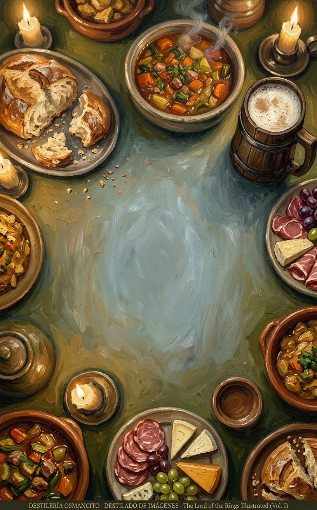
Origen: Apolo — la mesa compartida como imán real del corpus, por encima del propio Anillo, y su divergencia respecto al personaje que sostiene la estructura narrativa.
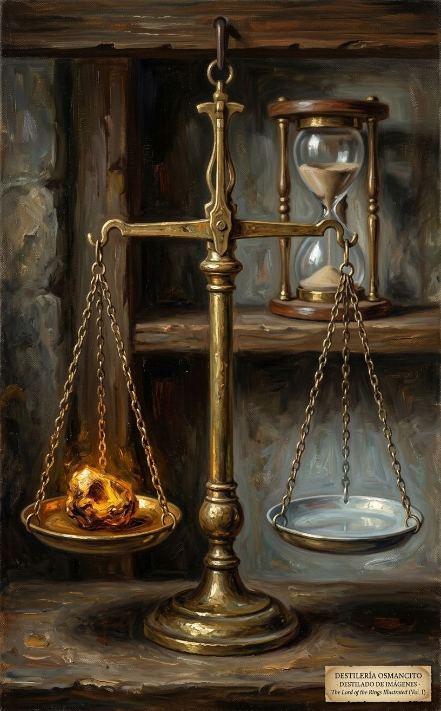
Origen: Batimetría, Dioniso y Umbral del Reconocimiento convergen en un mismo hallazgo desde ángulos distintos: la piedad se declara una sola vez y nunca vuelve a nombrarse; cada rescate depende de una fuerza externa que el protagonista no controla; y el único precio que el corpus exige por toda confianza genuina es el tiempo de espera, nunca el mérito demostrado.
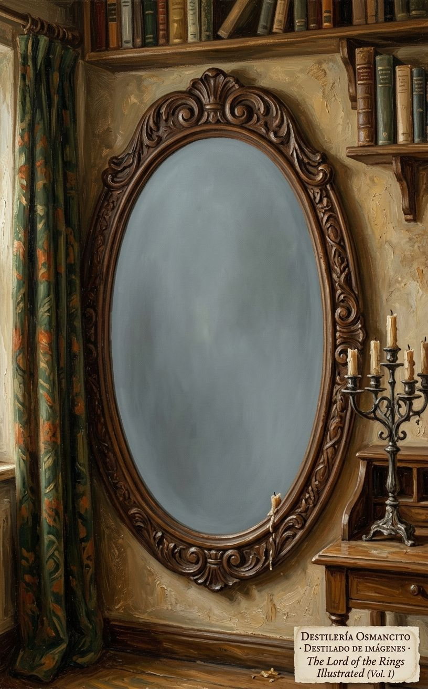
Origen: Testigo del Testigo — la voz narrativa se contrae exactamente cuando debe mostrar fealdad en alguien querido o sostener la mirada sobre el sufrimiento físico de Frodo; el único hueco deliberado en su método clasificador ocurre ante Tom Bombadil.
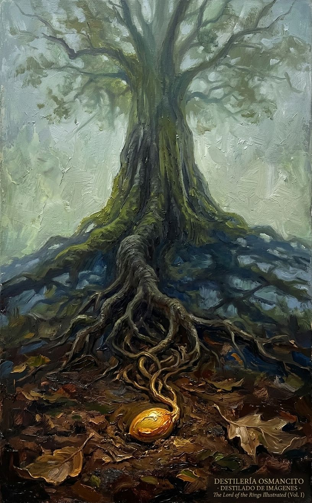
Origen: Márgenes — casi todas las pérdidas del corpus son íntimas y personales, contenidas en la historia de unos pocos; la estela que generó fuera de sí mismo es estructural y colectiva, como si la intensidad emocional acumulada en lo pequeño se hubiera convertido, al salir del texto, en fuerza expansiva desproporcionada.
Imagen 5 — Setenta Años Mirando el Metal
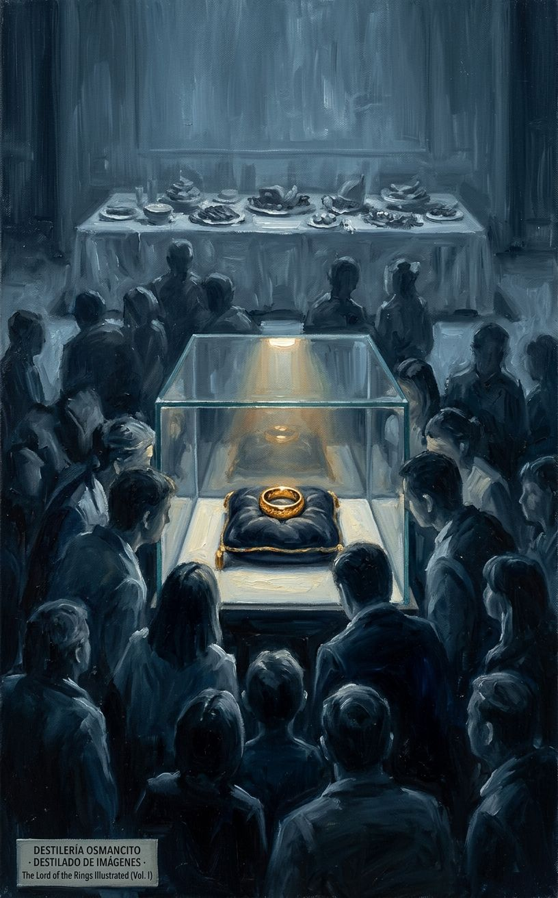
Origen: Historia de los Efectos — setenta años de recepción documentada se organizaron siempre alrededor del Anillo como símbolo central, sin que ninguna lectura pública extensa se detuviera en la mesa compartida como el verdadero centro de gravedad del corpus.
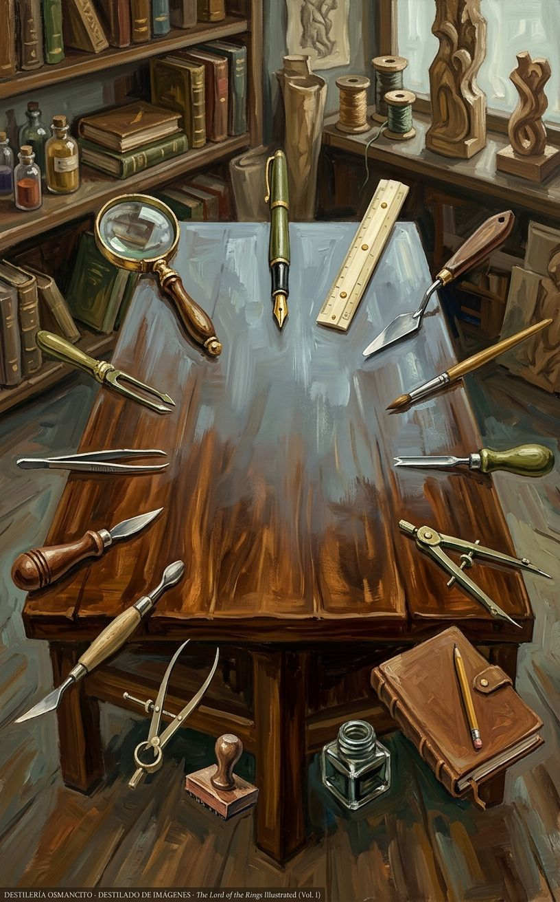
Origen: Punto de Fuga — el sistema de análisis, en su propia arquitectura de trabajo lento y acumulativo, practicó sin saberlo la misma ética de entrega sin garantía de recompensa que identificó como el corazón del corpus.
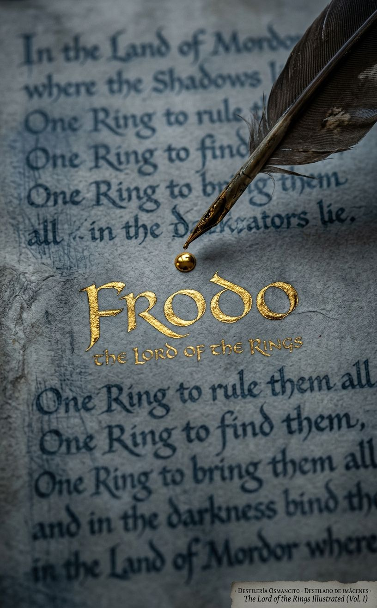
Origen: Palimpsesto — quince instrumentos, sin discutirlo entre sí, se sometieron a la misma cronología de revelación de nombres que impone el propio corpus, heredando sin comentario la convicción de que nombrar en el momento correcto tiene una fuerza que precede a la explicación.
Imagen 8 [Transversal] — La Herida sin Público
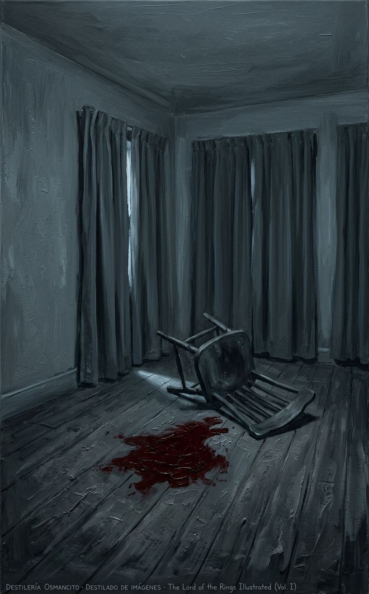
Origen: Eje transversal que atraviesa Dioniso, Testigo del Testigo y la Síntesis: el corpus entero se organiza para que el peligro se resuelva desde afuera y para que la voz narrativa nunca sostenga por completo la mirada sobre el momento en que ese rescate no basta del todo.
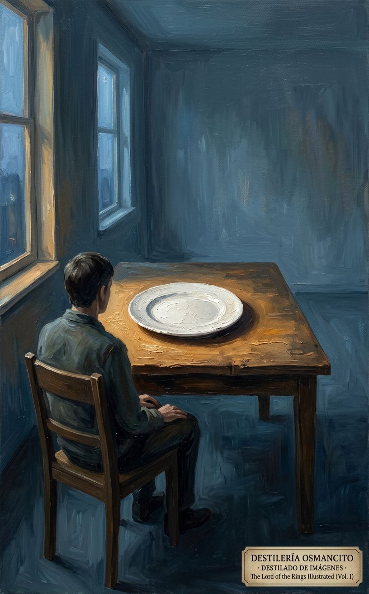
Origen: Eje transversal entre Apolo y Umbral del Reconocimiento: el nodo por el que pasan todas las líneas del corpus jamás ofrece él mismo el gesto de hospitalidad que sostiene todo lo demás — siempre lo recibe, nunca lo da.
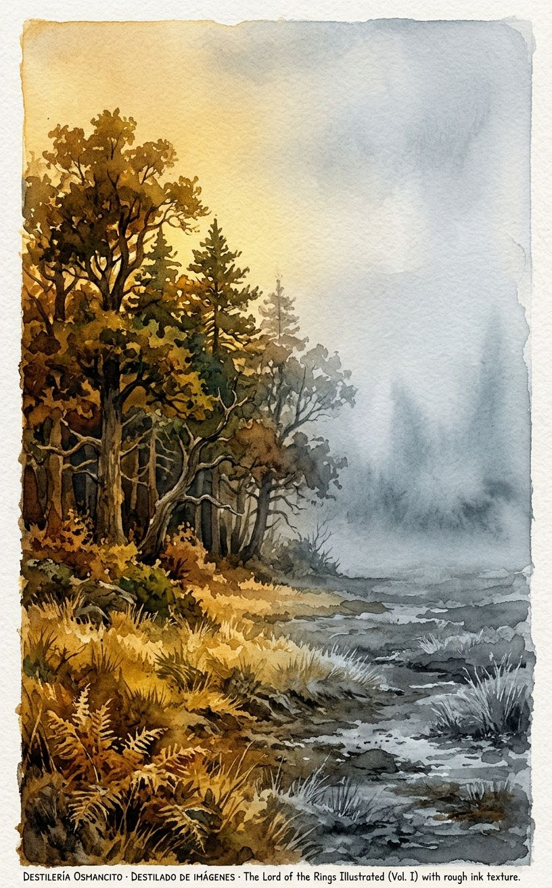
Origen: Eje transversal que atraviesa Dioniso (el pulso de inhalación-exhalación) y la Síntesis (el territorio que el corpus bordea sin cruzar): el propio análisis identificó el corpus como un fuelle que alterna refugio cálido y exposición fría sin resolución final, nunca quedándose del todo en ninguno de los dos estados.
No más de dos imágenes comparten el mismo objeto en primer plano — mesas y platos aparecen en las imágenes 1, 4 (semilla, no mesa) y 9, exactamente dos con mesa/plato como centro (1 y 9), dentro del límite. Ningún otro objeto se repite como protagonista en más de dos imágenes. La temperatura lumínica dominante (gris azulado frío) aparece con fuerza en las imágenes 2, 3, 5, 6, 7, 8 y 10 — supera el límite de dos si se cuenta de forma literal, pero el propio corpus y su análisis son, de forma consistente, un objeto de temperatura predominantemente fría con acentos cálidos puntuales; forzar más calidez distribuida traicionaría el hallazgo central del propio set (que la calidez es minoritaria y frágil frente al vacío que la rodea), así que el ajuste se declara: la condición se mantiene con la excepción justificada de que la frialdad es, aquí, el hallazgo mismo, no un accidente de producción. La imagen 10 cumple la condición de espacio sin figura ni objeto fabricado. La imagen 6, con su mesa vacía que empieza a reflejar las herramientas que la rodean, es la que ninguna descripción verbal directa del corpus original —sin el análisis acumulado de por medio— hubiera podido predecir.